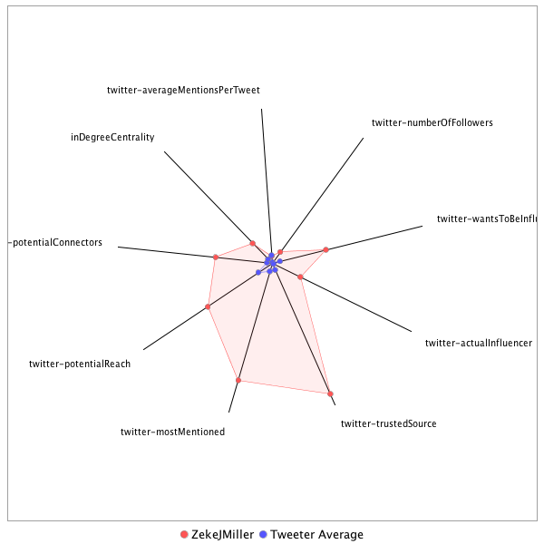

This tweeter has been identified as an influencer. Its target audience and hashtag and word usage are analyzed below.
Basic Statistics
Number of direct followers 192730 The peak number of followers that the tweeter had during any time period. Number of retweeters 283 Number of agents that retweeted the key influencer. Number of secondary followers 31396884 The sum of the followers of those who retweeted the key influencer.
Measure Values of Other Influencers node versus Tweeter Average
This compares the measure values of the key influencer with the average values across all tweeters. For each measure line, the center-point means zero and the end-point means the maximum score across all tweeters.

Where was the influencer?
The agent is not recorded as being in any locations. Either he tweeted without geo-tags or we have no information about the tweets he sent.
The agent and retweeters were in 71 different locations.

What hashtags did the influencer use?
This displays the top ranked hashtags that the influencer and its retweeters used.
Rank hashtag Count 1 AHCA 817 2 Comey 745 3 Trump 677 4 pharma 594 5 BREAKING 518 6 SCOTUS 475 7 TrumpCare 459 8 mtal 441 9 Obamacare 410 10 Russia 409 11 biotech 383 12 FDA 368 13 GA06 365 14 CNNsotu 356 15 ACA 347 16 ComeyHearing 339 17 ParisAgreement 337 18 TheLead 300 19 VAGov 252 20 MemorialDayWeekend 237 21 NIH 232 22 adopt 220 23 Manchester 179 24 drugprices 177 25 Qatar 171 26 AdoptDontShop 170 27 dog 169 28 ComeyFiring 161 29 healthcare 158 30 ge2017 151 31 ComeyTestimony 143 32 covfefe 136 33 ForTheRecord 130 34 ParisAccord 127 35 ComeyDay 120 36 trumprussia 120 37 CongressionalBaseballGame 116 38 Iran 112 39 ksleg 112 40 TrumpBudget 111 41 Syria 109 42 MemorialDay 108 43 LondonBridge 107 44 FF 106 45 FOIA 104 46 cat 103 47 travelban 101 48 NYC 97 49 ThisIsGoingWell 95 50 MTpol 94 51 climatechange 94 52 fakenews 93 53 CDC 92 54 ISIS 89 55 DonaldTrump 88 56 drugpricing 88 57 rescue 88 58 Medicaid 86 59 Israel 85 60 txlege 85 61 FBI 84 62 ThisWeek 84 63 Opioids 83 64 US 83 65 potusabroad 83 66 TheBachelorette 82 67 omnibus 82 68 climate 80 69 Cuba 79 70 foster 79 71 JamesComey 76 72 SessionsHearing 72 73 CR 71 74 Hardball 71 75 Nats 70 76 China 69 77 MOLeg 69 78 science 67 79 TBT 66 80 BladeInCuba 64 81 snl 64 82 SC05 63 83 NorthKorea 62 84 Sessions 62 85 CATS 59 86 MAGA 58 87 Venezuela 58 88 sallyyates 58 89 NATO 57 90 London 56 91 Putin 55 92 SaudiArabia 55 93 FTN 54 94 SethRich 54 95 Turkey 54 96 opioid 54 97 Alexandria 53 98 Saudi 53 99 PDUFA 51 100 ParisClimateDeal 51
Tweet List
This displays all of the tweets of the influencer ordered from earliest to latest. Click on a tweet to see its status in Twitter.
Number Tweet ID Date Message 1 859467277808390144 2017-05-02 13:59:01-04 Mulvaney: “The President is frustrated that he negotiated with the Ds & they went out and tried to spike the football & make him look bad.” 2 859113445400170502 2017-05-01 14:33:01-04 .@PressSec on Israel embassy move “That’s still being discussed by staff” 3 859113110195580928 2017-05-01 14:31:41-04 "It’s a question of priorities and balance” he adds. "I think the president understands the balance" https://t.co/Efgontav3b 4 859112240611512320 2017-05-01 14:28:14-04 Won’t say whether White House Counsel is involved, but says both logistics + policies are being studied https://t.co/a4ACpsnns1 5 860165107099324416 2017-05-04 12:11:57-04 Inbox: President Donald J. Trump looks forward to welcoming President Juan Manuel Santos of Colombia to the White House on May 18, 2017. 6 862382329318256641 2017-05-10 15:02:24-04 .@LaraLeaTrump and @SecretaryZinke are appearing at @GOP spring meeting in Coronado this week 7 862112111211802624 2017-05-09 21:08:39-04 .@PressSec says Trump reached out to house & senate leadership. (Spoke to Ryan and Schumer, reached out to goodlatte, grassley, & Feinstein) 8 861661139356323843 2017-05-08 15:16:39-04 Yates: "And that had created a compromise situation" https://t.co/H5UrTb4aPm 9 860182221826797569 2017-05-04 13:19:57-04 "I think the president is embracing reform” @SHSanders45 says when asked if Trump is embracing ‘Trumpcare’ label 10 862082693584084992 2017-05-09 19:11:45-04 -> https://t.co/ti855rF0xG 11 862063733283094529 2017-05-09 17:56:25-04 .@WhiteHouse sends reporters statements from Dems and WSJ edit board calling on Comey to go https://t.co/KivHK7MapV 12 862370961152258048 2017-05-10 14:17:13-04 .@SHSanders45 says Trump has confidence in Acting FBI Director McCabe 13 862360547320365060 2017-05-10 13:35:51-04 This would directly contradict what @PressSec told reporters Tuesday night. https://t.co/jeMKMm4LA7 14 861662855753601029 2017-05-08 15:23:28-04 Yates said McGahn asked about why DOJ cares if one White House official lies to another. She said underlying behavior was concerning 15 862064373656956928 2017-05-09 17:58:57-04 Comey dismissal letter https://t.co/JDs5RJsozP 16 860588193120473088 2017-05-05 16:13:08-04 WASHINGTON (AP) - Trump's nominee for Army secretary withdraws, cites 'false and misleading' attacks against him. 17 860181258026061824 2017-05-04 13:16:07-04 Trump to meet Turnbull after the dinner rather than before per @SHSanders45 as he remains in DC longer for "meetings" 18 860179610314694656 2017-05-04 13:09:35-04 Some selected interesting quotes from SAO briefing on POTUS foreign trip https://t.co/5HANNWN6n7 19 862331683579756545 2017-05-10 11:41:09-04 No press coverage was allowed https://t.co/GVHG8SzhKv 20 861433975977512960 2017-05-08 00:13:59-04 Reporters scour Instagram to keep up on Trump weekend outings https://t.co/aIWvmjSm0Q 21 860202592923779072 2017-05-04 14:40:54-04 In Rose Garden. Not the "press conference" @POTUS tweeted about... https://t.co/hxw8ROJQFe 22 859845737861001216 2017-05-03 15:02:53-04 .@PressSec: The president has made it very clear that preexisting conditions are covered under the bill in every single instance 23 859839763754487808 2017-05-03 14:39:09-04 .@PressSec rejecting critical study of GOP healthcare bill by saying its impact is unknowable at this time 24 859844339698204673 2017-05-03 14:57:20-04 Today’s briefing: When is a wall *The* Wall 25 859781379843862528 2017-05-03 10:47:09-04 SAN JUAN (AP) - Puerto Rico governor announces historic restructuring of $70B debt through courts after talks with bondholders fail. 26 860213376630312961 2017-05-04 15:23:45-04 .@POTUS: “The groups have all come together. We have the Tuesday group. So many groups. The Freedom Caucus” 27 860183068405112832 2017-05-04 13:23:19-04 .@SHSanders45 "America can be first and still be a global leader" 28 859517513994043392 2017-05-02 17:18:39-04 Zoom in to read the list of Trump campaign promises and their status on Bannon's office whiteboard https://t.co/DGxpt6mwx4 29 862371189230120960 2017-05-10 14:18:08-04 White House says Comey committed “atrocities.” But on Flynn said they didn’t want to smear a good man. 30 862366088092364800 2017-05-10 13:57:52-04 .@SHSanders45 on Comey: “Atrocities in circumventing the chain of command” 31 859397187268161536 2017-05-02 09:20:30-04 But he put "shutdown" in quotes so it means something else, right? https://t.co/B8fEpJhUS3 32 859522288823267328 2017-05-02 17:37:37-04 Inbox: "RNC Statement on CNN Blocking President Trump's Message" https://t.co/JSK7sSLhbR 33 859466359901757440 2017-05-02 13:55:22-04 Mulvaney says Dems wanted a shutdown, just hours after POTUS called for a shutdown. 34 859095614897999872 2017-05-01 13:22:10-04 Also unclear why Trump campaign is using hard dollars for this, when there are two outside groups... https://t.co/XUtZ78Culs 35 863022409636605952 2017-05-12 09:25:51-04 It’s not like the paper statements issued Tuesday/Wednesday held up either… https://t.co/mL1x4zq3zr 36 862111775008935936 2017-05-09 21:07:19-04 .@PressSec on when Trump learned of Rosenstein review: "My understanding is that he was made aware of it today" 37 860171589274488832 2017-05-04 12:37:42-04 Statement from the Press Secretary on President Donald J. Trump’s Upcoming Foreign Travel https://t.co/6KAvrkrZzQ 38 863071686102568960 2017-05-12 12:41:39-04 NEW: @whca president @jeffmason1 on POTUS tweet https://t.co/GQXnfO2FQv 39 863476060767367169 2017-05-13 15:28:30-04 PAPAL PLANE (AP) - Pope Francis says he won't try to convince Trump to soften his policies on immigration or the environment when they meet 40 862612914968166400 2017-05-11 06:18:40-04 Donald Trump After Hours https://t.co/hfiTKBaIXO w/ @michaelscherer 41 862725457300639745 2017-05-11 13:45:52-04 Tom Bossert says Trump signed a cybersecurity EO about an hour ago 42 862733035967578112 2017-05-11 14:15:59-04 Well done @MatthewNussbaum 43 864075607948349440 2017-05-15 07:10:53-04 Callista Gingrich set to be named ambassador to the Vatican @CNNPolitics https://t.co/q5M5zpNjGD 44 862734379059163136 2017-05-11 14:21:19-04 .@SHSanders45 still suggesting she knows more about the FBI rank-and-file than the Acting Director of the FBI 45 862619066585972737 2017-05-11 06:43:06-04 This week's @TIME cover: https://t.co/hfiTKBaIXO https://t.co/WeSvphK9jh 46 862736181427154949 2017-05-11 14:28:29-04 .@shearm with the question of the day: “really?" 47 862658728637714432 2017-05-11 09:20:42-04 Trump expected to launch commission on 'election integrity' - ABC News - https://t.co/XrjOL1Zakw via @ABC 48 862736437552263169 2017-05-11 14:29:30-04 .@SHSanders45: "I don’t think there was ever an attempt to the pin the decision on the deputy attorney general." 49 862345270075457536 2017-05-10 12:35:08-04 THIS-> https://t.co/yrCPZGGkXN 50 861662306572398592 2017-05-08 15:21:17-04 Yates said on Jan 27 (2nd meeting) McGahn asked about applicability of criminal statutes to Flynn 51 862331146717319168 2017-05-10 11:39:01-04 Full @POTUS on Comey via pooler @Jordanfabian https://t.co/ZjDnwi8az0 52 862613896774942720 2017-05-11 06:22:34-04 .@POTUS speaks to @TIME about the job https://t.co/73tMdlSRgs 53 864509624363483136 2017-05-16 11:55:30-04 McMaster says Bibi isn't joining Trump at the Western Wall 54 864604803174981632 2017-05-16 18:13:43-04 WOW. Just out from Trump campaign subject lined "SABOTAGE" https://t.co/w7xy0L47oF 55 864226501062950912 2017-05-15 17:10:29-04 McMaster statement to WaPo appears to be a tacit confirmation of the story https://t.co/6hENDGZfZg https://t.co/5WogELU4OX 56 864806262508277761 2017-05-17 07:34:14-04 MOSCOW (AP) - Putin says Russia is willing to hand over to US Congress, Senate records of Trump's talks with Lavrov. 57 859403039270109184 2017-05-02 09:43:46-04 SOCHI, Russia (AP) - President Vladimir Putin denies that Russia has ever interfered in the domestic politics of other countries. 58 864552635826933760 2017-05-16 14:46:25-04 Note: White House is trying to have it both ways: The leak, they claim, is false, but also somehow damaging to national security. 59 864512072947814400 2017-05-16 12:05:14-04 McMaster: “The president wasn’t even aware where this information came from. He wasn’t briefed on the sources and methods” 60 864134288824041472 2017-05-15 11:04:03-04 WASHINGTON (AP) - First lady: Son Barron to attend private Episcopal school in Maryland beginning this fall. 61 863924583363223552 2017-05-14 21:10:46-04 Unity Was Emerging on Sentencing. Then Came Jeff Sessions. https://t.co/UE9SOeB0or 62 864548505116868609 2017-05-16 14:30:00-04 .@PressSec: “There is no one who is more outraged about this than the president” 63 864235457365803008 2017-05-15 17:46:04-04 ... https://t.co/vhdiBxdZAB 64 864545572979691520 2017-05-16 14:18:21-04 .@PressSec won't say whether there is a formal or informal investigation into the leaks 65 864509991067299840 2017-05-16 11:56:58-04 McMaster says he's not concerned that foreign partners may stop sharing info with the US 66 864618817057570816 2017-05-16 19:09:24-04 WASHINGTON (AP) - Chairman of House oversight panel to seek copies of former FBI director memos: 'My subpoena pen ready' 67 864550372265926656 2017-05-16 14:37:25-04 .@PressSec calls Trump's sharing of intel with Russia "extremely appropriate" 68 864177398585098240 2017-05-15 13:55:22-04 Pool: In respond to reporter questions about how search for new FBI director is coming, POTUS said only: "Moving rapidly." 69 866636506223562754 2017-05-22 08:46:59-04 Tillerson pressed on AF1 about Trump's campaign rhetoric toward Muslims, says Trump is "increasing his own perspectives" https://t.co/yjiHr6SBAb 70 866673081166823424 2017-05-22 11:12:19-04 .@POTUS: "Never mentioned the word Israel" with the Russians. Adds that's news. 71 864872293297684480 2017-05-17 11:56:37-04 POTUS brags about F-35 and Ford-class carrier cost savings—neither of which are in service by the Coast Guard. 72 864984606046654464 2017-05-17 19:22:55-04 In other news, the Turkish Embassy's statement on last night's protestor beatings is ridiculous https://t.co/8nAA0dNSbl 73 865302994614706176 2017-05-18 16:28:05-04 Trump asked if he asked Comey to shut down Flynn investigation: “No. “ 74 860996421247545344 2017-05-06 19:15:18-04 "meetings" https://t.co/ddnYaAAfKD 75 864535309970702341 2017-05-16 13:37:34-04 Between this and the Western Wall line today, it’s going to be a very interesting trip to Israel next week for POTUS https://t.co/9sw2MXmI4A 76 863091617770737666 2017-05-12 14:00:51-04 ! Does Trump still have confidence in Acting FBI Dir McCabe as @SHSanders45 said wednesday, @PressSec says "I have not asked him." 77 862731638509359104 2017-05-11 14:10:26-04 Sanders on bungled timeline: “I hadn’t had the chance to have the conversation directly with the president” 78 865225181614284800 2017-05-18 11:18:53-04 WASHINGTON (AP) - Top Republican on Senate intelligence panel says Michael Flynn's lawyers say he will not honor subpoena. 79 864915936201113601 2017-05-17 14:50:03-04 Among FBI director candidates Trump is interviewing tonight: McCabe, Frank Keating, and (!!!) Joe Lieberman 80 866792729245876225 2017-05-22 19:07:45-04 White House updates guidance to correct "President Mahmoud Abbas of Palestine” to "President Mahmoud Abbas of the Palestinian Authority" https://t.co/1LO6os4grB 81 865164340030316544 2017-05-18 07:17:07-04 This week's @TIME cover: Inside Russia’s social media war on America https://t.co/xbrVDECBqW by @calabresim https://t.co/TmzxqM2KA6 82 866840306553147393 2017-05-22 22:16:48-04 DHS statement on Manchester incident https://t.co/lJhLsGTeP7 83 864875751631466496 2017-05-17 12:10:22-04 Trump at Coast Guard Commencement: "No politician in history…has been treated worse or more unfairly" 84 865659439101161472 2017-05-19 16:04:28-04 Israeli Intelligence Furious Over Trump’s Loose Lips https://t.co/coJ55nT2LL 85 865287866229936128 2017-05-18 15:27:58-04 not a good look https://t.co/Qyf4wwS1Pd 86 865251174252937216 2017-05-18 13:02:10-04 WASHINGTON (AP) - Senate panel says it has not received response from Michael Flynn's lawyer, correcting earlier comments from chairman. 87 864984220569128960 2017-05-17 19:21:23-04 NEW! Statement from President Donald J. Trump https://t.co/DTEy8ILKGF 88 865628068550811648 2017-05-19 13:59:48-04 On Marine One: POTUS, FLOTUS, Jared Kushner, Ivanka Trump, Schiller, and Priebus 89 869622338152787968 2017-05-30 14:31:36-04 .@PressSec on Trump/Merkel relationship: "Fairly unbelievable" adds they get along very well 90 869623871594483712 2017-05-30 14:37:42-04 Does Dubke departure indicate a shakeup? @PressSec: "I don't think so. I think the president is very pleased with his team." 91 867478956970303489 2017-05-24 16:34:34-04 CBO: CBO and JCT estimate that, in 2018, 14 million more people would be uninsured under H.R. 1628 than under current law. 92 867575651498328064 2017-05-24 22:58:48-04 This is unacceptable anywhere, anytime, to anyone. And against a reporter doing his job it's an assault on us all https://t.co/sKATWfmdre 93 867754704671047680 2017-05-25 10:50:18-04 BRUSSELS (AP) - At NATO headquarters, Trump lectures member countries on need to pay fair share for defense. 94 869621520263503872 2017-05-30 14:28:21-04 .@PressSec says Trump is still reviewing Afghanistan plans from the Pentagon. No timeline on decision 95 869623368169009152 2017-05-30 14:35:42-04 Does @POTUS believe humans contribute to climate change? @PressSec "Honestly I haven't asked him" 96 869946692535300100 2017-05-31 12:00:28-04 VA Sec Shulkin on medical marijuana in states where it’s legal "There may be some evidence that this is beginning to be helpful" 97 868298867246338048 2017-05-26 22:52:36-04 U.S. Quietly Lifts Limit on Number of Refugees Allowed In, via @nytimes https://t.co/9vszIWefWV 98 869925047594561537 2017-05-31 10:34:28-04 BRUSSELS (AP) - EU official: EU and China to reaffirm their commitment to Paris climate deal regardless of US decision. 99 868292917529632769 2017-05-26 22:28:58-04 Zbigniew Brzezinski, National Security Adviser to Jimmy Carter, Dies at 89, via @nytimes https://t.co/U0N7CnPW5p 100 875076959159668736 2017-06-14 15:46:19-04 FBI: Joint Statement on Shooting in Alexandria, Virginia https://t.co/zYGZgutflm 101 874588302485139456 2017-06-13 07:24:35-04 Russian cyber attack breaches of 39 states threaten future U.S. elections https://t.co/7cacin1qyg via @bpolitics 102 872835785984266242 2017-06-08 11:20:42-04 But now Mueller is looking into potential obstruction, Comey said https://t.co/PAHdgrAhxC 103 872824286054158336 2017-06-08 10:35:00-04 POTUS is in the West Wing, I’m told watching the opening of the hearing in his private dining room off the Oval. 104 872823102958383107 2017-06-08 10:30:18-04 Comey again on the dossier: “Not a question I can answer in open session” 105 872636139697582080 2017-06-07 22:07:23-04 Here are the RNC talking points to Trump allies on Comey's testimony tomorrow https://t.co/8X9NKTQHMe 106 872627741828534272 2017-06-07 21:34:00-04 .@GregForMontana sends @Bencjacobs a “sincere apology” and pledges $50,000 to @pressfreedom. Ben accepts. https://t.co/ev3JyTtUGy 107 872849740211380225 2017-06-08 12:16:09-04 ?!?!?!?!?!?!?!??!?!?!!?!?!?!? Q: Is there a White House taping system? @SHSanders45 "I have no idea" 108 873257128059961345 2017-06-09 15:14:58-04 Trump says he’ll answer taping question very soon. “You will be very disappointed when you hear the answer” 109 873251727469944832 2017-06-09 14:53:30-04 Trump: “The nation of Qatar has unfortunately been a funder of terrorism, and at a very high level” 110 872940691349008386 2017-06-08 18:17:33-04 White House National Security Advisor and Director of the National Economic Council Announce Senior Staff Appointment https://t.co/ilbDua2JH4 111 872834422093082625 2017-06-08 11:15:17-04 Comey on whether VP Pence was aware of concerns about Flynn: “My understanding is that he was…from Acting AG Yates” 112 872829723172380672 2017-06-08 10:56:37-04 Comey: “I was so stunned by the conversation, that I just took it in” 113 873257031725199360 2017-06-09 15:14:35-04 Would Trump be willing to speak under oath about conversations : Trump: “100%...I would be glad to tell him exactly what I just told you” 114 873255150374326272 2017-06-09 15:07:06-04 Trump won't answer question on whether there are secret Oval Office tapes 115 872822529546747904 2017-06-08 10:28:01-04 ! Comey says he can’t answer questions about the dossier in open session. 116 872819173537308673 2017-06-08 10:14:41-04 Just. Get. To. The. Questions. 117 872636914876248064 2017-06-07 22:10:27-04 And here are some of the @GOP's suggested tweets for allies on Comey testimony https://t.co/l90JvBeUkI 118 874295054575300608 2017-06-12 11:59:19-04 Notably Mattis praises the troops in Cabinet meeting, rather than POTUS 119 872836769103982592 2017-06-08 11:24:36-04 Comey says he asked a friend to share the content of his memo with a reporter, because it would prompt special counsel 120 873257446202118144 2017-06-09 15:16:14-04 Trump aides had been suggesting the opposite earlier this week. This is big https://t.co/jQckbtNrPv 121 872827227792183297 2017-06-08 10:46:42-04 Comey says Trump never asked about any other ongoing investigation, other than the Flynn one 122 874292414122479616 2017-06-12 11:48:49-04 Senate GOP won't release draft health care bill via @axios https://t.co/euWCtsDKkF 123 874702531540250625 2017-06-13 14:58:29-04 Sessions: "Sen. Franken asked a rambling question" 124 875014312158535680 2017-06-14 11:37:23-04 POTUS: "The assailant has now died from his injuries” 125 874963230229229568 2017-06-14 08:14:24-04 WASHINGTON (AP) - Congressional aide: House Majority Whip Steve Scalise shot at congressional baseball practice Wednesday morning. 126 873873207727714305 2017-06-11 08:03:03-04 Trump's son seems to confirm Comey's account of the president's comments on the Flynn investigation https://t.co/3FjGheKxZ7 127 875095413375868931 2017-06-14 16:59:39-04 Mattis statement: " Yesterday afternoon, the President directed the Department of Defense to set troop levels in Afghanistan. " https://t.co/8AKTrbS2m6 128 874740314535325696 2017-06-13 17:28:37-04 New RNC email subject-lined: "Is this really happening in America?" https://t.co/x3I02ChOrF 129 874586234613620736 2017-06-13 07:16:22-04 Here are the RNC Talking Points for the Sessions hearing today https://t.co/Yr1K1ScQEE 130 874346356915175424 2017-06-12 15:23:10-04 Trump campaign: On Wednesday, June 21st, President Donald J. Trump will appear at the U.S. Cellular Center in Cedar Rapids, IA for a rally 131 872943953254985729 2017-06-08 18:30:31-04 NEW: DOJ responds to Comey testimony on Sessions recusal https://t.co/SKitLqrGUl 132 872867282728439810 2017-06-08 13:25:51-04 Questions for Kasowitz: Has Mueller approached POTUS about being interviewed? Would POTUS talk to Mueller if asked? 133 872644573008416768 2017-06-07 22:40:53-04 Some @GOP-produced graphics coming to your social media timeline tomorrow: https://t.co/Sh39zKPW2w 134 872828751259721728 2017-06-08 10:52:45-04 Comey: “I took it as a direction…I took it as ‘this is what he wants me to do’” 135 875041550379737088 2017-06-14 13:25:37-04 ... https://t.co/Egt0syXti4 136 873259881125597184 2017-06-09 15:25:54-04 A Photo of James Comey Takes the Internet by Storm via @dougmillsnyt https://t.co/zdZnmumw39 137 873256493298196484 2017-06-09 15:12:26-04 Q: Did you discuss Romania visa waiver program? Trump: “We didn’t discuss it.” Iohannis: “I did mention this issue.” 138 875014684931493888 2017-06-14 11:38:52-04 POTUS: “Steve, I want you to know, that you have the prayers not only of the entire city behind you, but of an entire nation” 139 874729443683704832 2017-06-13 16:45:25-04 AP sources: Trump tells senators House health bill ‘mean’ https://t.co/sRs9j8EoJb 140 872826770713698305 2017-06-08 10:44:53-04 Comey: “My impression is something big is about to happen. I need to remember every word that is spoken.” 141 872833535685660672 2017-06-08 11:11:46-04 Comey on Sessions!!!! “We were also aware of facts that I can’t disclose in an open setting” 142 874998724908511233 2017-06-14 10:35:27-04 Capitol Police Chief says injured officers are in "Good condition" w/ non-life-threatening injuries 143 872917940076773376 2017-06-08 16:47:09-04 WASHINGTON (AP) - House backs legislation to undo much of Dodd-Frank, the landmark banking law passed after the 2008 financial crisis. 144 875015096099119104 2017-06-14 11:40:30-04 POTUS: “Everyone who serves in our nation’s Capitol is here because above all they love our country” 145 875003718365851648 2017-06-14 10:55:17-04 Via Pool: At 11:30am the President will make a statement from the Diplomatic Room in the White House. 146 873273787185233922 2017-06-09 16:21:10-04 .@PressSec on if he has a timeline for when POTUS will answer on tapes [Shakes head] Then says, "When he's ready." 147 873252857084071936 2017-06-09 14:58:00-04 https://t.co/nFP5RJJR5M https://t.co/fooAQrlNgq 148 873290687298646020 2017-06-09 17:28:19-04 HELENA, Mont. (AP) - APNewsBreak: Prosecutor says Montana congressional race winner Greg Gianforte will plead guilty to assaulting reporter. 149 872923389324820481 2017-06-08 17:08:48-04 LONDON (AP) - Projected loss of Conservative seats is major blow to British Prime Minister Theresa May. 150 872851763442966529 2017-06-08 12:24:11-04 Asked if she would look into whether there is a secret Oval Office taping system @SHSanders45: "Sure, I'll try to look under the couches." 151 875004031185424384 2017-06-14 10:56:32-04 WH: The President has spoken to the Speaker, the Senate MajLdr, the wife of Rep Steve Scalise, the CoS to Scalise, & the Chief of Capitol PD 152 875151767910199296 2017-06-14 20:43:35-04 Pool: POTUS has arrived at MedStar Washington Hospital Center in northeast D.C., where GOP whip Steve Scalise is reportedly recovering 153 872836929678606336 2017-06-08 11:25:15-04 WOW Comey testifies under oath he actively took steps to speed up the appointment of a special counsel 154 870237081049731072 2017-06-01 07:14:23-04 This week’s @TIME cover: Family First: The Trials of Jared Kushner by @karl_vick https://t.co/HT56nMTeN2 https://t.co/0tpXTem4Ka 155 872539213853585408 2017-06-07 15:42:14-04 .@SHSanders45 on POTUS/Sessions https://t.co/o4ZQXvFWbv 156 872479908953550848 2017-06-07 11:46:34-04 Coats to King on why he’s not answering questions: “I’m not sure I have a legal basis.” 157 872475147822923778 2017-06-07 11:27:39-04 Trump Counting Chickens Before They’re Hatched? https://t.co/DxYMEAhSJO via @bloombergbna 158 872473877783478273 2017-06-07 11:22:36-04 Sessions statement on Chris Wray https://t.co/TTPniAiuCw 159 872164949832990720 2017-06-06 14:55:02-04 What is @POTUS level of confidence with AG Sessions? @PressSec: “I have not had a discussion with him about that” 160 871911468899422209 2017-06-05 22:07:48-04 Trump Grows Discontented With Attorney General Jeff Sessions https://t.co/7YiaN8gW3s 161 871840455830491136 2017-06-05 17:25:37-04 Classified report in question was dated May 5 - same day as report cited by The intercept. https://t.co/xzHJam7qSq 162 871797890372513792 2017-06-05 14:36:28-04 Not exactly a full-throated endorsement… https://t.co/0YVXQcAIU7 163 871761173439541248 2017-06-05 12:10:34-04 ADS-B mandate kicks in 2020 regardless of ATC privatization proposal. That'll be the biggest contributor to the benefits POTUS is touting 164 871760133977780224 2017-06-05 12:06:27-04 Trump is touting benefits of FAA NextGen, which has been in the works for more than a decade, to sell ATC privatization, which is different 165 870384196409339904 2017-06-01 16:58:58-04 Officials repeatedly refused to say whether POTUS accepts climate science. at least 3x in briefing for reporters https://t.co/hIYA5J5Pkm 166 870414721832411136 2017-06-01 19:00:15-04 Another CEO backs out https://t.co/kjb8r4LtZc 167 870373335946940419 2017-06-01 16:15:48-04 MANILA, Philippines (AP) - Philippine police chief says no evidence that casino attack is terrorism & no confirmed reports of gunshot wounds 168 872537988017917952 2017-06-07 15:37:21-04 .@SHSanders45: "I'm not aware if he's had a chance to review any of the specific details of that testimony." 169 872538381003218946 2017-06-07 15:38:55-04 .@SHSanders45: ""I can't imagine the president not standing by his own statement" on not asking Comey to drop Flynn investigation 170 870360599527555072 2017-06-01 15:25:12-04 Delay appears in part to be because of teleprompter issues 171 872166839341776898 2017-06-06 15:02:33-04 This is becoming a trend: Spicer has been using the “I have not discussed that with the president” non answer with greater frequency 172 870689170720645120 2017-06-02 13:10:49-04 Exclusive: Special counsel Mueller to probe ex-Trump aide Flynn's Turkey ties https://t.co/bkeylswX46 via @Reuters 173 871824003492700161 2017-06-05 16:20:14-04 The Trump Facebook page is sharing a video version of his travel ban tweets https://t.co/326ZJBBCMR https://t.co/4SryT74pSI 174 870704183921393665 2017-06-02 14:10:29-04 Wow https://t.co/QU8U3BUYws 175 872641016347709440 2017-06-07 22:26:45-04 I’m told former Trump aides Katie Walsh and Mike Dubke have both been deeply involved in RNC/WH Comey response operation 176 872476118225473536 2017-06-07 11:31:31-04 McCabe says he won't comment on his conversations with Comey 177 871894661388001280 2017-06-05 21:01:00-04 Marc Short on whether POTUS still wants a “good shutdown” in Sept. “He views it as all options for leverage are on the table” 178 870393109082931200 2017-06-01 17:34:22-04 Goldman CEO’s first tweet https://t.co/xaCTkmuD4K 179 870364382529806336 2017-06-01 15:40:14-04 .@POTUS As of today, the US will cease all implementation of the nonbinding Paris Accords 180 872526431988977665 2017-06-07 14:51:26-04 The RNC's response to Comey https://t.co/zNCA2Eoly6 181 872162720602243072 2017-06-06 14:46:11-04 .@PressSec: “The President is the President of the United States, so they are official statements of the President of the United States” 182 872473932493991937 2017-06-07 11:22:49-04 WASHINGTON (AP) - Top US intelligence officials decline to recount specific conversations with president when asked about Trump contacts. 183 870409283070033920 2017-06-01 18:38:39-04 WH: @POTUS spoke to Merkel, Macron, Trudeau, and May on Paris accord https://t.co/MAKgwdE5UV 184 870378585093177344 2017-06-01 16:36:40-04 BERLIN (AP) - German Chancellor Angela Merkel says she regrets US climate move, will keep working to 'save our Earth' 185 870450393460998144 2017-06-01 21:22:00-04 Trump Rule Could Deny Birth Control Coverage to Hundreds of Thousands of Women https://t.co/6hbLMHSwLh 186 872163888686616576 2017-06-06 14:50:49-04 .@PressSec on Qatar: “The US still wants to see this issue deescalated and resolved immediately” 187 871727353675776001 2017-06-05 09:56:11-04 Trump WH would love nothing more than to be talking about infrastructure this week. Instead, Trump is forcing tweets to the fore 188 871840938930393088 2017-06-05 17:27:32-04 CNN: Acting US ambassador to China quit over Trump climate decision https://t.co/IP1eGSKQqm 189 871762168471064578 2017-06-05 12:14:32-04 Trump: “I have a feeling Shuster is going to get the first pen” 190 871488423294636034 2017-06-04 18:06:46-04 LONDON (AP) - The head of the SITE intelligence group says the Islamic State group has claimed responsibility for the London attacks. 191 871795077433217024 2017-06-05 14:25:18-04 Striking moment as the WH says “there is a reason to be alarmed,” breaking long tradition of trying to appeal for calm in face of terror 192 870279711473233924 2017-06-01 10:03:46-04 WASHINGTON (AP) - Trump temporarily waives law requiring US to move embassy in Israel to Jerusalem, keeping embassy in Tel Aviv for now. 193 872539687587655680 2017-06-07 15:44:07-04 Trump walks over to greet cheering interns. Doesn't answer shouted questions about Comey https://t.co/MQKgehNgjT 194 872491158336831488 2017-06-07 12:31:16-04 McCain: "It certainly is an interesting town in which we exist." 195 870016282472665088 2017-05-31 16:37:00-04 Romney weighs in https://t.co/cfkGphSS0y 196 869991050030358528 2017-05-31 14:56:44-04 !!!! @PressSec on Russia/Comey: "Going forward all questions on this matter will be referred to outside counsel." 197 869989838501675009 2017-05-31 14:51:55-04 .@PressSec on the Covfefe: "The president and a small group of people know exactly what he meant." 198 869965435449614336 2017-05-31 13:14:57-04 Pentagon Wants to Get Started on New Air Force Two and Doomsday Planes - Defense One https://t.co/x2Ab4jBSdF 199 870009402773852160 2017-05-31 16:09:40-04 .@POTUS on climate/Jared via pooler @PhilipRucker https://t.co/udRD86VM4B 200 869999207293140994 2017-05-31 15:29:09-04 Snr White House official to me a few min ago: "There's no shake-up coming. You should tweet that. It's also true." 201 869990645489971201 2017-05-31 14:55:08-04 .@EamonJavers pressing @PressSec on this tweet now https://t.co/2GklUKE65v 202 869621226112765952 2017-05-30 14:27:11-04 .@PressSec says @POTUS hasn’t decided whether to sign Jerusalem Embassy Act waiver, which is due to expire tomorrow 203 869548579609878528 2017-05-30 09:38:31-04 Job of Comms dir is to bring message discipline, but that's proven to be an unattainable goal largely bc of Trump https://t.co/syxQBrgmaN 204 868269546637021185 2017-05-26 20:56:06-04 Trump son-in-law had undisclosed contacts with Russian envoy - sources https://t.co/fvznLuvzop via @Reuters 205 868129148144898051 2017-05-26 11:38:12-04 Statement from President Donald J. Trump on Ramadan https://t.co/OZY37Xq2xy 206 867768394707324928 2017-05-25 11:44:42-04 WASHINGTON (AP) - Speaker Ryan calls on Montana GOP House candidate to apologize for assault. "That's wrong and should not happen." 207 867604436666941441 2017-05-25 00:53:11-04 BOZEMAN, Mont. (AP) - Authorities: Montana Republican congressional candidate cited for misdemeanor assault over incident with reporter. 208 867501648503083008 2017-05-24 18:04:45-04 CNN: AG Sessions did not disclose meetings with Russian officials, DOJ says @CNNPolitics https://t.co/2mKf4OkjHw 209 867389862978211843 2017-05-24 10:40:33-04 Tillerson on Paris accord. Said POTUS "hasn't made a final decision" on the agreement and likely will not until "after we get home." 210 867037555967111168 2017-05-23 11:20:36-04 Trump budget maintains call for BRAC https://t.co/VYGrXGEsEr 211 866989655824248832 2017-05-23 08:10:16-04 Readout of President Donald J. Trump’s Phone Call with Prime Minister Theresa May of the United Kingdom https://t.co/4RYQGPbYoU 212 865273412989714432 2017-05-18 14:30:32-04 WASHINGTON (AP) - Former CIA director Brennan to appear before House intelligence committee to answer questions on Russia investigation. 213 864967775202279425 2017-05-17 18:16:02-04 Rosenstein: "In my capacity as acting Attorney General, I determined that it is in the public interest" to appoint special counsel https://t.co/7DAfBWmFAj 214 864530944765698048 2017-05-16 13:20:14-04 Trump on Russia meeting: "We had actually a great meeting with the foreign minister" 215 864247979334610944 2017-05-15 18:35:49-04 Admin begins pushback https://t.co/ycRJ3QmPlO 216 864144760570875904 2017-05-15 11:45:40-04 WASHINGTON (AP) - US accuses Syria of killing thousands of prisoners and burning the dead bodies in large crematorium outside Damascus. 217 862341444132065280 2017-05-10 12:19:56-04 ANKARA, Turkey (AP) - Turkey's Erdogan wants US to reverse decision to arm Syrian Kurds, says US should support ally, not 'terror' group 218 862284517675077651 2017-05-10 08:33:44-04 (he was just on CNN) https://t.co/51fJEw4Co6 219 862111348502745089 2017-05-09 21:05:37-04 .@PressSec says Comey memo was presented to Trump today 220 861400918813794306 2017-05-07 22:02:37-04 Statement from President Donald J. Trump on Historically Black Colleges and Universities https://t.co/lS7vvuyYGi 221 860577884448206848 2017-05-05 15:32:11-04 So that "he was being complimentary" explanation no longer works... https://t.co/DhoeQX2tWP 222 860173550786949120 2017-05-04 12:45:30-04 Snr. Adm official says trip will “reverse what had been a trend...of America’s disengagement from the world & some of its biggest problems" 223 860104485460377600 2017-05-04 08:11:03-04 -> https://t.co/IWgcO442hQ 224 859868543797657601 2017-05-03 16:33:31-04 WASHINGTON (AP) - House passes $1.1T government funding measure; first major bipartisan bill of Trump administration. 225 859481652250234881 2017-05-02 14:56:08-04 Readout of President Donald J. Trump’s Call with President Vladimir Putin of the Russian Federation https://t.co/IlBgTwkFXv 226 859474775365885952 2017-05-02 14:28:49-04 So Mulvaney says POTUS is "frustrated" with coverage of Democrats saying they beat him. What ever happened to "I will win for you?" 227 859405745783267328 2017-05-02 09:54:31-04 Trump adviser and son-in-law Jared Kushner didn’t disclose startup stake https://t.co/Dq38HdQeo1 via @WSJ 228 864535203322179588 2017-05-16 13:37:09-04 NYT: Israel Was Source of Secret Intelligence That Trump Gave to Russians, Officials Say https://t.co/BnWyP2MeSM 229 864536456345387008 2017-05-16 13:42:08-04 WASHINGTON (AP) - Texas Sen. John Cornyn tells Trump administration he'll stay in Senate, is not interested in FBI director job. 230 859449266623963136 2017-05-02 12:47:27-04 QOTD: "This is going to be a disaster" —Mick Mulvaney on conference call with reporters where lines were unmuted/playing hold music 231 864441736147476480 2017-05-16 07:25:45-04 ok then MOSCOW (AP) - Russian Foreign Ministry spokeswoman denies reports that Trump revealed classified information to senior officials. 232 861662444074262528 2017-05-08 15:21:50-04 Yates: "We believed that Gen. Flynn was compromised with respect to the Russians." 233 859472963103535104 2017-05-02 14:21:37-04 hmm https://t.co/F4IWsSQ1yn 234 870023236427415553 2017-05-31 17:04:38-04 Really slamming Obama here... https://t.co/bLYbnwWkgp 235 869975726061178891 2017-05-31 13:55:51-04 Senior DOJ official Andrew Weissmann is joining Mueller’s Russia investigation team, sources say https://t.co/h15uhqVbuA via @bpolitics 236 867539963264499712 2017-05-24 20:37:00-04 Admitting a candidate tried to go after a reporter's recording device. #thisisntturkey https://t.co/EuMZ1VLIDC 237 869988644970414080 2017-05-31 14:47:11-04 Per @PressSec, @POTUS just spoke to @ashrafghani 238 866985598699130880 2017-05-23 07:54:09-04 BEIRUT (AP) - Islamic State group says one of its members carried out the Manchester attack that killed 22 people. 239 863130547547238405 2017-05-12 16:35:33-04 WASHINGTON (AP) - Senate aides: Former FBI Director James Comey has declined to testify before Intelligence Committee. 240 864531139930750976 2017-05-16 13:21:00-04 Leaking before she even gets the job! Kimberly Guilfoyle says she’s talking with Trump admin about press sec job https://t.co/n9d2OOWxF0 241 868114755919237120 2017-05-26 10:41:01-04 The Kushners, the Saudis and Blackstone: behind the recent deals https://t.co/e497xsqC0g via @bpolitics 242 867749436352540672 2017-05-25 10:29:22-04 POTUS on leaks https://t.co/CyTrnqwwHv 243 864188726255259648 2017-05-15 14:40:22-04 .@PressSec, responding to smart @ASimendinger q, signals that Trump won’t respond to congressional requests on tapes 244 875526604671373312 2017-06-15 21:33:03-04 Inbox: Bizarre statement from DAG Rosenstein https://t.co/EVAUJpJWMP 245 875520241010442240 2017-06-15 21:07:46-04 WASHINGTON (AP) - US official says Pentagon to send almost 4,000 additional US forces to Afghanistan; announcement as early as next week. 246 875899490452025345 2017-06-16 22:14:46-04 TOKYO (AP) - The US Navy says 2 crew, including captain, evacuated from destroyer after night collision off Japan; 7 sailors missing. 247 875755285092204544 2017-06-16 12:41:45-04 "the tweets speak for themselves" https://t.co/PN5rcefK5Y 248 875769335129788420 2017-06-16 13:37:35-04 Trump says he hopes Gov. Rick Scott runs for Senate. Asks him if he has news to make 249 875768105544425472 2017-06-16 13:32:42-04 POTUS on Scalise: "He's having a hard time. Far worse than anyone thought." 250 875701610772615168 2017-06-16 09:08:28-04 Trump confirms he’s under investigation -> https://t.co/irXmMzHvdc 251 875701197793091584 2017-06-16 09:06:49-04 wow https://t.co/ddP9eUsTfO 252 875769697203040256 2017-06-16 13:39:01-04 WH fact sheet on Cuba announcement https://t.co/iLftxNFvm6 253 875431064554139648 2017-06-15 15:13:25-04 Per FAA TFR, it appears POTUS is off to Camp David Saturday/Sunday 254 876767654941478912 2017-06-19 07:44:33-04 As U.S. Adds Troops in Afghanistan, Trump’s Strategy Remains Undefined https://t.co/AyuhO4EUNW 255 869619731170553856 2017-05-30 14:21:15-04 Spicer says Pruitt met wTrump today re Paris: "Ultimately he wants a fair deal for the American ppl & he will have an ancmt on that shortly" 256 869721137831456770 2017-05-30 21:04:12-04 WASHINGTON (AP) - President Trump has been urging world leaders to call him on his cellphone, raising security and secrecy concerns. 257 869685727197614081 2017-05-30 18:43:30-04 Flynn Intel Group was paid $530,000 to make film to help Turkey’s image after failed coup https://t.co/ztixWA8pg1 via @WSJ 258 869596509897183232 2017-05-30 12:48:58-04 U.S. tells EU: No laptop ban https://t.co/3Q5D56hu8u via @politico 259 869618182805483521 2017-05-30 14:15:06-04 For all the talk of moving briefing off camera, the White House would lose out on these informercials if they did https://t.co/UAaU62sxW1 260 869218247991840769 2017-05-29 11:45:54-04 JUPITER, Fla. (AP) - Police in Florida say golf great Tiger Woods arrested for DUI. 261 867601405262954496 2017-05-25 00:41:08-04 --> https://t.co/bPqzSBa6Wz 262 869945169453473793 2017-05-31 11:54:25-04 RT @NYTnickc: Interesting: @gop coms shop sends out release criticizing @JoeNBC: "worst case of Trump Derangement Syndrome." https://t.co/g… 263 869940942521978880 2017-05-31 11:37:38-04 .@SecretService statement on Trump Hotel incident https://t.co/mAwM7OaCiS 264 869911904776486912 2017-05-31 09:42:14-04 RT @OKnox: Curious timing for this op-ed. Feels like perhaps an intended audience of one. https://t.co/mUM5mKzhgq 265 869897828004503552 2017-05-31 08:46:18-04 McMaster & Cohn in WSJ: America First Doesn’t Mean America Alone https://t.co/tH5rd8UPzR 266 869896407330807808 2017-05-31 08:40:40-04 Subtweeting Trump? https://t.co/rNwyeEBR2D 267 869887285466202112 2017-05-31 08:04:25-04 Trump campaign launches video to help supporters ID fake campaign hats https://t.co/hDHoS09rTt 268 869676620428304388 2017-05-30 18:07:18-04 RT @jdawsey1: Statement just in from Boris Epshteyn's lawyer: "Like many others, Mr. Epshteyn has received a broad, preliminary request for… 269 869624874255482880 2017-05-30 14:41:41-04 And @PressSec abruptly ends the briefing amid questions about shakeups and "fake news" 270 869624537670983682 2017-05-30 14:40:21-04 He took the bait https://t.co/4wT2A9tIzX 271 869624078252072961 2017-05-30 14:38:31-04 .@PressSec: "Ultimately the best messenger is the president himself" // which is why he didn't hold a press conference on his foreign trip?? 272 869622811828117504 2017-05-30 14:33:29-04 .@PressSec: "If the president has a decision on anything, I’ll be sure to let you know" 273 869622561151344641 2017-05-30 14:32:30-04 .@PressSec reads Merkel's speech from the podium: "That's great, that's what the president called for" 274 869622240341524483 2017-05-30 14:31:13-04 RT @joshgerstein: Spicer says Trump also interviewing Chris Wray today for FBI Director slot. Wray was a DOJ criminal division chief under… 275 869622177959747584 2017-05-30 14:30:58-04 RT @OKnox: I asked @PressSec if @POTUS sees Afghanistan as winnable, how much more blood/$ he's willing to expend. A: POTUS wants to defeat… 276 869621629726359556 2017-05-30 14:28:47-04 .@OKnox asks @PressSec how much more blood + treasure @POTUS is willing to shed in Afghanistan, he replies priorities are to defeat ISIS/AQ 277 869620179671687169 2017-05-30 14:23:02-04 .@PressSec: “You’re asking if he approved of an action that is not a confirmed action” 278 869620043029647361 2017-05-30 14:22:29-04 DHS: Laptop ban "still on the table." https://t.co/SGlMKjpD3B 279 869619283302780928 2017-05-30 14:19:28-04 THIS-> https://t.co/vO4fRkPGc1 280 869618951462023169 2017-05-30 14:18:09-04 @Bencjacobs polaroid handouts obviously 281 869618538021085185 2017-05-30 14:16:30-04 RT @NBCNewsPR: FIRST ON NBC NEWS: U.S. military begins providing weapons & equipment to Syrian Kurds, per 2 U.S. defense officials via @cku… 282 869604968260673538 2017-05-30 13:22:35-04 hmmm https://t.co/IqiBURs1nB 283 869598506021003265 2017-05-30 12:56:54-04 This remote factory is where Trump may finally draw the line on trade https://t.co/jIB3qjlR3x 284 869586539155771393 2017-05-30 12:09:21-04 RT @ChadPergram: Carter Page tells Hse Intel Cmte he won't meet w/cmte June 7. Says he won't be allowed to address "misleading testimony" b… 285 869578219292418048 2017-05-30 11:36:18-04 .@Reince45 statement on Dubke https://t.co/kxn3WWI3in 286 869576192160133125 2017-05-30 11:28:14-04 From Nikki Haley, another side of Trump’s ‘America First’ https://t.co/zv6qr9w7tx 287 869557374155149312 2017-05-30 10:13:28-04 -> https://t.co/gYs5U6w2YV 288 869557023435837440 2017-05-30 10:12:04-04 McConnell’s going to love this... https://t.co/vmy24dsT3w 289 869552339174256640 2017-05-30 09:53:27-04 Trump administration plans to minimize civil rights efforts in agencies https://t.co/g5GhVlzDxI 290 869547844327419905 2017-05-30 09:35:36-04 RT @JenniferJJacobs: The David Bossie job interview: On Fox: "The mainstream media is in to destroy this presidency and for the 1st time n… 291 869547820386267137 2017-05-30 09:35:30-04 Notably Dubke's departure isn't accompanied by the leaks + attacks that have become regular. Broad consensus he was in an impossible job 292 869547310405046272 2017-05-30 09:33:28-04 RT @Philip_Elliott: Or he's reading some of the European reaction to the trip and blames the Chancellor. I tend to read personality over po… 293 869533545416491011 2017-05-30 08:38:47-04 GOP’s proposed tax changes are no match for status quo https://t.co/6IPJtbLXwh via @WSJ 294 869156330438840321 2017-05-29 07:39:51-04 The Place Where Letters To Hillary Clinton Go via @rubycramer https://t.co/PcrrrFwk5W 295 869061652511064064 2017-05-29 01:23:39-04 RT @maggieNYT: Kushner, who months ago was pushing POTUS to remain in Paris accord, now believes its standards need to be changed https://… 296 869060735414018048 2017-05-29 01:20:00-04 RT @nytimesvows: Sophia Lufkin graduated cum laude from @Yale, and Brian Levin summa cum laude. https://t.co/13GVmZBK4y https://t.co/lnoFuy… 297 869001205317607424 2017-05-28 21:23:27-04 RT @maggieNYT: Ray Pfeifer, beloved FDNY firefighter, loses battle to cancer - NY Daily News https://t.co/TMTUUzJGGm 298 868986113670729728 2017-05-28 20:23:29-04 Most transparent administration in history? https://t.co/JGYrib8CaV 299 868984409415987204 2017-05-28 20:16:42-04 For starters, this is not reflected in his budget https://t.co/HhDpwHNZhT 300 868901654367809537 2017-05-28 14:47:52-04 RT @AlliemalCNN: The WH insisted 4 of the very few press briefings we got on the trip be attributed to sr admin officials... https://t.co/v… 301 868868315837587456 2017-05-28 12:35:23-04 RT @meridithmcgraw: This exchange is Dickerson: What keeps you awake at night? Mattis: Nothing, I keep other people awake at night ht… 302 868846732720975872 2017-05-28 11:09:38-04 RT @FaceTheNation: Sec. Mattis on what keeps him awake at night https://t.co/NxV2FCxjC7 303 868846374963601411 2017-05-28 11:08:12-04 The RNC clips: Sec. Kelly: Kushner actions both normal and acceptable https://t.co/I0Q9BqkeYO 304 868846160986984449 2017-05-28 11:07:21-04 RT @StevenTDennis: There are a lot of words in Corker's statement but he doesn't mention a single specific thing that happened on Trump's t… 305 868845255629705221 2017-05-28 11:03:45-04 Rolling Thunder from the air https://t.co/jZ9VAf6uiU 306 868844377610870784 2017-05-28 11:00:16-04 Mattis: "We have already shifted from attrition tactics... to annihilation tactics" https://t.co/RE5IJKDxgJ 307 868822068191789056 2017-05-28 09:31:37-04 Homeland Security Sec. says intelligence leaks are "darn close to treason" https://t.co/K4qIsuKdTa via @nbcnews 308 868565966011207680 2017-05-27 16:33:58-04 Mattis says Trump “wide open” on Paris climate accord https://t.co/zBA7iQruhh via @cbsnews 309 868461456664268800 2017-05-27 09:38:41-04 TAORMINA, Sicily (AP) - Germany's Merkel: G-7 will agree to act against protectionism; Climate discussion was "unsatisfactory" 310 868461021391925248 2017-05-27 09:36:57-04 TAORMINA, Sicily (AP) - In tweet, Trump says he'll make final decision next week on whether US stays in Paris climate agreement. 311 868286198036537344 2017-05-26 22:02:16-04 Kushner Talked to Russian Envoy About Creating Secret Channel With Kremlin, via @nytimes https://t.co/Uqr4xQoFsD 312 868269739788967936 2017-05-26 20:56:52-04 RT @nycsouthpaw: Miller verbatim "appeared to be from someone inside the transition orinside Trump Tower who was concerned about what this… 313 868269667990765569 2017-05-26 20:56:35-04 RT @nycsouthpaw: Greg Miller says on MSNBC the anonymous letter came to Ellen Nakashima and appeared to have come from someone inside the t… 314 868262653508112384 2017-05-26 20:28:42-04 RT @BretStephensNYT: I voted for HRC. Said so on FNC. Will left GOP on account of DJT. If this is how she now speaks of NeverTrumpers, no w… 315 868257172702072832 2017-05-26 20:06:56-04 White House Backs Down on Keeping Ethics Waivers Secret, via @nytimes https://t.co/s7EKZRy6Dy 316 868249503647793153 2017-05-26 19:36:27-04 Russian ambassador told Moscow that Kushner wanted secret communications channel with Kremlin https://t.co/LTFMfwXZmq 317 868194591773687809 2017-05-26 15:58:15-04 RT @PhilipRucker: Trump’s claim that he’s saved “millions of jobs” on his foreign trip gets four pinnochios from @GlennKesslerWP https://t.… 318 868185704827936774 2017-05-26 15:22:56-04 Statement by President Donald J. Trump on the Attack in Egypt https://t.co/V6xrquPfX9 319 868152633751724032 2017-05-26 13:11:32-04 Did the Turkish President’s Security Detail Attack Protesters in Washington? What the Video Shows https://t.co/asX81VfMQQ 320 868149248608673792 2017-05-26 12:58:04-04 RT @PhilipRucker: Gary Cohn clean-up: "We’re not lowering our sanctions on Russia. If anything, we would probably look to get tougher on Ru… 321 867839139869319169 2017-05-25 16:25:49-04 RT @jamiedupree: Senate Intel gives Burr & Warner "blanket authority" to issue subpoenas in Russia investigation https://t.co/fdwzd3sp5W 322 867839129454862336 2017-05-25 16:25:46-04 RT @alantravis40: Breaking: British police lift ban on sharing intelligence with US "having received fresh assurances". Trump earlier conde… 323 867829908030066688 2017-05-25 15:49:08-04 RT @KFaulders: A spokesperson for the VP says they "aren't going to comment" on whether Pence still stands by Gianforte endorsement. 324 867809787169431553 2017-05-25 14:29:11-04 RT @carolelee: .@PressSec on if Trump will hold a news conference on his foreign trip (presidents usually hold many abroad): "We’ll keep yo… 325 867809715748839424 2017-05-25 14:28:54-04 RT @justinsink: Ryan, asked by @Phil_Mattingly about clean debt ceiling increase, says "we're talking to our members about this" 326 867806297810280448 2017-05-25 14:15:19-04 RICHMOND, Va. (AP) - Appeals court rules against President Trump's revised travel ban targeting Muslim-majority countries. 327 867803006645002240 2017-05-25 14:02:14-04 ... https://t.co/dc7mRTWksk 328 867796388423270400 2017-05-25 13:35:56-04 .@PressSec via pool on Article V: "We’re not playing cutsie with this. He’s fully committed.” 329 867795427617193985 2017-05-25 13:32:07-04 Sessions: "We have already initiated appropriate steps to address these rampant leaks that undermine our national security.” https://t.co/9iG00R1CoO 330 867791269942226945 2017-05-25 13:15:36-04 Jared Kushner Failed to Report Multimillion-Dollar Art Collection | artnet News https://t.co/F8e8weaaGs 331 867790866395480064 2017-05-25 13:13:59-04 State: U.S. Secretary of State Rex W. Tillerson will make his first official visit to London on Friday, May 26t 332 867789246119256065 2017-05-25 13:07:33-04 hmmm https://t.co/YBbB3avWQa 333 867788376124129280 2017-05-25 13:04:06-04 @samsteinhp @Bencjacobs So this was all a set-up so Ben could get new glasses. Now we know. 334 867787363279417346 2017-05-25 13:00:04-04 RT @NBCPolitics: Joe Lieberman withdraws his name from consideration as FBI director https://t.co/tTjGLjOOUV 335 867779942863577090 2017-05-25 12:30:35-04 RT @SteveDaines: Greg Gianforte needs to apologize. 336 867768604422537216 2017-05-25 11:45:32-04 RT @OKnox: It's one thing to press NATO leaders on defense spending (their own commitment, after all). Another not to affirm Art. V. 337 867762860264497152 2017-05-25 11:22:42-04 RT @cspanJeremy: .@LindseyGrahamSC at conclusion of this exchange: “That was borderline fascinating.” https://t.co/Q33qQ1fDVU 338 867761528539414528 2017-05-25 11:17:25-04 RT @SteveKopack: Did Trump just shove another NATO leader to be in the front of the group? https://t.co/bL1r2auELd 339 867758604325199874 2017-05-25 11:05:48-04 ‘Anyone . . . with a pulse’: How a Russia-friendly adviser found his way into the Trump campaign https://t.co/OJu4vUwH6E 340 867757237141467137 2017-05-25 11:00:22-04 Greg Gianforte Clash With Reporter Shows Worrying Trend https://t.co/Sit7VXozp8 341 867749829719597056 2017-05-25 10:30:56-04 Trump asks DOJ to launch leak investigation. "my administration will get to the bottom of this," he adds https://t.co/D8xffrNCvZ 342 867725108428910593 2017-05-25 08:52:42-04 RT @PhilipinDC: Oh my. White House pooler @PhilipRucker's view of the Trump - Macron handshake in Brussels: knuckles turned white and faces… 343 867721195533348864 2017-05-25 08:37:09-04 RT @jaketapper: "We believe that you cannot love America...talk about the importance of a free press and then pummel a reporter." https://… 344 867604298712141824 2017-05-25 00:52:38-04 RT @politicoalex: No joke: Gianforte out with a fundraising appeal tonight with subject line, "Double your impact." 345 867581454460604416 2017-05-24 23:21:52-04 @dougstafford @maggieNYT @daveweigel We could go through the motions, but I think we're all on the same page with Flacco 346 867580674630406144 2017-05-24 23:18:46-04 RT @stephenfhayes: Journalists should be able to ask questions w/o worrying about violence. #obvioustweets #butnotobvioustweetsin2017 http… 347 867580383478640640 2017-05-24 23:17:36-04 @dougstafford @maggieNYT @daveweigel Ben would love this thread if he had his phone 348 867573983461474304 2017-05-24 22:52:11-04 Greg Gianforte: Fox News team witnesses GOP House candidate 'body slam' reporter | Fox News https://t.co/sKATWfmdre 349 867573806411509760 2017-05-24 22:51:28-04 HELENA, Mont. (AP) - Fox News says crew saw Montana House candidate Greg Gianforte grab Guardian reporter by neck and slam him to the ground 350 867565427936899073 2017-05-24 22:18:11-04 RT @blakersdozen: LIVE on #Periscope: Gallatin county sheriff gives a press conference on Montana Republican Greg Gianforte's alleged… http… 351 867563202636369921 2017-05-24 22:09:20-04 RT @GarrettHaake: Latest from police presser on @GregForMontana case. Gianforte interviewed already. Jacobs being interviewed now. 4 other… 352 867554870735273984 2017-05-24 21:36:14-04 RT @chucktodd: Our politics is beyond broken. A) this shouldn't be seen as a successful strategy. B) paid professionals should be ashamed… 353 867549063927017472 2017-05-24 21:13:09-04 RT @wabermes: Gallatin County Sheriff's Office will hold a press conference re: alleged Gianforte assault at 8 p.m. MST in #Bozeman. #bdcne… 354 867544932441104385 2017-05-24 20:56:44-04 RT @mattbai: The next time some politician complains that reporters never ask substantive questions, show them this. Unreal. https://t.co/S… 355 867544707672535040 2017-05-24 20:55:51-04 RT @cnnbrk: Chaffetz on leaving Congress: 'At some point, you've got to get off this crazy train' https://t.co/HGucRXt2w2 356 867541288329072642 2017-05-24 20:42:15-04 RT @jmartNYT: Just checked in w @Bencjacobs, who is getting an x-ray (!). his parting words: "wait for my piece to go up, don't scoop me o… 357 867539676835577857 2017-05-24 20:35:51-04 RT @kyledcheney: "Aggressive behavior from a liberal journalist?" This is an absurd statement. https://t.co/UEeiFoqu4S 358 867539097631510528 2017-05-24 20:33:33-04 -> https://t.co/dzlvbzCbmN 359 867539043478908931 2017-05-24 20:33:20-04 HELENA, Mont. (AP) - Guardian reporter alleges Republican candidate for Montana's sole US House seat body-slammed him day before election. 360 867531692805951488 2017-05-24 20:04:08-04 RT @alexis_levinson: He is leaving the event without speaking. I asked his aide what we going on and wouldn't answer 361 867531672505417728 2017-05-24 20:04:03-04 RT @alexis_levinson: Gallatin County Sherriffs now taking witness statements 362 867525765713334272 2017-05-24 19:40:35-04 RT @alexis_levinson: Ben walked out holding his broken glasses in his hand and said "he just bodyslammed me" 363 867524841381003264 2017-05-24 19:36:54-04 RT @Bencjacobs: There was a local TV crew there when Gianforte body slammed me. Audio is posting soon at @GuardianUS 364 867524518293770241 2017-05-24 19:35:37-04 RT @alexis_levinson: So I was there for this - still am https://t.co/tgjOCYErFi 365 867516569861181440 2017-05-24 19:04:02-04 Inbox: Trump holding campaign rally in Cedar Rapids, IA on June 1 366 867490398750388224 2017-05-24 17:20:02-04 How a dubious Russian document influenced the FBI’s handling of the Clinton probe https://t.co/bkhlh0PoM6 367 867479096242171905 2017-05-24 16:35:08-04 CBO: In 2026, an estimated 51m people under age 65 would be uninsured, compared w/ 28m who would lack insurance that year under current law 368 867478784013991936 2017-05-24 16:33:53-04 And here we go... https://t.co/epwQ1us9Qe 369 867468426121498624 2017-05-24 15:52:44-04 RT @MikeEmanuelFox: A BIPARTISAN resolution has been introduced condemning the violence against peaceful protesters outside the Turkish Amb… 370 867450289816838144 2017-05-24 14:40:40-04 RT @JTiloveTX: .@alfranken, in Giant of the Senate, recounts @amyklobuchar pre-clearing a Ted Cruz joke she was going to tell at Gridiron w… 371 867425496711213056 2017-05-24 13:02:09-04 CAIRO (AP) - Libyan security spokesman says brother of alleged Manchester bomber arrested in Tripoli. 372 865379373389680640 2017-05-18 21:31:35-04 What James Comey Told Me About Donald Trump https://t.co/vBj4BcusKi 373 866705640231665664 2017-05-22 13:21:41-04 Bibi praises Trump with thinly-veiled shot at Obama for "the reassertion of American leadership in the Middle East." 374 865259405889110017 2017-05-18 13:34:52-04 As investigators circled Flynn, he got a message from Trump: Stay strong https://t.co/flcW0YrpGp via @YahooNews 375 865245762099318785 2017-05-18 12:40:39-04 NEW YORK (AP) - Law enforcement official says at least 1 dead, about 20 injured after car plows into pedestrians in Times Square 376 866652438689927171 2017-05-22 09:50:17-04 WASHINGTON (AP) - AP Source: Michael Flynn to decline Senate Intel committee subpoena, invoke 5th Amendment later today. 377 865588476221284352 2017-05-19 11:22:29-04 Trump attorney didn’t want him to sign financial disclosure https://t.co/crWNfXpjZu 378 867036730087616512 2017-05-23 11:17:19-04 Justice Department ethics experts clear Mueller to lead Russia probe https://t.co/UDvMSiyQiJ 379 865253664717406208 2017-05-18 13:12:03-04 Spotted: POTUS, Reince, Gary Cohn, Jared Kushner + others walking down colonnade to residence for anchor lunch 380 865250241473388544 2017-05-18 12:58:27-04 The animated version of the @TIME cover https://t.co/DfgSzIR7ne 381 864967301761814530 2017-05-17 18:14:09-04 DOJ order signed by Rosenstein appointing Mueller as special counsel https://t.co/Ecaed6Ze17 382 867391501214593027 2017-05-24 10:47:03-04 Why Trump Can't Stop the Russia Investigation by @calabresim https://t.co/nGDrbTrN3V 383 867389935560650752 2017-05-24 10:40:50-04 Pool: Tillerson says POTUS won't make decision on Afghanistan troop levels for probably a couple of weeks. 384 867360105490243584 2017-05-24 08:42:18-04 RT @ShimonPro: Joe Lieberman no longer being considered for FBI director. President's team has hit the restart button on the search for a n… 385 867185267085647872 2017-05-23 21:07:33-04 Trump calls Kim Jong Un a ‘madman with nuclear weapons,’ according to transcript of Duterte call https://t.co/OfqmgbWxFj 386 867131833795870720 2017-05-23 17:35:14-04 Wasn't a press conference, since @POTUS didn't take questions. but kudos to USSS for securing an exhausting itinerary. https://t.co/jN0gAuit9A 387 867131228507582465 2017-05-23 17:32:50-04 RT @justinsink: this is my favorite @EricSchultz declined to comment since Schumer knocked the WH over Obamacare https://t.co/Fk970Isbhx 388 867051073160261634 2017-05-23 12:14:19-04 White House: President Donald J. Trump will welcome Prime Minister Nguyen Xuan Phuc of Vietnam to the White House on May 31. 389 867041796827885569 2017-05-23 11:37:27-04 Why is it okay for Trump to go after SSDI given his campaign pledge? Mulvaney: “It’s not what most people consider to be Social Security" 390 867039864373555200 2017-05-23 11:29:47-04 Trump budget proposes to restructure CFPB https://t.co/AODv0Ev02E 391 867037106841030656 2017-05-23 11:18:49-04 Mulvaney: "In a 3% growth economy, if you don't like your job you can quit." 392 867035672577794048 2017-05-23 11:13:07-04 Mulvaney opens budget briefing with statement on Manchester attack 393 867034865828585472 2017-05-23 11:09:55-04 RT @charliespiering: "a physical wall” https://t.co/haUzUOmXuI 394 867034309420601349 2017-05-23 11:07:42-04 Trump's full budget is posted here: https://t.co/KkyPFNMxN1 395 867022453503135747 2017-05-23 10:20:36-04 President Trump to face polar opposite in meeting with Pope Francis https://t.co/VhcoJH0RI3 396 866998708470243329 2017-05-23 08:46:14-04 RT @OKnox: (2/2) that he could sign a 6-month extension - but could undo that at any time with a subsequent presidential action. 397 866998702669484032 2017-05-23 08:46:13-04 RT @OKnox: One quick thing about Jerusalem. Yes, the latest waiver for moving the US embassy there expires June 1. But Trump Admin has conc… 398 866956317096906752 2017-05-23 05:57:47-04 .@POTUS on Manchester https://t.co/FJ9CuJnF9p 399 866800102811328512 2017-05-22 19:37:03-04 RT @Yair_Rosenberg: Oh man, watch Israeli ambassador Ron Dermer (on right couch) react when Trump says—in Israel—"We just got back from the… 400 866791968579489793 2017-05-22 19:04:44-04 Trump is proposing massive cuts to food stamps. His voters might not like that https://t.co/NrU75tU1fd 401 866786625615003648 2017-05-22 18:43:30-04 Trump asked intelligence chiefs to push back against FBI collusion probe after Comey revealed its existence https://t.co/LM6Jm4pnfs 402 866753648201748480 2017-05-22 16:32:27-04 RT @bykowicz: Wow, this seems familiar! https://t.co/789WtU8Kih 403 866718826926362625 2017-05-22 14:14:05-04 WASHINGTON (AP) - Flynn's letter to Senate committee cites 'escalating public frenzy' in refusing to turn over records in Russia probe. 404 866686133643739136 2017-05-22 12:04:11-04 Commerce Secretary Wilbur Ross praised the lack of protests in Saudi Arabia, where protest is severely punished https://t.co/coOFTxTFhB 405 866677712173268992 2017-05-22 11:30:43-04 WH: Trump was 'exhausted' when he said 'Islamic extremism' https://t.co/N0p0aFf254 406 866675991732785152 2017-05-22 11:23:53-04 White House Moves to Block Ethics Inquiry Into Ex-Lobbyists on Payroll https://t.co/tyYvTBuQ0i 407 866675240570630144 2017-05-22 11:20:54-04 Pool: Prime Minister Netanyahu said: "Intelligence cooperation is terrific. It's never been better." 408 866673642830258176 2017-05-22 11:14:33-04 -> https://t.co/YFmBGd3qbF 409 866672817852514304 2017-05-22 11:11:16-04 RT @Acosta: At a briefing with reporters a WH official said POTUS is "exhausted." https://t.co/0ll7Y4U1nt 410 866637968718651392 2017-05-22 08:52:47-04 @JonahNRO https://t.co/D7kobP7nt3 411 866636635764609024 2017-05-22 08:47:29-04 Tillerson on Western Wall: “The wall is part of Jerusalem.” 412 866636230104100864 2017-05-22 08:45:53-04 Tillerson asked about disclosure of Israeli intel to Russians by POTUS via pool https://t.co/nEqRlcvt0X 413 866377086784741376 2017-05-21 15:36:08-04 Reince Priebus returning to Washington after Saudi visit https://t.co/nDePfCFJrm 414 866305037353586690 2017-05-21 10:49:50-04 Trump on extremists: "drive them out" of places of worship and communities 415 866300426357841920 2017-05-21 10:31:31-04 RT @mikememoli: @POTUS King Salman accuses Iran of being the "spearhead of global terrorism." 416 866253045788758016 2017-05-21 07:23:14-04 Per pool, @POTUS will say "Islamist extremism" in speech 417 866159913617305600 2017-05-21 01:13:10-04 RT @rebeccaballhaus: Trump pilloried Clinton for such donations to the Clinton Foundation on the campaign trail https://t.co/rEIX4I2EHt 418 866060771964354560 2017-05-20 18:39:13-04 McMaster hints at break from Trump campaign rhetoric on ‘radical Islamic terrorism’ - ABC News - https://t.co/5Klmya446P via @ABC 419 866029988922970113 2017-05-20 16:36:54-04 RT @AshleyRParker: Feels like "Courtesy of the Red, White and Blue" is all but mandatory. And yet, potentially awkward... https://t.co/nuFc… 420 866027831402389505 2017-05-20 16:28:19-04 RT @jpaceDC: I can report that the White House travel pool is now watching a live feed of Toby Keith's all-male concert in Riyadh. The luti… 421 866027817007534080 2017-05-20 16:28:16-04 RT @jpaceDC: I now can report that POTUS, FLOTUS and the king - all in a golf cart - did a slow roll by the live stream of the Toby Keith c… 422 866007622528507904 2017-05-20 15:08:01-04 RT @YahooNews: Will Trump say “radical Islamic terrorism” when he speaks to Muslim leaders? https://t.co/4wldjgP0tC by @OKnox https://t.co/… 423 865990614252482561 2017-05-20 14:00:26-04 RT @ABCPolitics: Pres. Trump dances along with boisterous welcome ceremony in Saudi Arabia https://t.co/3tMjbVD7Ly https://t.co/1bjbtGZP1G 424 865985830963347456 2017-05-20 13:41:25-04 RT @Acosta: Tillerson dances at dinner for POTUS and King Salman in Saudi Arabia https://t.co/vfhqbvOAGb 425 865979216759840773 2017-05-20 13:15:09-04 Killing C.I.A. Informants, China Crippled U.S. Spying Operations, via @nytimes https://t.co/lQL0nL9yr9 426 865756329490747392 2017-05-19 22:29:28-04 Trump Jr.'s Dubai commencement address raises new ethical questions about paid speeches https://t.co/q1eYVgwoFO via @cbsnews 427 865726156787634177 2017-05-19 20:29:34-04 RT @JackPMoore: "If he took a dump on his desk, you'd defend it."-Anderson Cooper to Jeffrey Lord. 428 865710004749443072 2017-05-19 19:25:23-04 RT @andyharnik: CUTE ALERT: With @realDonaldTrump gone, a duck and her ducklings appear outside the West Wing... There's a Donald Duck joke… 429 865702602910175233 2017-05-19 18:55:59-04 WASHINGTON (AP) - Former FBI Director James Comey to testify in open session before Senate intelligence committee. 430 865687174066384896 2017-05-19 17:54:40-04 Inbox: President Donald J. Trump Announces Intent to Nominate K.T. McFarland to be the United States Ambassador to the Republic of Singapore 431 865683994150674432 2017-05-19 17:42:02-04 RT @bdomenech: Are you kidding? HE CAN'T EVEN FIND THE RUSSIANS NEXT DOOR. https://t.co/xLYp0GwFKu 432 865680997236576256 2017-05-19 17:30:07-04 WASHINGTON (AP) - Draft of Trump's speech to Muslim leaders calls for coalition against extremism in 'battle between good and evil' 433 865678920871530496 2017-05-19 17:21:52-04 Jeb Bush on Trump: I predicted a chaos president - https://t.co/j7yoU7PBGB https://t.co/cCaSx75o30 434 865678163497689088 2017-05-19 17:18:52-04 RT @maggieNYT: > good @jdawsey1 scoop on Trump signaling that he hopes Flynn knows he feels bad https://t.co/UHfUYqZPps 435 865674579254968320 2017-05-19 17:04:37-04 RT @HansNichols: Trump staffers celebrating a successful week on the east balcony of the EEOB. Red cups in view. https://t.co/96pktruZEH 436 865673939321626624 2017-05-19 17:02:05-04 DoD: Marine Corps Gen. Joseph F. Dunford has been nominated for reappointment as chairman of the Joint Chiefs of Staff. 437 865650884532772864 2017-05-19 15:30:28-04 -> https://t.co/uA7mlikyNR 438 865650495745998849 2017-05-19 15:28:55-04 Assuming Lavrov transmitted this to Vladimir https://t.co/A6ZxwrGpru 439 865648067386593280 2017-05-19 15:19:16-04 The @PressSec statements on the NYT/WaPo stories https://t.co/RL4AtVWuMs 440 865647532889710592 2017-05-19 15:17:09-04 Was talking to Snr WH official this week who all but predicted bombshells dropping just as Trump left DC. Ofl feared they would derail trip 441 865644831472734208 2017-05-19 15:06:25-04 Russia probe reaches current White House official, people familiar with the case say https://t.co/dCyXyDJLCa 442 865643946571059200 2017-05-19 15:02:54-04 Story drops just after Trump is wheels-up for Riyadh. Domestic political crises following him abroad https://t.co/oHTNj6N3gR 443 865643686285123584 2017-05-19 15:01:52-04 Trump Told Russians That Firing ‘Nut Job’ Comey Eased Pressure From Investigation https://t.co/Pk0rrFcVQc 444 865636746150543360 2017-05-19 14:34:17-04 RT @morningmoneyben: Goldman Sachs exec Jim Donovan is pulling out as Trump's nominee to serve as Deputy Treasury Secretary, number two to… 445 865629230377205761 2017-05-19 14:04:25-04 Marine One takes off as Trump begins his first foreign trip https://t.co/kw94rXQQad 446 865628279457185793 2017-05-19 14:00:39-04 The football boards https://t.co/zJ49qNPJYK 447 865617105932042242 2017-05-19 13:16:15-04 RT @Jordanfabian: Spotted leaving the WH: Laura Ingraham 448 865617041591377920 2017-05-19 13:15:59-04 More of this please? https://t.co/Yl51lRowjk 449 865602178983002113 2017-05-19 12:16:56-04 Pool: There will not be an announcement of a nominee for FBI director today, pool has been informed. 450 865595417408532481 2017-05-19 11:50:04-04 WASHINGTON (AP) - Deputy AG Rod Rosenstein on memo that preceded James Comey's firing: "I wrote it. I believe it. I stand by it." 451 865587024241332224 2017-05-19 11:16:43-04 NEW YORK (AP) - Former US Rep. Anthony Weiner pleads guilty in child sexting case, could get years in prison. 452 865574408840204288 2017-05-19 10:26:35-04 RT @BarakRavid: The Inside Story of the Trump Administration's Tug-of-war Over the Israel Embassy Move - by @amirtibon & Myself https://t.c… 453 865568859897638912 2017-05-19 10:04:32-04 .@OKnox captures just how high the stakes are for Trump https://t.co/0R5faNQMi2 454 865567885502152704 2017-05-19 10:00:40-04 $110 Billion Weapons Sale to Saudis Has Jared Kushner’s Personal Touch https://t.co/bBCqds4ORY 455 865564073940971520 2017-05-19 09:45:31-04 Trump escaping chaos in Washington to turmoil abroad via @OKnox https://t.co/0R5faNQMi2 456 865564020719439872 2017-05-19 09:45:18-04 NEW YORK (AP) - Law enforcement official: Ex-congressman Anthony Weiner to plead guilty to transferring obscene material to minor. 457 865548147694616578 2017-05-19 08:42:14-04 Worldwide effort set to keep Trump happy on 1st trip abroad https://t.co/INOCl0RaEb 458 865381939741696008 2017-05-18 21:41:47-04 Super helpful https://t.co/8GuUvIqYBH 459 865330082465931264 2017-05-18 18:15:43-04 RT @PeterAlexander: JUST IN: WH calls NYT report that Flynn & his lawyers told Trump transition team he was under federal investigation "fl… 460 865330001352196096 2017-05-18 18:15:24-04 RT @jrpsaki: .@tedcruz for the win https://t.co/u5JyAatx0n 461 865307620172861442 2017-05-18 16:46:27-04 WOW House May Be Forced to Vote Again on GOP's Obamacare Repeal Bill https://t.co/Lbek4aow6v via @bpolitics 462 865306775641370626 2017-05-18 16:43:06-04 RT @PeterAlexander: Trump pointed at me, called on @peterbakernyt & @ScottThuman got the mic. 463 865306505330995202 2017-05-18 16:42:02-04 Health insurers and state officials say Trump is undermining Obamacare, pushing up rates https://t.co/egZT7KBubl 464 865304645685608450 2017-05-18 16:34:38-04 POTUS: “There’s nothing tougher than peace, and we want to make peace all over the world” 465 865304159888789504 2017-05-18 16:32:42-04 ... https://t.co/adfROqnsjA 466 865303984113844225 2017-05-18 16:32:01-04 Trump: “There was no collusion. And everybody, even my enemies, have said, there is no collusion” 467 865303872293789697 2017-05-18 16:31:34-04 RT @peterbakernyt: Finally called on at a Trump news conference! Too bad I wasn’t there. 468 865303562913447937 2017-05-18 16:30:20-04 .@POTUS called on @peterbakernyt. Scott Thuman of WJLA is the one given the mic to ask the question 469 865302851572162560 2017-05-18 16:27:31-04 Trump: “Walls work, just ask Israel, they work.” 470 865302360620511232 2017-05-18 16:25:33-04 Santos asked about the wall: I believe the best way to fight drug trafficking is by collaborating 471 865301231669043200 2017-05-18 16:21:04-04 Trump: “There’s no collusion.” 472 865300922427158528 2017-05-18 16:19:51-04 Trump: “I respect the move, but the entire thing has been a witch-hunt…I think it divides the country” 473 865300753010831362 2017-05-18 16:19:10-04 First q for @jonkarl 474 865298681737732097 2017-05-18 16:10:56-04 Trump on Venezuela: “It is really in a very bad state” 475 865298402296426496 2017-05-18 16:09:50-04 RT @PatriciaMazzei: DEVELOPING: U.S. to sanction Venezuelan Supreme Court judges over National Assembly power grab https://t.co/8yITIW3PAp… 476 865298265000083456 2017-05-18 16:09:17-04 Trump: “The drug epidemic is poisoning too many American lives and we’re going to stop it” 477 865297111893630977 2017-05-18 16:04:42-04 Pence, Tillerson, McMaster, Cohn, Reince, Jared, Kelly on hand for the presser 478 865296727955439619 2017-05-18 16:03:11-04 2 min warning to Trump two-and-two 479 865295523565240320 2017-05-18 15:58:23-04 RT @LisaDNews: .@senjohnmccain to me now: "Joe Lieberman has more experience than all of my Dem. colleagues combined. So screw them. And u… 480 865293957953191936 2017-05-18 15:52:10-04 BOGOTA, Colombia (AP) - US officials: New human rights sanctions against Venezuela expected to be announced as early as Thursday. 481 865290499627909120 2017-05-18 15:38:26-04 @jeneps and the VP... 482 865285915647905793 2017-05-18 15:20:13-04 RT @jeneps: Trump says "we're very close" on FBI director announcement. Is Lieberman a top pick? "He is." 483 865284260764295168 2017-05-18 15:13:38-04 RT @rebeccaballhaus: NEW: Donald Trump Jr. went to Dubai this week to meet w/ developer whose $2 billion offer POTUS turned down in Jan. h… 484 865283716742078465 2017-05-18 15:11:28-04 RT @jaketapper: At lunch with TV anchors, POTUS says appointment of Special Counsel "hurts the country" https://t.co/6oackFQBox 485 865283467705282562 2017-05-18 15:10:29-04 Hmm https://t.co/ZxdF9117nu 486 865278783565201409 2017-05-18 14:51:52-04 At anchor lunch today: https://t.co/809iDKPd8U 487 865278195175747584 2017-05-18 14:49:32-04 Read TIME's exclusive interview with President Ashraf Ghani of Afghanistan https://t.co/0b2avJ5GxW 488 865278121007869952 2017-05-18 14:49:14-04 RT @AlexConant: Scary how close market is following Trump/Comey crisis. @cnbc reports old, out-of-context @cspan clip moved dollar: https:/… 489 865276523900788738 2017-05-18 14:42:54-04 Inbox: Vice President Mike Pence will give the keynote address at the Faith & Freedom Coalition's Patriot's Gala 490 865276115954405376 2017-05-18 14:41:16-04 RT @Jordanfabian: Quite the lede on this AP story about Toby Keith's concert in Riyadh (h/t @OKnox) https://t.co/OZjKkT8wEA https://t.co/rP… 491 865249665289211904 2017-05-18 12:56:10-04 Hmm https://t.co/o4nkwAtjwQ 492 865249364020793344 2017-05-18 12:54:58-04 Interesting Trump campaign press release https://t.co/Br83R4OmV9 493 865243466263146497 2017-05-18 12:31:32-04 RT @PressSec: .@POTUS has been made aware of the situation in Times Square and will continue to receive updates 494 865232305857626114 2017-05-18 11:47:11-04 Our look at the challenge faced by those working for Trump: https://t.co/0bSpWccst1 495 865229419287281664 2017-05-18 11:35:43-04 DHS says large electronic devices ban is still under consideration https://t.co/wFDjiXUWSG 496 865186301619957760 2017-05-18 08:44:23-04 RT @OKnox: Everyone seems to forget that it wasn't just "lying to Pence." @presssec statement had vague reference to other bad acts. Never… 497 865184968749850625 2017-05-18 08:39:05-04 Forget Reince vs Bannon vs Jared. It's the President vs The Presidency https://t.co/xBF0R4wDyx 498 865183685712203776 2017-05-18 08:33:59-04 RT @TIME: Dutch king says he's been secretly co-piloting passenger flights for the past 21 years https://t.co/8tvmcr5QwF 499 865175417455616000 2017-05-18 08:01:08-04 Like clockwork https://t.co/VVX0tXanAS 500 865165314568400896 2017-05-18 07:20:59-04 Also in this week's @TIME: Trump's Loyalty Test https://t.co/xBF0R4wDyx 501 865013580235755521 2017-05-17 21:18:03-04 Before He Came to White House, Trump Team Knew Flynn Was Under Investigation, via @nytimes https://t.co/mo9JysNFp3 502 864991861534019584 2017-05-17 19:51:45-04 RT @Phil_Mattingly: .@deirdrewalshcnn reports the House will receive a classified briefing from Deputy AG Rod Rosenstein on Friday morning… 503 864988455620808704 2017-05-17 19:38:13-04 .@SpeakerRyan Statement on the Appointment of Special Counsel https://t.co/YhKhf5YVcV 504 864984938357166081 2017-05-17 19:24:14-04 McConnell Statement on Rosenstein Decision to Appoint Special Counsel https://t.co/185lq9NR5i 505 864984704772173824 2017-05-17 19:23:18-04 Michael Duffy: Naming Robert Mueller as special counsel restores the Justice Department's independence https://t.co/pz7Ot7pJol 506 864982586145243137 2017-05-17 19:14:53-04 The WH is about to respond to special counsel news with a paper statement 507 864981624634650625 2017-05-17 19:11:04-04 @justinsink Maybe we'll get a jumbo for the wall? 508 864964050370932736 2017-05-17 18:01:14-04 !!! https://t.co/fmIvkM7ec7 509 864963802915377157 2017-05-17 18:00:15-04 ! House majority leader to colleagues in 2016: ‘I think Putin pays’ Trump https://t.co/sCPhDI57Ov 510 864951347036213248 2017-05-17 17:10:45-04 RT @Phil_Mattingly: .@jeffzeleny & @mkraju report that Sessions and @Reince45 recommended @JohnCornyn for the FBI job. Was leading contende… 511 864951329130729472 2017-05-17 17:10:41-04 ... https://t.co/H7qNjtLDPg 512 864947020326473728 2017-05-17 16:53:34-04 Mar-a-Lago/Apprentice-style auditions come to the White House https://t.co/n96tm6WAZx 513 864946713374732289 2017-05-17 16:52:21-04 The FBI director candidates are being escorted out or the West Wing by @madwest45. Gov Keating says "we had a good conversation" 514 864944873618767872 2017-05-17 16:45:02-04 !!! https://t.co/YjYriVDr2s 515 864936330937192449 2017-05-17 16:11:05-04 Trump to lunch with network anchors https://t.co/z4Dk4sywqd via @politico 516 864935154804031494 2017-05-17 16:06:25-04 RT @derekwillis: Today, in meaningless & possibly unconstitutional bills introduced by freshmen lawmakers: https://t.co/SMXFkjskXy https://… 517 864933047380127745 2017-05-17 15:58:02-04 RT @BuzzFeedBen: I have been waiting 4 years to tweet this @ZekeJMiller deep dive profile of Joe Lieberman in his formative years https://t… 518 864931804154916864 2017-05-17 15:53:06-04 -> https://t.co/tMyqMQJTv7 519 864930196222332928 2017-05-17 15:46:43-04 RT @IsaacDovere: in days ahead of Israel trip, Trump: -leaked potentially Israeli intel -had nat sec adviser say Western Wall not Israel -… 520 864928078744756224 2017-05-17 15:38:18-04 Trump Said to Rule Out Moving Israel Embassy to Jerusalem https://t.co/JObS5QdW6C via @bpolitics 521 864926255094919168 2017-05-17 15:31:03-04 Trump walks into the Residence. Doesn't answer shouted question about Comey/Flynn https://t.co/F89aCEvwBS 522 864925751530881028 2017-05-17 15:29:03-04 Marine One arrives https://t.co/UTH3OGMM5k 523 864917209692483585 2017-05-17 14:55:06-04 RT @Bencjacobs: FYI, this may be the definitive piece on Lieberman by @ZekeJMiller https://t.co/LXopBCiCp2 524 864916948047601664 2017-05-17 14:54:04-04 .@PressSec directs comment to State Dept on protestor beatings by Erdogan security 525 864908903141847040 2017-05-17 14:22:06-04 State: "We are concerned by the violent incidents involving protestors and Turkish security personnel Tuesday evening." https://t.co/BhAunoceGc 526 864907550340395008 2017-05-17 14:16:43-04 -> https://t.co/sRTc0VuAy2 527 864906081419624449 2017-05-17 14:10:53-04 ... https://t.co/7471f0IG2C 528 864904769458057217 2017-05-17 14:05:40-04 RT @Bencjacobs: Has @jasoninthehouse just tried to DM @projectexile7 instead? https://t.co/52IjLRzdbh 529 864902006904954881 2017-05-17 13:54:42-04 RT @teddyschleifer: Per @rebeccaballhaus, this is a legal move to move Pence assets -- donor files, email lists -- from Indiana to the fede… 530 864896950570823680 2017-05-17 13:34:36-04 WASHINGTON (AP) - U.S. extends sanctions relief for Iran under nuclear deal but imposes new Iranian penalties related to its missile work. 531 864884937421447168 2017-05-17 12:46:52-04 PEOPLE: What Does Barack Obama Really Think of Donald Trump? 'He's Nothing But a Bullsh--ter' https://t.co/TlsCU6zE2a via @people 532 865627845472563200 2017-05-19 13:58:55-04 .@POTUS waves https://t.co/gEmeh0DngG 533 862726018381041664 2017-05-11 13:48:06-04 Rosenstein pressed White House to correct the record on Comey firing https://t.co/7PQWHJlIEw via @WSJ 534 864877862272323585 2017-05-17 12:18:45-04 POTUS: "Enjoy your life" 535 864447768387084290 2017-05-16 07:49:43-04 So Trump admits to doing what Powell/McMaster denied he did just 12 hours ago? https://t.co/NJOqN46vkW 536 862692932998057985 2017-05-11 11:36:37-04 McCabe: "I strongly believe the Russia investigation is adequately resourced." 537 864511211160907776 2017-05-16 12:01:49-04 McMaster: “What was shared was wholly appropriate given the purpose of that conversation” 538 862625297639845889 2017-05-11 07:07:52-04 .@DavidVonDrehle: The Comey Misfire https://t.co/JcPRdCC2Rt 539 864481039988797440 2017-05-16 10:01:55-04 McConnell Calls for ‘Less Drama’ From Trump’s White House - Bloomberg https://t.co/2wIet9IQdE 540 863091766655897601 2017-05-12 14:01:27-04 “It was all him” Spicer said on Rosenstein on Tuesday night. "No one from the White House. That was a DOJ decision.” https://t.co/Z4co3w7tr9 541 862768225817329665 2017-05-11 16:35:49-04 [Insert Kislyak in Oval photo from TASS?] https://t.co/YCm5xBKdbW 542 864878442751373312 2017-05-17 12:21:04-04 RT @OKnox: @NATO OK so every reporter tasked with writing a curtain-raiser for Trump's trip now has quotes from the man himself. Competent… 543 864878427479977988 2017-05-17 12:21:00-04 RT @OKnox: Trump says 1st foreign trip is "very crucial journey," wants "partners who also help us, not partners who take and take and take… 544 864876449458782208 2017-05-17 12:13:08-04 Inbox: Senate Intel Committee Seeks Additional Information from Comey, McCabe https://t.co/kFWVGbD0fr 545 864847599819509760 2017-05-17 10:18:30-04 umm… https://t.co/qAOvGVpkBB 546 864846313510363137 2017-05-17 10:13:23-04 RT @Jordanfabian: Ryan: “We can’t deal with speculation and innuendo, and there is clearly a lot of politics being played.” 547 864846113521717248 2017-05-17 10:12:36-04 .@SpeakerRyan "Now is the time to gather all of the pertinent information" 548 864845973499125761 2017-05-17 10:12:02-04 .@SpeakerRyan: "There has been a lot of reporting lately..I think it requires close examination...we need the facts." 549 864844942363025409 2017-05-17 10:07:56-04 WASHINGTON (AP) - North Carolina Sen. Thom Tillis posts Twitter video after race collapse, says he was overheated and "I'm fine" 550 864826567003865108 2017-05-17 08:54:55-04 RT @ScottShaneNYT: I first wrote on NSA in 1995. The escape of NSA malware, creating chaos around the world, may be its worst crisis. htt… 551 864825800247443456 2017-05-17 08:51:53-04 WASHINGTON, D.C. (AP) - US Army confirms Pvt. Chelsea Manning has been freed from military prison after serving seven years. 552 864824653373739008 2017-05-17 08:47:19-04 WASHINGTON (AP) - Sen. Thom Tillis of North Carolina collapses during DC race, gets CPR, taken away in ambulance. 553 864815241984651265 2017-05-17 08:09:55-04 RT @Acosta: One portion of NYT story that WH has not commented on/denied is part where Trump asked Comey to lock up reporters. I asked. No… 554 864805702543560704 2017-05-17 07:32:01-04 Trump called Netanyahu, but White House and Israel kept mum https://t.co/WsaCxAba3P 555 864669579628486656 2017-05-16 22:31:07-04 RT @blakehounshell: This is INSANE. Erdogan’s goons rough up Kurdish protesters ON EMBASSY ROW, as D.C. cops valiantly try to stop them. ht… 556 864660975336685569 2017-05-16 21:56:55-04 RT @Phil_Mattingly: House Oversight Chair Chaffetz letter to the FBI requesting "all memoranda, notes, summaries and recordings" of Comey c… 557 864623740243648512 2017-05-16 19:28:58-04 Readout of President Donald J. Trump’s Meeting with President Recep Tayyip Erdogan of Turkey https://t.co/DPyKFlSxQs 558 864604927070543877 2017-05-16 18:14:12-04 "Steve Bannon was right" https://t.co/P0Yy3kjeBV 559 864604119142727681 2017-05-16 18:11:00-04 Inbox: Senator Schumer will make brief remarks on the Senate floor regarding the breaking reports of former Director Comey’s memo. 560 864603810840416256 2017-05-16 18:09:46-04 RT @ChadPergram: Judiciary Cmte chair Grassley says Rosenstein testified there was no interference in probe. Says if Comey memo true there… 561 864600088194240513 2017-05-16 17:54:59-04 DOJ spox on NYT story: "decline to comment" 562 864594639692734465 2017-05-16 17:33:20-04 Senior WH official emphasizing McCabe's testimony last wk when he said, “There has been no effort to impede our investigation to date” 563 864593029402906625 2017-05-16 17:26:56-04 Comey Memo Says Trump Asked Him to End Flynn Investigation, via @nytimes https://t.co/rK8lgJBmNS 564 864581163767255040 2017-05-16 16:39:47-04 RT @scottwongDC: CIA Director Mike Pompeo has just arrived in House for classified Intel Committee briefing 565 864580233659396096 2017-05-16 16:36:05-04 Ambulance just arrived in vicinity of where USSS detained apparent fence jumper 566 864580067208384514 2017-05-16 16:35:25-04 -> https://t.co/ztkvSTI8f3 567 864578171278118913 2017-05-16 16:27:53-04 RT @jeffmason1: There's been another fence-jumper at the White House, according to an officer near the gates 568 864572205384032256 2017-05-16 16:04:11-04 RT @MEPFuller: Currently the best thing in government: https://t.co/0IWYcL2lfy 569 864546210752983040 2017-05-16 14:20:53-04 .@PressSec essentially confirming: "We appreciate the strong relationship that we have with Israel when it comes to intelligence sharing" 570 864545675366871040 2017-05-16 14:18:46-04 .@PressSec on the Western Wall: "It's clearly in Jerusalem" not saying Israel 571 864545271019184130 2017-05-16 14:17:09-04 .@PressSec says "The president wasn't aware” of the source of the intel 572 864544408003375104 2017-05-16 14:13:43-04 .@PressSec won't confirm Israel is the source of the leaks, but points to Dermer statement 573 864544358879682560 2017-05-16 14:13:32-04 .@PressSec calls leaks "dangerous" 574 864534816183734276 2017-05-16 13:35:37-04 Full @POTUS on Russia meeting https://t.co/2wjJfn0YoJ 575 864525462885871616 2017-05-16 12:58:27-04 Conway responds to Morning Joe hosts https://t.co/dPcATo5k65 576 864520712446509060 2017-05-16 12:39:34-04 How presidents normally handle national secrets https://t.co/1BviQS4Oqs via @YahooNews 577 864516107780202497 2017-05-16 12:21:16-04 .@EWErickson: "I Know One of the Sources" https://t.co/bDwzC8pLqj 578 864511550777958400 2017-05-16 12:03:10-04 McMaster: “I think national security is put at risk by this leak and leaks like this” 579 864511424244174849 2017-05-16 12:02:40-04 McMaster: “The story combined what was leaked with other information and then insinuated about sources and methods” 580 864511031221080064 2017-05-16 12:01:06-04 McMaster: “It was nothing that you would not know from open source reporting” 581 864510706833608705 2017-05-16 11:59:48-04 ! Asked again if Western Wall is part of Israel? McMaster ducks again: “That sounds like a policy decision” 582 864510113637380097 2017-05-16 11:57:27-04 McMaster says Bossert reached out to CIA and NSA “Maybe from an overabundance of caution” 583 864509701719035904 2017-05-16 11:55:49-04 McMaster doesn't answer when asked if the Western Wall is part of Israel 584 864509447179124736 2017-05-16 11:54:48-04 McMaster: "“Our nation security has been put at risk by those violating confidentiality” 585 864509348344627202 2017-05-16 11:54:25-04 McMaster: "I stand by that statement that I made yesterday" 586 864507697194049538 2017-05-16 11:47:51-04 Pompeo to brief House Intelligence Committee Tuesday https://t.co/1IPTIbqlHJ via @politico 587 864488361658134528 2017-05-16 10:31:01-04 A Preview of Our Interview with Sally Yates https://t.co/IGhs3GMuU8 via @RyanLizza 588 864471268812361728 2017-05-16 09:23:06-04 RT @AP: BREAKING: European official to AP: Country might stop sharing intel with US if Trump gave classified info to Russian diplomats. 589 864463482166681600 2017-05-16 08:52:09-04 He hasn’t done a press conference in quite a while... https://t.co/MuXMV7Hrxu 590 864449510281531392 2017-05-16 07:56:38-04 RT @maggieNYT: Prior to the Wapo story, Trump spent day phoning outside advisers, saying he knows he has to make changes but isn't certain… 591 864441240892428288 2017-05-16 07:23:47-04 SEOUL, South Korea (AP) - South Korean media: Nation's new president will visit the White House next month amid worries over North Korea. 592 864286114575724545 2017-05-15 21:07:22-04 RT @JenniferJJacobs: Trump to release his 2016 personal financial disclosure form, even though not obligated to file it in 1st year, WH aid… 593 864282995318030336 2017-05-15 20:54:58-04 John Dean is now a CNN contributor?!?!?! 594 864277623052136448 2017-05-15 20:33:37-04 Dershowitz, who Trump has cited frequently in the past, is thrashing Trump on CNN tonight 595 864258539690369024 2017-05-15 19:17:47-04 RT @tamarakeithNPR: McMaster is supposed to brief tomorrow on the president's foreign trip. How is that going to happen? https://t.co/usAK7… 596 864257043980591104 2017-05-15 19:11:51-04 RT @PostScottWilson: McMaster takes no questions, such as, "If it never happened, why did you take the steps you did immediately following… 597 864256930444914688 2017-05-15 19:11:23-04 If it was false and it didn't happen that way, why didn't McMaster say that to the Post? 598 864256578131824640 2017-05-15 19:09:59-04 McMaster: "The story that came out tonight, as reported, is false." /// doesn't take questions 599 864254605647126528 2017-05-15 19:02:09-04 RT @JamesArkin: Sen. Bob Corker earlier today saying White House in a “downward spiral.” Foreign Relations chaiman and has a good relations… 600 864252549284720640 2017-05-15 18:53:59-04 -> https://t.co/5y8cePpjWg 601 864252482289098753 2017-05-15 18:53:43-04 RT @benyc: Senate Intelligence Committee members and staff tell @ABCPolitics the panel wasn't briefed on WP story - learned from reports. 602 864252463771201536 2017-05-15 18:53:39-04 RT @rickklein: Ryan office says "we have no way to know what was said." So - no tapes of this? Via @marykbruce 603 864248845609447425 2017-05-15 18:39:16-04 Notably Powell is only one disputing the substance of the Post story https://t.co/QALf6WVaDI 604 864245297257623552 2017-05-15 18:25:10-04 Inbox: President Donald J. Trump Announces Intent to Nominate Doug Manchester as Ambassador to the Bahamas https://t.co/5kKg3tOJEA 605 864227989629923329 2017-05-15 17:16:23-04 @charlescwcooke Issue raised in story wasn't sources + methods. It's the information itself that is so sensitive it isn't being shared 606 864227590768386052 2017-05-15 17:14:48-04 McMaster denies Trump talked sources + methods, but story notes the issue was the information itself that was shared. https://t.co/jtuwHSYrfq 607 864225025976659968 2017-05-15 17:04:37-04 WOW: Trump revealed highly classified information to Russian foreign minister and ambassador https://t.co/6hENDGZfZg 608 864223992994988033 2017-05-15 17:00:31-04 Inbox: DOJ investigating possible tronc purchase of the Chicago Sun-Times https://t.co/vwDYj9aTvD 609 864221990701457408 2017-05-15 16:52:33-04 RT @abbydphillip: That time Keith Schiller revealed James Mattis' cell phone number https://t.co/9geaAt2ovk 610 864190353565417472 2017-05-15 14:46:50-04 Obviously this is accurate: POTUS started this firestorm + WH aides like @PressSec seem to be avoiding rushing to his defense https://t.co/DdlDgAKYyK 611 864189822835077120 2017-05-15 14:44:44-04 RT @PhilipRucker: Good for @HallieJackson, pressing Spicer on why the WH won't just state whether or not Trump secretly records conversatio… 612 864189633818656768 2017-05-15 14:43:59-04 Notable in Spicer answer is that it’s the president’s decision not to offer anything further. (not the White House) https://t.co/eSOtoQAB3s 613 864187315673059328 2017-05-15 14:34:46-04 .@PressSec: "There’s frankly no need for a special prosecutor." 614 864186620878237696 2017-05-15 14:32:00-04 .@PressSec: "Syria will never be stable and secure as long as Assad is in power." 615 864185474398785536 2017-05-15 14:27:27-04 RT @brianstelter: A big exclusive: @AndersonCooper has Sally Yates' first TV interview since she was fired... it'll air Tuesday night on @A… 616 864184250958065668 2017-05-15 14:22:35-04 Bossert: "This was not a tool developed by the NSA to ransom data" 617 864183964319272962 2017-05-15 14:21:27-04 Bossert: “The worm is in the wild, so to speak, and patching is the most important message" 618 864183827387830272 2017-05-15 14:20:54-04 RT @ASimendinger: "Small number" of US entities, incl. FedEx, impacted by global ransom ware attack; no fed'l systems affected, WH says. "W… 619 864176852990136321 2017-05-15 13:53:12-04 RT @RyanLizza: I sat down w/Sally Yates for 4 hrs, her first intv since Trump fired her. Highlights at https://t.co/pSZe4ngzo3 Tues, profil… 620 864176453369417729 2017-05-15 13:51:36-04 RT @aseitzwald: Interesting: Sean Spicer headlining fundraiser for VA GOP Thurs. at Trump National. Ed Gillespie not exactly Trumpiest Re… 621 864174740101091328 2017-05-15 13:44:48-04 THIS https://t.co/r1yZZ91rqK 622 864170434874540032 2017-05-15 13:27:41-04 Wow. Unusual move just a week before Trump’s visit. https://t.co/5W7wo1m78G 623 864169416761769984 2017-05-15 13:23:39-04 McConnell spox: Deputy Attorney General Rod Rosenstein has accepted the Majority Leader’s invitation to lead an all-Senators briefing https://t.co/AUtYACpOvq 624 864169216215220228 2017-05-15 13:22:51-04 NATO Frantically Tries to Trump-Proof President’s First Visit https://t.co/vOdajHEBsa 625 864076591927787522 2017-05-15 07:14:47-04 How Trump gets his fake news https://t.co/FOZYy5a3kc via @politico 626 863907422997532673 2017-05-14 20:02:34-04 SEOUL, South Korea (AP) - North Korea says the medium long-range strategic missile it tested over the weekend can carry a nuclear warhead. 627 863766823573082114 2017-05-14 10:43:53-04 Pool: After an uneventful 36-minute motorcade on I-66, POTUS arrived at Trump National Golf Club at 10:32 a.m. 628 863630817544851456 2017-05-14 01:43:27-04 Statement from the Press Secretary on the North Korea Missile Test https://t.co/Z1fd5FSYZH 629 863401158727127040 2017-05-13 10:30:52-04 Trump via pool on FBI director search https://t.co/j39eoRK6zE 630 863169807511891968 2017-05-12 19:11:33-04 https://t.co/sRft9IAdgw 631 863119820459569152 2017-05-12 15:52:55-04 RT @frankthorp: Sen Warner, on @MSNBC, that Comey will NOT appear before the Senate Intel Cmte on Tuesday. Says he hopes to have him soon. 632 863094040123912192 2017-05-12 14:10:29-04 Cx: Daily WH political msgng doc to surrogates/allies includes no talking points on Comey. Hasn't in last several days. Comms ones do 633 863093109793705984 2017-05-12 14:06:47-04 @mikememoli @PressSec @POTUS This doesn’t fit with the preferred historical presidential parallel of the day 634 863091828916203521 2017-05-12 14:01:42-04 RT @karentravers: Spicer does not say "no" when asked flat out by @ZekeJMiller if the President is recording convos in Oval Office. "No fur… 635 863089016610148352 2017-05-12 13:50:31-04 .@PressSec denying that Trump asked for Comey’s loyalty 636 863088641102540800 2017-05-12 13:49:02-04 .@PressSec won't confirm or deny whether there are recording devices in the Oval Office or the Residence 637 863088574987685888 2017-05-12 13:48:46-04 Did Trump record his tweets? @PressSec "The president has nothing further to add on that" 638 863085901487976448 2017-05-12 13:38:08-04 McMaster says Abbas-Netanyahu meeting is in the cards, "depending on what the president wants to do" 639 863085506757894144 2017-05-12 13:36:34-04 McMaster: “America First didn’t mean America alone ever” 640 863085259528777728 2017-05-12 13:35:35-04 McMaster: "The president has not made a decision yet about a course for action" on Afghan troop levels 641 863085119476772864 2017-05-12 13:35:02-04 McMaster says DoD holding presser on ISIS-K actions in near future 642 863084849506263041 2017-05-12 13:33:58-04 @maggieNYT needs quotation marks 643 863084076466667520 2017-05-12 13:30:53-04 McMaster says impetus for trip came from POTUS, but G7/NATO were long-scheduled; SAOs said last week Saudis organized that summit 644 863083085344145410 2017-05-12 13:26:57-04 McMaster "The president knows America first does not mean America alone." 645 863082291773440000 2017-05-12 13:23:48-04 Spicer brings H.R. McMaster to the briefing room 646 863080886480375808 2017-05-12 13:18:13-04 2 min warning to the press briefing 647 863080828452175872 2017-05-12 13:17:59-04 RT @bradheath: Guys, if the Pope ever needs to submit a #FOIA request, the FBI is ready. https://t.co/fLKb7Ry0Po 648 863080241178316804 2017-05-12 13:15:39-04 RT @KenDilanianNBC: A source close to Comey told me this morning: “He hopes there are tapes. That would be perfect.” 649 863079999674486785 2017-05-12 13:14:41-04 ... https://t.co/ExoO6fHZxu 650 863077881714442241 2017-05-12 13:06:16-04 .@jeffzeleny reporting that morale at White House is low (echoing Trump rationale w Comey) 651 863013792288059392 2017-05-12 08:51:36-04 ... https://t.co/6N2kqEjKDV 652 862876978768224256 2017-05-11 23:47:57-04 My dinner with Comey: Current and former FBI officials dispute Trump account of meeting https://t.co/591MRE7rGi via @nbcnews 653 862856564415361024 2017-05-11 22:26:50-04 In a Private Dinner, Trump Demanded Loyalty. Comey Demurred. https://t.co/WxDWXXKwJd 654 862851552385667072 2017-05-11 22:06:55-04 Vice President Mike Pence Met Privately with Top Russian Cleric | https://t.co/LWiWz6bkCL https://t.co/F8QTU0AYF1 655 862836134728126464 2017-05-11 21:05:39-04 -> https://t.co/MKwzAI54jQ 656 862802797359763456 2017-05-11 18:53:11-04 RT @NBCNightlyNews: .@LesterHoltNBC JUST IN: Pres. Trump's extended interview with @LesterHoltNBC at the White House on Comey, Flynn, Russi… 657 862801531426492416 2017-05-11 18:48:09-04 Trump Backs Full Investigation Into Russian Meddling in Election https://t.co/zg9qJ1JN0u 658 862801316476841984 2017-05-11 18:47:18-04 WASHINGTON (AP) - Trump: "There's no collusion between me and my campaign and the Russians." 659 862778891513016321 2017-05-11 17:18:12-04 RT @charlie_savage: BREAKING: ODNI declassifies pile of surveillance docs incl case re 702 "about" collection; @TomBossert on backstory htt… 660 862759935721058304 2017-05-11 16:02:52-04 Wow https://t.co/qJzW3O8EvI 661 862743602405007360 2017-05-11 14:57:58-04 WASHINGTON (AP) - Senate confirms Trump's nominee to be U.S. trade representative. 662 862735436032208896 2017-05-11 14:25:31-04 Which turned out to be inaccurate https://t.co/RBoWRi9BNX 663 862734708932833283 2017-05-11 14:22:38-04 Has POTUS been questioned by FBI re Russian interference investigation? .@SHSanders45 "Not that I’m aware of" 664 862732774297538561 2017-05-11 14:14:56-04 @maggieNYT trying! 665 862732305017778176 2017-05-11 14:13:04-04 .@SHSanders45 on McCabe saying Comey is still respected: "We may have to agree to disagree" 666 862732047927967744 2017-05-11 14:12:03-04 .@SHSanders45: “Our story is consistent” ... 667 862731831157948417 2017-05-11 14:11:11-04 .@SHSanders45 says she was speaking without full information. So was @VP also speaking without being fully informed?!?!?! 668 862731656783900672 2017-05-11 14:10:30-04 Sanders: “I went off of the information that I had” 669 862731073947664384 2017-05-11 14:08:11-04 Comey showboated? Sanders: “Probably based on the numerous appearances that he made…” To Congress? 670 862728737300860932 2017-05-11 13:58:54-04 Text of Presidential Executive Order on the Establishment of Presidential Advisory Commission on Election Integrity https://t.co/usvTPGVhyg 671 862725584677416961 2017-05-11 13:46:22-04 These EO briefings are normally separate from the daily briefing. #killingtime 672 862717590669586432 2017-05-11 13:14:36-04 I Was Going to Fire Comey Anyway, Trump Tells Lester Holt in Interview https://t.co/HY3cgnXkiW via @NBCNightlyNews 673 862715505202925568 2017-05-11 13:06:19-04 -> https://t.co/7zD45Bd8WA 674 862713385636507648 2017-05-11 12:57:54-04 This https://t.co/aln0hK45Sf 675 862713339390156800 2017-05-11 12:57:43-04 Hm https://t.co/YOmqEs7VsP 676 862698461837373440 2017-05-11 11:58:36-04 President Trump attacks "lunatic," "no-talent," "dumbest person" in TV https://t.co/8D3gqFKiTI 677 862698028439916545 2017-05-11 11:56:52-04 RT @JakeSherman: oh https://t.co/3TheLnsYxS 678 862696480729116673 2017-05-11 11:50:43-04 WASHINGTON (AP) - Acting FBI director calls Trump-Russia investigation "highly significant," contradicting White House claim. 679 862693818054922240 2017-05-11 11:40:08-04 RT @tackettdc: “Director Comey enjoyed broad support within the F.B.I. and still does to this day,” Mr. McCabe said at the hearing. 680 862691195872571392 2017-05-11 11:29:43-04 WASHINGTON (AP) - Acting FBI Director Andrew McCabe tells Senate panel he will not update the White House on the Russia investigation. 681 862677829766590464 2017-05-11 10:36:37-04 The Story Behind TIME's White House Cover Shoot With Trump https://t.co/FJ74BpUJ4u 682 862658386843893760 2017-05-11 09:19:21-04 RT @esaagar: Trump thinks McMaster is "wonderful" per @ZekeJMiller @michaelscherer as response to @EliLake piece https://t.co/XsnBixOBCU 683 862651819578847232 2017-05-11 08:53:15-04 ... https://t.co/DZxW8b3M3f 684 862635864920403968 2017-05-11 07:49:51-04 RT @Morning_Joe: .@nancygibbs joins us next with a look at the new issue of @TIME -- and an after-hours interview with Pres Trump https://t… 685 862632586014851073 2017-05-11 07:36:50-04 RT @Phil_Mattingly: "This is one of the great inventions of all time— TiVo." https://t.co/pHPQAZ9UxM 686 862632563399155713 2017-05-11 07:36:44-04 RT @kaitlancollins: "The President thinks he knows where the leak is coming from, which provides some comfort." https://t.co/b2bYhv5B2K htt… 687 862625877489852416 2017-05-11 07:10:10-04 Watching Trump watch the Yates/Clapper hearing, on the cover of @TIME: https://t.co/hfiTKBaIXO 688 862625641740611584 2017-05-11 07:09:14-04 !!?!?!?! So Trump wanted Comey gone, but for his own reasons, not the ones laid out in Rosenstein memo? https://t.co/wVhvBhs2MS 689 862624273256648704 2017-05-11 07:03:48-04 RT @OKnox: "Watch them start to choke like dogs," the President says of former director of national intelligence Clapper & former acting AG… 690 862461225732648960 2017-05-10 20:15:54-04 Hmmm https://t.co/SkLoeOorw1 691 862455356148113408 2017-05-10 19:52:35-04 Speaker Ryan on the Firing of FBI Director James Comey https://t.co/yxjj0g6ZAJ 692 862448402520526848 2017-05-10 19:24:57-04 White House: President Donald J. Trump will welcome President Recep Tayyip Erdogan of Turkey to the White House on May 16 693 862439323253211137 2017-05-10 18:48:52-04 WH distributes official timeline of Comey firing 24 hours after the fact https://t.co/2vjnAIqAym 694 862433808561385472 2017-05-10 18:26:57-04 Inbox: Senate Intel Committee Subpoenas Former National Security Advisor Flynn for Documents Regarding Russia Probe https://t.co/K2uNbvE12P 695 862433100000706560 2017-05-10 18:24:08-04 WH: Trump fills Commission on Combating Drug Addiction and the Opioid Crisis: https://t.co/jZJtwpd8iG 696 862401991426932738 2017-05-10 16:20:32-04 Readout of President Donald J. Trump’s Call with President Moon Jae-in of the Republic of Korea https://t.co/Z4X97ve7C6 697 862397759961403392 2017-05-10 16:03:43-04 RT @OKnox: In which @CondoleezzaRice tells me @POTUS and aides must be "straightforward and candid" with Russia probe(s). https://t.co/HhtV… 698 862372897557544974 2017-05-10 14:24:55-04 RT @mkraju: Comey invited to a CLOSED hearing before Senate Intel Tuesday, meaning it will be classified and out of public view, source says 699 862371407036121089 2017-05-10 14:19:00-04 on reference to Comey’s comments to Trump re not being under investigation: “Far above my pay grade it was decided to be included” 700 862369959644717056 2017-05-10 14:13:15-04 RT @ryanstruyk: FEINSTEIN: "When I talked to the President last night, he said: The department is a mess. I asked Rosenstein and Sessions t… 701 862369810994343936 2017-05-10 14:12:39-04 The @SHSanders45 audition for one continues...: "“If Hillary Clinton had won the election, which thank god she didn’t…." 702 862369275822178306 2017-05-10 14:10:32-04 RT @ShaneGoldmacher: Chances that Donald Trump is watching this briefing? Very, very high 703 862369225784139780 2017-05-10 14:10:20-04 Sanders: "The president will be meeting with acting director McCabe" to discuss morale 704 862368728360660993 2017-05-10 14:08:21-04 .@SHSanders45 on Special Prosecutor: “We don’t think it’s necessary.” 705 862367976464551936 2017-05-10 14:05:22-04 On why Trump didn’t fire Comey in Jan: @SHSanders45: “I believe the president wanted to give Director Comey a chance” 706 862367737204617216 2017-05-10 14:04:25-04 RT @PhilipRucker: White House’s Sanders on FBI’s Russia/Trump intelligence: “Let’s put it behind us. Let’s move on.” 707 862367040274923522 2017-05-10 14:01:39-04 More FBI/DOJ firings coming? @SHSanders45: "Not that I'm aware of today" 708 862366958209126401 2017-05-10 14:01:19-04 .@SHSanders45 says leaks from FBI contributed to Comey firing: “One of the many factors” she says 709 862366869340246016 2017-05-10 14:00:58-04 .@SHSanders45 won't say on what three occasions that Comey told Trump he wasn't under investigation 710 862366669481672706 2017-05-10 14:00:10-04 Sanders: “There was no request by him for a review at the Department of Justice” 711 862366557577641984 2017-05-10 13:59:43-04 .@SHSanders45: He made the decision for the final decision to move forward w it yesterday, but I know he’s been contemplating it for a while 712 862366252337156099 2017-05-10 13:58:31-04 .@SHSanders45 says Comey’s testimony on the Hill played a roll in his firing 713 862365859020505093 2017-05-10 13:56:57-04 .@SHSanders45: I think it’s startling that Democrats aren’t celebrating this since they’ve been calling for this for so long 714 862365129626845188 2017-05-10 13:54:03-04 .@SHSanders45 says Sessions and Rosenstein met with Trump on Monday to say Comey should go 715 862365043219992578 2017-05-10 13:53:42-04 .@SHSanders45: “He’s been considering letting Director Comey go since the day he was elected” 716 862364625228234754 2017-05-10 13:52:03-04 .@SHSanders45; “The president over the last several months in director Comey” 717 862364459502886912 2017-05-10 13:51:23-04 With every network carrying the briefing, @SHSanders45 uses the platform to plug everything but the news of the day 718 862363321072320519 2017-05-10 13:46:52-04 2 min warning to WH briefing 719 862356424726392832 2017-05-10 13:19:28-04 RT @GlennThrush: Quality pooling today by Young Fabian of the Hill 720 862355331841699840 2017-05-10 13:15:07-04 Inbox: Acting Director of the Federal Bureau of Investigation, Andrew McCabe to testify to Senate Intel tomorrow vice Comey 721 862354520931794950 2017-05-10 13:11:54-04 WH to @Jordanfabian on Lavrov meeting: "On background, our official photographer and their official photographer were present, that's it." https://t.co/zDdj8OxuxQ 722 862352202970652673 2017-05-10 13:02:41-04 RT @mattzap: At least to me, w/ @LauraAJarrett as my witness, DoJ spox denied Comey made request to Rosenstein for Russia "resources" "agen… 723 861603975623315457 2017-05-08 11:29:30-04 WASHINGTON (AP) - Former Obama officials: Obama warned Trump against hiring Michael Flynn after election. 724 860180297157136384 2017-05-04 13:12:18-04 .@PressSec is on Navy Reserve duty today and tomorrow per @SHSanders45 725 859849350096277507 2017-05-03 15:17:14-04 Tillerson: US won't insist nations adopt US values, rights https://t.co/qBcvBjH1hY 726 862076365742497796 2017-05-09 18:46:36-04 hmm https://t.co/YopWaZ3LsU 727 861659100026949632 2017-05-08 15:08:32-04 Yates says she can’t answer if she has evidence of collusion between Trump campaign and Russian gov bc it’s classified 728 861631666024001536 2017-05-08 13:19:32-04 .@PressSec re Obama admin: “There were steps they could have taken” re Flynn if they were truly concerned 729 862342411003072512 2017-05-10 12:23:46-04 DOJ spox denying reports that Comey requested additional resources for Russia investigation 730 862341869950423040 2017-05-10 12:21:37-04 RT @CBSNews: Putin tells CBS News "we have nothing to do with" firing of Comey, says Trump is" acting accordance with his law" https://t.co… 731 862341503389184001 2017-05-10 12:20:10-04 Readout of President Donald J. Trump’s Meeting with Foreign Minister Sergey Lavrov of Russia https://t.co/3bwwk6Y7Wv 732 862337363665702912 2017-05-10 12:03:43-04 Putin Reacts To Comey Firing https://t.co/B9zaCVcai0 733 862331539962638336 2017-05-10 11:40:35-04 Inbox: CBO to release estimate for House-passed version of the AHCA early in the week of May 22 734 862329080934486016 2017-05-10 11:30:48-04 .@POTUS on why he fired Comey: "Because he was not doing a good job." 735 862322293648838656 2017-05-10 11:03:50-04 RT @FoxNews: .@VP: "[@POTUS] is not under investigation... There is no evidence of collusion between our campaign and any Russian officials… 736 862299825466953728 2017-05-10 09:34:33-04 RT @ReutersZengerle: McConnell opens the Senate talking about honor flights (not Comey). 737 862299367121833985 2017-05-10 09:32:44-04 AP: More inconsistencies in Flynn consulting work https://t.co/HjcPuOtLIy 738 862290773907316736 2017-05-10 08:58:35-04 RT @realDonaldTrump: The Roger Stone report on @CNN is false - Fake News. Have not spoken to Roger in a long time - had nothing to do with… 739 862288297506340865 2017-05-10 08:48:45-04 RT @margbrennan: "Was he fired? You're kidding, you're kidding!" Russia's Foreign Minister Lavrov scoffs @StateDept reporters shouting ques… 740 862288013551951873 2017-05-10 08:47:37-04 AP releases in-depth review of its coverage of Nazi Germany https://t.co/NmjZEZ4QIT 741 862269573323730945 2017-05-10 07:34:21-04 POTUS retweets Drudge https://t.co/hJKkeZzRoe 742 862165053663051776 2017-05-10 00:39:01-04 RT @RepComstock: My statement on my former Justice Department colleague James Comey. https://t.co/FqGQ3NeuFu #VA10 https://t.co/yZR52SYIj3 743 862136233702690816 2017-05-09 22:44:30-04 Trump brings back a deep-cut nickname https://t.co/6MWJHtpdpS 744 862133454837862400 2017-05-09 22:33:27-04 In Oval https://t.co/GKpN6XRR75 745 862132478605185025 2017-05-09 22:29:35-04 RT @TreyYingst: May 3rd: Press Secretary Spicer tells me "The President has confidence in the Director." May 9th: The President fires FBI… 746 862120622012411905 2017-05-09 21:42:28-04 Rosenstein in March confirmation hearing: "Mr. Comey was the deputy attorney general, so I'm sure he appreciates that chain of command." https://t.co/EHO21FTLtB 747 862119058531115009 2017-05-09 21:36:15-04 .@PressSec on special prosecutor calls: "There is clearly at this point no evidence of a reason to do that," 748 862118835096137728 2017-05-09 21:35:22-04 .@PressSec on Democratic calls: “What are you supporting a special prosecutor for what?" 749 862113465619632129 2017-05-09 21:14:02-04 .@PressSec says he's unaware of CNN report of subpoenas in Flynn investigation 750 862113355535978497 2017-05-09 21:13:35-04 .@PressSec isn't confirming Lavrov meeting 751 862113064921047040 2017-05-09 21:12:26-04 RT @CNNPolitics: BREAKING: Federal prosecutors have issued grand jury subpoenas to Michael Flynn's associates https://t.co/NQt3lvLA0G 752 862112610656890880 2017-05-09 21:10:38-04 .@PressSec on D Saturday* night massacre comparisons "that would be people making it political" 753 862112436421353477 2017-05-09 21:09:56-04 Spicer says Comey letter was also emailed in addition to hand delivery 754 862111267598815232 2017-05-09 21:05:18-04 .@PressSec says he is unaware of whether Sessions was involved in Rosenstein memo 755 862111115316211712 2017-05-09 21:04:41-04 .@PressSec says "no one from the White House" directed DAG to draft memo/make termination recommendation 756 862108939424604162 2017-05-09 20:56:03-04 .@PressSec up next on Fox business 757 862106041491869696 2017-05-09 20:44:32-04 .@SHSanders45 "Pretty quickly after the president recevied the recommendation he took action" 758 862105904933720064 2017-05-09 20:43:59-04 .@SHSanders45 says she's not sure when @PressSec was read into Comey firing 759 862105435062534145 2017-05-09 20:42:07-04 .@SHSanders45 to Fox on FBI's Russia probe: "There is no there there, it's time to move on" 760 862103137221586944 2017-05-09 20:32:59-04 !!! If only we had traffic choppers in DC... https://t.co/bpzVihfaiq 761 862101719622316032 2017-05-09 20:27:21-04 Official: Trump may meet top Russian diplomat in White House https://t.co/sLHflS1xLq 762 862100615094304772 2017-05-09 20:22:58-04 RT @danmericaCNN: Hillary Clinton has no comment at this time on Comey's firing, a spokesman tells CNN 763 862091886957404160 2017-05-09 19:48:17-04 Burr: " “I am troubled by the timing and reasoning of Director Comey’s termination" https://t.co/Kuv9E4HdiT 764 862088529622573056 2017-05-09 19:34:56-04 Wow https://t.co/xi2zs7iQTy 765 862086206888267777 2017-05-09 19:25:43-04 White House's @RajShah45 retweeting old @RobbyMook tweet https://t.co/ZRGCh5KanL 766 862084680023240704 2017-05-09 19:19:39-04 Imagine how rxn would be different had the WH not done this as a surprise, had briefed the Hill in advance + lined up a replacement. 767 862083282724421632 2017-05-09 19:14:05-04 Schumer: "Are people going to suspect cover up, absolutely" 768 862083029078081536 2017-05-09 19:13:05-04 Schumer calls for a "Fearless, independent, special prosecutor" 769 862078181020504065 2017-05-09 18:53:49-04 Blumenthal on CNN "we face a looming constitutional crisis." 770 862077685513822208 2017-05-09 18:51:51-04 And calls for special counsel https://t.co/31DQ3rNzKG 771 862076197232140288 2017-05-09 18:45:56-04 RT @nytmike: WH and DOJ had been working on firing Comey since at least last week. Sessions had been working to come up with reasons. 772 862066964403040256 2017-05-09 18:09:15-04 Rosenstein’s memo recommending Comey’s termination is entirely about his handling of the Clinton email investigation. Not Russia one. 773 862065276447318016 2017-05-09 18:02:32-04 Deputy AG’s memo recommending Comey’s termination https://t.co/Wr6Qex5CDT 774 862060842426265600 2017-05-09 17:44:55-04 .@PressSec on Comey firing https://t.co/puFyLl8CO5 775 862060405300097025 2017-05-09 17:43:11-04 .@POTUS has fired Comey 776 862053566323855360 2017-05-09 17:16:01-04 WASHINGTON (AP) - FBI sends letter to Congress correcting recent testimony from Director James Comey on Huma Abedin and her emails. 777 862012096908840961 2017-05-09 14:31:13-04 .@PressSec asked if WH wants a woman on Senate HC panel: "I think the more voices that we can put on a panel to get this done, the better" 778 862007669149794304 2017-05-09 14:13:38-04 RT @mikememoli: "The president does not want to smear a good man" -- @PressSec, on POTUS views of Gen. Flynn 779 861989065985593345 2017-05-09 12:59:42-04 RT @AP: BREAKING: US official says Trump administration approves providing heavier weapons to Syria's Kurds, despite Turkish objections. 780 861976362613080064 2017-05-09 12:09:14-04 Inbox: Trump campaign launches new website https://t.co/jxZw6h3CQX* 781 861900834182975489 2017-05-09 07:09:06-04 AP Exclusive: US looks for evidence of crimes by Haitians https://t.co/DK98isP4v1 782 861664437412954113 2017-05-08 15:29:45-04 Clapper says he once asked for unmasking info on Trump, his associates, or a Member of Congress. Can't speak openly about it 783 861664228134006784 2017-05-08 15:28:55-04 But White House has not detailed that investigation and why it took so long. https://t.co/14q70qIcRF 784 861664145107714049 2017-05-08 15:28:35-04 WH had said that McGahn and Priebus launched investigation into Flynn after Yates came to them. 785 861663961703469058 2017-05-08 15:27:52-04 Yates and Clapper both deny ever being an anonymous source re Trump investigations 786 861663756862070787 2017-05-08 15:27:03-04 McGahn made request on Jan 27. On Jan 30 Yates says she told White House was informed the information was available for their review https://t.co/Y8kxOAPaSv 787 861663538204606464 2017-05-08 15:26:11-04 Yates said McGahn requested in 2nd meeting to review underlying evidence of Flynn conduct. 788 861663305307500545 2017-05-08 15:25:15-04 Yates said McGahn asked whether taking action would have interfered with the investigation, she said she replied it would not have 789 861661611194560515 2017-05-08 15:18:31-04 RT @EamonJavers: Yates: "The National Security Adviser, essentially, could be blackmailed by the Russians." 790 861661258633945093 2017-05-08 15:17:07-04 Yates said McGahn asked her whether Flynn should be fired. 791 861661094116560896 2017-05-08 15:16:28-04 Yates: "The Russians also knew what Gen. Flynn and done, and the Russians also knew that Gen. Flynn had misled..." 792 861660717891629056 2017-05-08 15:14:58-04 Yates said she took McGahn and deputy through Flynn's conduct and press accounts and where they disagreed 793 861660170941861890 2017-05-08 15:12:48-04 Yates won't acknowledge the surveillance of the Flynn and Kislyak call 794 861659748059537409 2017-05-08 15:11:07-04 Yates said she had 2 in person meetings and a call with McGahn abt Flynn 795 861659680644501504 2017-05-08 15:10:51-04 Yates now notes that Comey said similar in his testimony + that saying she can't answer shouldn't be construed as a yes https://t.co/pNl9gOJJK8 796 861659384082038784 2017-05-08 15:09:40-04 Readout of President Donald J. Trump’s Call with President-Elect Emmanuel Macron of France https://t.co/yq7Iq0G7Qv 797 861659177843818498 2017-05-08 15:08:51-04 Yates notes that Clapper had not reviewed FBI CI investigation https://t.co/aRagp4SH0Y 798 861652512822231041 2017-05-08 14:42:22-04 RT @edatpost: READ IT YOURSELF: Sally Yates's prepared testimony to a Senate committee https://t.co/neOsYUhz5p 799 861652227579977728 2017-05-08 14:41:14-04 RT @Jordanfabian: @ZekeJMiller Twitter quiz https://t.co/F2mg1hBvwI 800 861651888860786688 2017-05-08 14:39:53-04 Is this chart really necessary? 801 861650510620786693 2017-05-08 14:34:25-04 Graham trolls Trump saying Russia behind hacks, “Not some 400lb guy sitting on a bed" 802 861637344071483393 2017-05-08 13:42:05-04 Both from an optics standpoint and perspective of deference to POTUS personnel decisions https://t.co/3tgBi2rWGB 803 861637062608515072 2017-05-08 13:40:58-04 Worth noting: Obama cutting off Flynn clearance during/after campaign would raise all sorts of impt questions 804 861636600996016128 2017-05-08 13:39:08-04 .@PressSec on Flynn/Obama admin: "If they were concerned, why didn’t they take any steps." 805 861634697960574976 2017-05-08 13:31:35-04 .@PressSec: "Jared has done everything to comply with the ethics rules" 806 861633519914803201 2017-05-08 13:26:54-04 Make sure it’s not alcohol. Your liver probably can’t take it. https://t.co/oczgDNm8a0 807 861633201827196929 2017-05-08 13:25:38-04 -> https://t.co/a1HtiwnL3V 808 861633025284636676 2017-05-08 13:24:56-04 WH contortions: Questions why Obama admin reissued Flynn clearance, but still won't say he did anything improper 809 861632531543805953 2017-05-08 13:22:58-04 .@PressSec still won’t say whether Flynn’s firing was linked to his Russia/Turkey ties, but says Trump stands by decision to can him 810 861632405421121536 2017-05-08 13:22:28-04 RT @jeneps: Spicer on Trump's firing of Flynn: "I don't think we're going to relitigate this" 811 861632392670453760 2017-05-08 13:22:25-04 .@PressSec won’t say that knowing what White House knows now it believes Flynn shouldn’t have received clearance 812 861632384344748033 2017-05-08 13:22:23-04 RT @peterbakernyt: New presidents often blame predecessors for various things. Trump may be first to blame his national security adviser on… 813 861631512529260544 2017-05-08 13:18:55-04 .@PressSec: “Why didn’t he suspend Gen Flynn’s security clearance” 814 861631418140643328 2017-05-08 13:18:33-04 .@PressSec: “It’s true that President Obama made it known that he wasn’t exactly a fan of Gen. Flynn’s” 815 861630874026213376 2017-05-08 13:16:23-04 .@PressSec says @POTUS spoke with @EmmanuelMacron this AM 816 861630808175644673 2017-05-08 13:16:07-04 .@PressSec says list developed with Heritage/FedSoc https://t.co/KkS2ZrCPQm 817 861627702142533636 2017-05-08 13:03:47-04 WH aide via Pool: delegation from Georgia meeting with VP Pence, which included PM Giorgi Kvirikashvili, "dropped by the Oval briefly" 818 861608480075116545 2017-05-08 11:47:24-04 RT @PeterAlexander: BREAKING: Trump WH's first reaction to NBC exclusive that Pres Obama warned Trump against hiring Flynn last November du… 819 861596058979377153 2017-05-08 10:58:02-04 RT @Phil_Mattingly: well this seems ominous, @burgessev https://t.co/pGDgfa5NM4 https://t.co/1Xa9u5iIz8 820 861563384109707264 2017-05-08 08:48:12-04 Silicon Valley is 'officially a retirement community for D.C. political vets' https://t.co/fRi1JsXJJx 821 861425743712092164 2017-05-07 23:41:16-04 E.P.A. Dismisses Members of Major Scientific Review Board https://t.co/V1dLWm9EcT 822 861399635180630016 2017-05-07 21:57:31-04 Inbox: Background Statement on President Obama’s Visit to Milan, Italy: https://t.co/BniO5bndwV 823 861394709939466240 2017-05-07 21:37:57-04 Obama urges 'political courage' to save Affordable Care Act https://t.co/kZg20GMTZw via @politico 824 861375287396794368 2017-05-07 20:20:46-04 RT @danprimack: Reminder that this sort of tax is not in the White House proposal. https://t.co/qnJyDVejAD 825 861305018326163458 2017-05-07 15:41:33-04 .@PressSec statement on Macron victory https://t.co/kBrQqtdK91 826 861300491866828803 2017-05-07 15:23:34-04 There it is https://t.co/bXExlATKQM 827 861037431574978561 2017-05-06 21:58:15-04 RT @HernandezJavier: Here's a slide shown during Kushner Co. event in Beijing identifying @realDonaldTrump as "key decision maker" on EB-5… 828 860987991631810560 2017-05-06 18:41:48-04 And the White House? or Camp David? https://t.co/vcDMYwhXN2 829 860911804716900353 2017-05-06 13:39:03-04 Readout of the Meeting Between National Security Advisor H.R. McMaster and Venezuelan National Assembly President Julio Borges https://t.co/vCEVOmBzRN 830 860872505296375809 2017-05-06 11:02:54-04 In a Beijing ballroom, Kushner family flogs $500,000 ‘investor visa’ to wealthy Chinese https://t.co/LUixziFODD 831 860658487294140417 2017-05-05 20:52:28-04 Statement from President Donald J. Trump on Cinco de Mayo https://t.co/fPXgMwSBMb 832 860580628680642560 2017-05-05 15:43:05-04 RT @Jill_Jorgensen: Bo Dietl says investigating Gretchen Carlson for Fox doesn't count as investigating journos for Roger Ailes https://t.c… 833 860578323432386561 2017-05-05 15:33:55-04 RT @davidshepardson: Here's @MichaelStone @Reuters scoop on Trump administration in talks with Saudi Arabia on billions in arms sales https… 834 860554092942417924 2017-05-05 13:57:38-04 Except as @abbydphillip noted, he controls where he works from/travels to https://t.co/aJHi1EJx79 835 860553996054011906 2017-05-05 13:57:15-04 RT @Jordanfabian: President Trump has signed the omnibus spending bill within the last hour, per @SHSanders45 836 860552007026962434 2017-05-05 13:49:21-04 .@SHSanders45 on whether Trump really thinks Aussie HC system is better: "I think he was simply being complementary of the Prime Minister" 837 860518692051877888 2017-05-05 11:36:58-04 Ben Sasse on Donald Trump, President and Children | https://t.co/LWiWz6bkCL https://t.co/eC250bRRDg 838 860510073076023297 2017-05-05 11:02:43-04 RT @markknoller: WH bringing $1.1-trillion spending bill to Pres Trump at his NJ golf club for signing this afternoon well before midnight… 839 860509834302685186 2017-05-05 11:01:46-04 White House fires its chief usher — the first woman in that job - The Washington Post https://t.co/W8Ljsu3qyP 840 860495459160293377 2017-05-05 10:04:39-04 Trump’s executive order disappoints religious conservatives https://t.co/xX008S3L7f via @YahooNews 841 860494447250984962 2017-05-05 10:00:38-04 In House Health Vote, Reince Priebus Sees a Much-Needed Reprieve https://t.co/ANYir0tV2T 842 860493174195838978 2017-05-05 09:55:34-04 WSJ surveys how the GOP health bill would impact many sectors of the U.S. medical system https://t.co/ODf8fGMAFi via @WSJ 843 860473758892654592 2017-05-05 08:38:25-04 WASHINGTON (AP) - US added 211,000 jobs in April, unemployment rate fell to 10-year low of 4.4 percent 844 860298926083145728 2017-05-04 21:03:42-04 Trump on Turnbull call: "we had actually a very nice call...It got a little bit testy" 845 860298548755169281 2017-05-04 21:02:12-04 Trump: "there's only one Rupert" 846 860293393666199552 2017-05-04 20:41:43-04 .@POTUS: "Social media is the way to go. I’ve got over 100 m people watching." https://t.co/9atXjpoNDQ 847 860264499936473088 2017-05-04 18:46:54-04 Lewandowski Exits Lobby Firm Amid Reports of Foreign Clients - Bloomberg https://t.co/uZasVtylOl 848 860255091982565377 2017-05-04 18:09:31-04 RT @margbrennan: .@ACLU no longer filing lawsuit responding to Trump religious EO - calls it an "elaborate photo op with no discernible pol… 849 860251062778900480 2017-05-04 17:53:30-04 WH talking points on the healthcare bill https://t.co/AEGD7AKoh3 850 860221704852910081 2017-05-04 15:56:51-04 The GOP members are entering the Oval after the event 851 860220979422875649 2017-05-04 15:53:58-04 Trump advertised a press conference. He ignored shouted qs 852 860220756583698432 2017-05-04 15:53:05-04 Trump: So the journey continues. We will get it done. We will have great great healthcare for everyone in our nation. 853 860219363735072772 2017-05-04 15:47:33-04 From last week on how Trump uses the 'Art of the Show' https://t.co/zk0drTOUea 854 860216670719291392 2017-05-04 15:36:51-04 -> https://t.co/N27pfBotKX 855 860216536279252994 2017-05-04 15:36:18-04 Scalise: “Every change that was made along the way made this bill better” 856 860214669398523904 2017-05-04 15:28:53-04 Ryan: “Republicans are committed to keeping our promise” 857 860214353953521664 2017-05-04 15:27:38-04 Ryan: “Today was a big day, but it was just one step in this process” 858 860214331211960321 2017-05-04 15:27:33-04 Ryan: "I know that our friends in the Senate are eager to get to work [members chuckle]" 859 860213914579206144 2017-05-04 15:25:53-04 Ryan: “Thank you Mr. President. Thank you for your leadership” 860 860213553734832130 2017-05-04 15:24:27-04 Trump says his tax plan is a bigger cut than Reagan's 861 860213438584426498 2017-05-04 15:24:00-04 .@POTUS: “This has really brought the Republican Party together” 862 860213167976218626 2017-05-04 15:22:55-04 .@POTUS: “We want to brag about the plan” 863 860212968449093633 2017-05-04 15:22:08-04 .@POTUS: “How am I doing. Am I doing okay? I’m president!” 864 860212762282250242 2017-05-04 15:21:19-04 Trump: “It’s a great plan” 865 860212721836584960 2017-05-04 15:21:09-04 Trump: “This is, make no mistake, this is a repeal and replace of Obamacare. Make no mistake about it” 866 860212558233563136 2017-05-04 15:20:30-04 Trump: “As far as I’m concerned, your premiums are going to start to go down” 867 860212471122055169 2017-05-04 15:20:09-04 .@POTUS: "They’re not even doing it for the party, they’re doing it for this country” 868 860211986092699651 2017-05-04 15:18:14-04 .@VP: “Welcome to the beginning of the end of Obamacare” 869 860210953232764930 2017-05-04 15:14:07-04 2 min warning to Rose Garden event 870 860210707111059456 2017-05-04 15:13:09-04 Spotted in the Oval: Ryan and Bannon chatting 871 860210250527506433 2017-05-04 15:11:20-04 House Republicans applauding Tom Price as he takes the stage 872 860207239134621698 2017-05-04 14:59:22-04 Prompters in the rose garden https://t.co/1sQ5hfuARz 873 860204101837221888 2017-05-04 14:46:54-04 RT @ReutersPolitics: BREAKING: Senate will wait for CBO score before voting on healthcare bill - Majority leader Mitch McConnell https://t.… 874 860202522459463680 2017-05-04 14:40:37-04 .@POTUS to make remarks at 3:30pm 875 860200325046829056 2017-05-04 14:31:53-04 Ummm... not quite. https://t.co/GqrTJlyR2o 876 860199277481648128 2017-05-04 14:27:44-04 RT @mviser: Twenty Republicans voted against the bill. Here they are: https://t.co/ZAa8xqmefI 877 860197093129977856 2017-05-04 14:19:03-04 -> https://t.co/mo7CPAyvpn 878 860196925244440576 2017-05-04 14:18:23-04 classy? https://t.co/sMt0KB20p3 879 860196750228893696 2017-05-04 14:17:41-04 RT @Phil_Mattingly: Cheers go up as Republicans hit 216 votes. (It doesn't count til the vote is closed folks.) 880 860194648769351681 2017-05-04 14:09:20-04 If defeated, we'll still have questions https://t.co/lpquxZ5sZ3 881 860189864792403973 2017-05-04 13:50:19-04 Apparently why he is sticking around in DC for a few extra hours -> https://t.co/T1dybEPdAL 882 860189688333729792 2017-05-04 13:49:37-04 RT @frankthorp: In other news: The Senate is voting NOW on the House-passed Omnibus spending bill to fund the govt through Sept 30. 883 860184017584496643 2017-05-04 13:27:05-04 .@SHSanders45 on CBO score they’re not waiting for: "It’s going to be inaccurate, it’s going to be hard to do" 884 860182789861330945 2017-05-04 13:22:13-04 Or what it does https://t.co/GKwVvcv7V1 885 860182547422228485 2017-05-04 13:21:15-04 Republicans are following the playbook they attacked in Obamacare debate https://t.co/PkPHnPEssg 886 860181748185018368 2017-05-04 13:18:04-04 .@SHSanders45: "It’s impossible to score a lot of the things that will go into this" 887 860174375445827584 2017-05-04 12:48:47-04 Get health insurance at work? GOP bill could affect you https://t.co/ClSXZNRynx via @WSJ 888 860170764988944384 2017-05-04 12:34:26-04 Snr Admin Offl previewing expanded foreign trip says it shows "America First is fully compatible with American leadership in the world" 889 860164291907002368 2017-05-04 12:08:42-04 Statement from President Barack Obama on Emmanuel Macron https://t.co/4yBN1hzt3M 890 859940989741432832 2017-05-03 21:21:23-04 Readout of the Meeting between President Donald J. Trump and President Mahmoud Abbas of the Palestinian Authority https://t.co/NRYh8tY9d5 891 859909969730318338 2017-05-03 19:18:07-04 RT @benyc: House to vote on health care bill TOMORROW - McCarthy tells reporters they have the votes. 892 859883270590390276 2017-05-03 17:32:02-04 RT @justinsink: two ghosts from my past: nimbys in hyde park asking qs on redeveloping the lakefront and barack obama https://t.co/lMxcKnxY… 893 859876224935526400 2017-05-03 17:04:02-04 .@GovChristie office posts video of him ribbing @MatthewArco https://t.co/9FlQ2KzNDl 894 859846432727216128 2017-05-03 15:05:39-04 THIS-> https://t.co/5tAkluUDOV 895 859839831668641793 2017-05-03 14:39:25-04 RT @rickklein: Spicer says it's "literally impossible" to determine impact of the health care bill. And yet, WH pushing hard for a vote. 896 859838943809982469 2017-05-03 14:35:53-04 Inbox: The American Conservative Union is opposed to HR 244, the Omnibus Appropriations bill. 897 859838798259265545 2017-05-03 14:35:19-04 .@PressSec: “It’s somewhat sad that we’re still debating why the president won in the manner that he did" 898 859838711214768128 2017-05-03 14:34:58-04 RT @EliStokols: Spicer: "We share that concern for Kimmel's child, and frankly, for any child who needs care. That's why we're fighting so… 899 859838686397177858 2017-05-03 14:34:52-04 .@PressSec on Clinton: "You play a game four quarters, you plan an election until election day" 900 859838126847664132 2017-05-03 14:32:39-04 .@PressSec won't confirm Trump will sign an EO tomorrow on religious freedom 901 859837733036072962 2017-05-03 14:31:05-04 .@PressSec on Comey: "The President has confidence in the director" 902 859836551647436805 2017-05-03 14:26:23-04 RT @VPPressSec: Motorcade, in shadow of Washington Monument & flags waving in breeze, ready to wisk @VP Pence to Capitol for mtgs on health… 903 859823061910081536 2017-05-03 13:32:47-04 RT @jaketapper: Pretty damning comment by Comey about his view of the credibility of how DOJ was handling Clinton email investigation https… 904 859109297338363906 2017-05-01 14:16:32-04 .@pressSec on gas tax: “There was no endorsement of it, or support of it” 905 859418006413299712 2017-05-02 10:43:14-04 Mulvaney on Trump tweet: "I think that's a defensible position, one we'll deal with in September" 906 859527354707783680 2017-05-02 17:57:45-04 AP source: Yates to testify on warning White House on Flynn https://t.co/5poggE3Wtv 907 859112108461629440 2017-05-01 14:27:42-04 .@PressSec on libel law review: “The Chief of Staff made it very clear that that is something being looked into” 908 859416883900166144 2017-05-02 10:38:46-04 White House posts transcript of Director of Legislative Affairs Marc Short call with conservative media last night https://t.co/42muPANYK2 909 859807084614963200 2017-05-03 12:29:18-04 Abbas praises Trump’s “great negotiating ability" 910 859806419444486145 2017-05-03 12:26:39-04 Abbas at WH: "We are the only people in the world who live under occupation" 911 859805780542881792 2017-05-03 12:24:07-04 RT @juliehdavis: Abbas at WHite House tells Trump his goal is 2-state solution w East Jerusalem as capital of Palestine, "just & comprehens… 912 859805046782996481 2017-05-03 12:21:12-04 Notably last night @ Israeli Emb party, McMaster says re ME peace: "We should place trust in Jason (Greenblatt) &our president" (not Jared) 913 859804191899996160 2017-05-03 12:17:48-04 Trump on ME peace: "I would love to be a mediator, or an arbitrator, or a facilitator to getting this done" 914 859786661957443588 2017-05-03 11:08:08-04 RT @Phil_Mattingly: .@USRepLong is now a YES on the AHCA with the new amendment 915 859782095052435456 2017-05-03 10:50:00-04 WASHINGTON (AP) - FBI Director says he thought concealing discovery of new Clinton emails before election would have been 'catastrophic' 916 859769028285526017 2017-05-03 09:58:04-04 RT @JonLemire: New @AP: Trump is poised to finally return home to NYC - and will be greeted with widespread protests https://t.co/sMxq9V2o… 917 859768995729289216 2017-05-03 09:57:56-04 RT @AlexNBCNews: NOW---> President Trump is currently meeting about healthcare with Reps Upton, Long, Walden and Burgess per @KWelkerNBC 918 859602766238552065 2017-05-02 22:57:24-04 This was predictable https://t.co/oFrLi5N3xZ 919 859517963292082177 2017-05-02 17:20:26-04 RT @ezramechaber: @ZekeJMiller Fascinating to see what's checked off given that some have specifically been overturned by courts, etc. 920 859509824874217477 2017-05-02 16:48:05-04 Statement From the Chairman of Heritage’s Board of Trustees https://t.co/UaRVPODVhF 921 859509483499909125 2017-05-02 16:46:44-04 OMB SAP on the spending bill https://t.co/nVNqScrLaI 922 859498323501342720 2017-05-02 16:02:23-04 Trump turns to 'The Snake' to warn about border security https://t.co/ynbbKUwml7 923 859496514124697601 2017-05-02 15:55:12-04 RT @jeremyherb: NEW: Trump's Army secretary nominee is in serious jeopardy and could withdraw as early as this week https://t.co/stsCjnIXxu 924 859494797203165185 2017-05-02 15:48:22-04 Pence: "This administration put Iran on notice" #MikeFlynnFlashbacks 925 859494214610165762 2017-05-02 15:46:04-04 Pence says under Trump, US is giving "serious consideration to moving the Israeli embassy in Tel Aviv to Jerusalem" #hmmm 926 859483901944791043 2017-05-02 15:05:05-04 White House aims for Thursday signing of religious liberty executive order https://t.co/NKBl3hVp7y via @politico 927 859483492366811137 2017-05-02 15:03:27-04 RT @margbrennan: Ambassador Stu Jones is the unnamed US representative being sent to the Russian-led talks on Syria. WH readout of Putin-Tr… 928 859483450851590146 2017-05-02 15:03:17-04 US readout: " The conversation was a very good one.” Kremlin readout: "The conversation was of businesslike and constructive." 929 859483314100609024 2017-05-02 15:02:45-04 Via Kremlin read-out, Trump and Putin agreed to work toward meeting alongside G-20 in Hamburg 930 859476246572539905 2017-05-02 14:34:40-04 RT @toddgillman: Mulvaney says "we haven't done the math" and can't say how many miles of 20-foot steel wall will be built. But bill says 4… 931 859476233515659264 2017-05-02 14:34:37-04 RT @toddgillman: It's $8.5m per mile and OMB director concedes that new construction is far more costly. https://t.co/lcyavVWdtv 932 859475576394010625 2017-05-02 14:32:00-04 Mulvaney argued Dems "spiking the football" poisoned the well, then turned around and bragged about how it was really Trump who won https://t.co/Eq8em6zAab 933 859473647005728768 2017-05-02 14:24:20-04 .@PressSec walks out with Mulvaney without taking questions 934 859471922169602049 2017-05-02 14:17:29-04 RT @mmurraypolitics: Come on -- that was Lester Holt's first question in the very first debate https://t.co/xUEmrMoFcb https://t.co/fwxP09x… 935 859471772189700096 2017-05-02 14:16:53-04 RT @lizcgoodwin: "That will not happen" McConnell says of ending legislative filibuster 936 859471090963427329 2017-05-02 14:14:10-04 oy https://t.co/pjNeOlBmk0 937 859469918588338176 2017-05-02 14:09:31-04 Mulvaney on shutdown: “A good one would be something that fixes this town permanently” 938 859469672940531713 2017-05-02 14:08:32-04 Q: How does the president define a “good shutdown”? Mulvaney: “I don’t know” 939 859468921157693442 2017-05-02 14:05:33-04 Mulvaney: “We are competent, and we know what we’re doing, and the country is safe in our hands” 940 859467311698391044 2017-05-02 13:59:09-04 Mulvaney on Shutdown: “That’s a good discussion to have in September” 941 859466096348409861 2017-05-02 13:54:20-04 Mulvaney bragging: “There’s no new money for Puerto Rico” 942 859465412425261056 2017-05-02 13:51:37-04 Is that supposed to be an advertisement? https://t.co/XhRr322gOT 943 859464973482950657 2017-05-02 13:49:52-04 ... https://t.co/eM2wKeSZ9Y 944 859464425140604928 2017-05-02 13:47:41-04 So Kelly blames Congress for slowing the pace of border wall construction. WH argued yesterday that the CR had no real effect. 945 859464238301163520 2017-05-02 13:46:57-04 Kelly says he’s “shocked” by behavior on those in Congress “rejoicing” that the border wall will be delayed 946 859463573877260288 2017-05-02 13:44:18-04 .@PressSec says Sec. Kelly will talk about the border wall before going into a POTUS meeting 947 859462499653079040 2017-05-02 13:40:02-04 ... https://t.co/ELRUcuqXWn 948 859460948280717312 2017-05-02 13:33:52-04 Trump camp responds to CNN https://t.co/JHrRl7Byo5 949 859456811862286336 2017-05-02 13:17:26-04 Coal worker who challenged Clinton sets sights on Manchin https://t.co/KRMOnlX4PG via @OKnox 950 859451694731718656 2017-05-02 12:57:06-04 FWIW, he was correct. #conferencecalldisasters https://t.co/wfttjP1CPZ 951 859448937261957120 2017-05-02 12:46:09-04 RT @Acosta: Scoop: Former Texas Senator Kay Bailey Hutchison is leading contender to become U.S. Ambassador to NATO. 952 859423742270857217 2017-05-02 11:06:02-04 -> https://t.co/owF7Ubuj1h 953 859416566601003008 2017-05-02 10:37:31-04 RT @HouseInSession: Ryan tells fellow Republicans that their health bill vote, according to members: "This is who we are. This will define… 954 859414939185926144 2017-05-02 10:31:03-04 Inbox: Trump campaign says CNN isn't running their 100 days ad https://t.co/X0Is86nkEF 955 859406442671075328 2017-05-02 09:57:17-04 DOJ releases "Information Regarding Immigration Status of Aliens Incarcerated Under the Supervision of the Federal Bureau of Prisons" https://t.co/JbiAshi7Df 956 859403994397016065 2017-05-02 09:47:33-04 But what would Andrew Jackson say??? https://t.co/B8fEpJhUS3 957 859396669363941377 2017-05-02 09:18:27-04 RT @JakeSherman: the president is really playing w fire here. govt funding and debt ceiling hit roughly at the same time. he’s calling for… 958 859394505455407104 2017-05-02 09:09:51-04 Trump suggests eliminating the filibuster entirely. I wonder how that'll go over on the Hill... https://t.co/B8fEpJhUS3 959 859230960252051457 2017-05-01 22:19:59-04 Here's the transcript of President Trump's interview with Bloomberg News https://t.co/sehtoMEMHL via @bpolitics 960 859229853463314432 2017-05-01 22:15:35-04 SEOUL, South Korea (AP) - South Korea says U.S. anti-missile system is operating and can defend against potential North Korean missiles. 961 859119280931131392 2017-05-01 14:56:12-04 Joaquin Castro emails supporters that he's not running for the Senate https://t.co/jv4ktvwSV4 962 859114023056318464 2017-05-01 14:35:19-04 Inbox: DoD Releases FY 2016 Annual Report on Sexual Assault in the Military https://t.co/xyinZDRAm2 https://t.co/S4jjWA9RsY 963 859113258145517570 2017-05-01 14:32:16-04 .@PressSec on CR: “I have every expectation that he would sign it” 964 859112849284767745 2017-05-01 14:30:39-04 .@PressSec expanding on Duterte invite + human rights: “It’s a balance. We want to make sure that our people are protected” 965 859111726666706944 2017-05-01 14:26:11-04 .@GlennThrush to @PressSec: “Does the President have a thing with these totalitarian leaders?" 966 859111426169995264 2017-05-01 14:25:00-04 RT @scottwongDC: BREAKING: Rep. Billy Long (R-Mo.) tells me he's a NO on new GOP health bill! Brings to 22 the number of NO votes https://t… 967 859111246314053633 2017-05-01 14:24:17-04 RT @AnnieLinskey: Spicer on Kim Jong-un: "He is a young person to be leading a country with nuclear weapons." 968 859110895196270593 2017-05-01 14:22:53-04 Why is it an “honor” to meet Kim Jong Un: @PressSec: “He’s still a head of state…” 969 859110323571351552 2017-05-01 14:20:37-04 .@PressSec on glass steagall “We’re not in a position to make any announcements on it” 970 859109195563532288 2017-05-01 14:16:08-04 Spicer says gas tax hike idea came to Trump from “industry groups” 971 859108747330945025 2017-05-01 14:14:21-04 hmmm https://t.co/9dEse2lR3d 972 859108682512117762 2017-05-01 14:14:06-04 How Abraham Lincoln might answer President Trump's question about the Civil War https://t.co/cKzYhN6L2V 973 859108495794339842 2017-05-01 14:13:21-04 -> https://t.co/yajtsmn1b2 974 859107529275658240 2017-05-01 14:09:31-04 .@PressSec on conditions for Kim Jong Un meeting: “We’ve got to see their provocative behavior ratchet down immediately” 975 859106925098741762 2017-05-01 14:07:07-04 .@PressSec says Duterte visit is in “The national interest of the U.S.” b/c of North Korea 976 859106753656614913 2017-05-01 14:06:26-04 .@PressSec on CR: “This is a downpayment on border security” 977 859106360650338304 2017-05-01 14:04:52-04 .@PressSec on CR: “I think the president got a lot of this bill” notes Pentagon spending 978 859103790548627457 2017-05-01 13:54:39-04 RT @jaketapper: verified @GoFundMe set up for family of Sgt. Cameron Thomas, Army Ranger killed last week in Afghanistan https://t.co/hwXQ… 979 859098787842842624 2017-05-01 13:34:46-04 First on CNN: Trump administration ending Michelle Obama's girls education program @CNNPolitics https://t.co/KRBA0A5SFW 980 859097110096072704 2017-05-01 13:28:06-04 That’s it-> https://t.co/5fnxymmIAm 981 859096515419279360 2017-05-01 13:25:45-04 Trump Says He's Considering Moves to Break Up Wall Street Banks https://t.co/N2uHtuLJZa via @bpolitics 982 859096300092096513 2017-05-01 13:24:53-04 FAA issues notice about future VIP TFR for Trump's golf course in NJ this weekend https://t.co/Q1IDec0PKp 983 859095935841861632 2017-05-01 13:23:26-04 .@BilldeBlasio fundraising off 2015 Trump tweet https://t.co/wamHKYaAod 984 859095441534746626 2017-05-01 13:21:29-04 Trump campaign just uploaded a new version of its 100-day ad (unclear what changed) https://t.co/j75WXZHBu5 985 859088419212996608 2017-05-01 12:53:34-04 ! https://t.co/wLw0c5lkRc 986 859088268989693952 2017-05-01 12:52:59-04 RT @Zachary: Mnuchin to financiers at Milken conference, regarding deregulation: "You should all thank me for your bank stocks doing better… 987 859087867041263616 2017-05-01 12:51:23-04 I just imagine Trump doing a @wolfblitzer impression as he says this. https://t.co/ztFFafK1Lu 988 859087328182185985 2017-05-01 12:49:14-04 .@POTUS to @margarettalev and @JenniferJJacobs: "I’m telling you under the right circumstances I would meet with him. We have breaking news" https://t.co/HIrhq14F3T 989 859087035134607360 2017-05-01 12:48:04-04 ! Trump Says He’d Meet With Kim Jong Un Under Right Circumstances https://t.co/zshGkhtHft via @bpolitics 990 859075069821280257 2017-05-01 12:00:32-04 Billionaire Robert Mercer did Trump a huge favor. Will he get a payback? https://t.co/tnIH8bnnxk 991 859059496127168513 2017-05-01 10:58:39-04 RT @OKnox: 1) Duterte's oddly non-committal response to Trump's White House invitation 2) The name of the Philippines Foreign Minister is a… 992 859052588439830528 2017-05-01 10:31:12-04 Trump’s ‘Very Friendly’ Talk With Duterte Stuns Aides and Critics Alike https://t.co/KhNdg9I43L 993 859051316806651905 2017-05-01 10:26:08-04 CR includes $41m in reimbursements to state/local governments for Trump property protection https://t.co/hWKUlY0Csa 994 858999911798509568 2017-05-01 07:01:53-04 Trump calls congressional Republicans "great people," despite recent battles https://t.co/lEB7Xo1Jg0 via @cbsnews 995 872133602527641600 2017-06-06 12:50:28-04 GANZHOU, China (AP) - China rebuffs calls to release activists detained in investigation of Ivanka Trump supplier, seeks to silence families 996 872209035881086977 2017-06-06 17:50:13-04 That bill @POTUS signed today? Designating the "Fred D. Thompson Federal Building and United States Courthouse" 997 872163729206542336 2017-06-06 14:50:11-04 .@justinsink asks about isolation of Qatar 998 870706340401881090 2017-06-02 14:19:03-04 .@PressSec on POTUS ethics waivers: "He is the ultimate decider on that" 999 870699294189158400 2017-06-02 13:51:03-04 Pruitt: “There are climate exaggerators” reads from @BretStephensNYT column 1000 870385400203923460 2017-06-01 17:03:45-04 ??? https://t.co/hGA87HkhUi 1001 870364338380566529 2017-06-01 15:40:03-04 NEW: Statement from President Barack Obama on the Paris Climate Agreement https://t.co/rmIPq8Nhvr 1002 872628339596570624 2017-06-07 21:36:23-04 --> https://t.co/kr5p0a4N7D 1003 871530505627467776 2017-06-04 20:53:59-04 Pool: POTUS discusses London attack. https://t.co/MmWzMK20DP 1004 871792577971965953 2017-06-05 14:15:22-04 Statement from the Press Secretary on Comey https://t.co/Crr0WVO9ez 1005 872519427287285767 2017-06-07 14:23:36-04 Tonight is the biggest news-dump opportunity in ages 1006 871812271433015297 2017-06-05 15:33:37-04 Robert Caro, Nearing the End of His Epic L.B.J. Bio, Eyes a Trip to Vietnam https://t.co/7yxUtnQ9Br 1007 872516780828360707 2017-06-07 14:13:05-04 WH officials are referring comment on Comey's statement for the record to outside counsel. @SHSanders45 gaggle expected soon 1008 872511835370553344 2017-06-07 13:53:26-04 Comey: "A few moments later, the President said, “I need loyalty, I expect loyalty.”” https://t.co/XbWU9K0lZ5 1009 871794259749470210 2017-06-05 14:22:03-04 Why doesn’t Trump have an ambassador to the UK? He hasn’t sent nomination to the Senate 1010 870675843814699010 2017-06-02 12:17:52-04 Who told her this was a good idea? https://t.co/iDf7zfgIil 1011 872628367039844352 2017-06-07 21:36:30-04 Further proof @Bencjacobs is a class act https://t.co/rVbI03WOMI 1012 872568201313476614 2017-06-07 17:37:25-04 RT @JenniferJJacobs: NEW: "The president feels completely and totally vindicated," Trump's private lawyer Marc Kasowitz tells @margarettale… 1013 872557852124221442 2017-06-07 16:56:17-04 Christie is auditioning for an MSNBC show right now 1014 872553240499453953 2017-06-07 16:37:58-04 RT @justinsink: "Yeaaaah! Sure! Why not?" : The 2017 story 1015 872550896261099522 2017-06-07 16:28:39-04 lol https://t.co/XVBwPr5BMO 1016 872544382506938368 2017-06-07 16:02:46-04 South Korea Suspends Deployment of U.S. Antimissile System https://t.co/rucZhsc1XP 1017 872543649850163203 2017-06-07 15:59:51-04 .@GOPChairwoman Statement On Comey's Opening Statement https://t.co/gXBLx7u2b1 1018 872543214154264576 2017-06-07 15:58:07-04 RT @maggieNYT: Charge your phone, dude https://t.co/NEncgb9DNp 1019 872541669987680256 2017-06-07 15:51:59-04 Statement by the President on the Terrorist Attacks in Iran https://t.co/G1kXibqyAk 1020 872541537237950464 2017-06-07 15:51:28-04 POTUS spotted in Oval upon return to White House w/ @Reince45 and other senior aides 1021 872541145192071168 2017-06-07 15:49:54-04 Q: Does the president have confidence in VP Pence? @SHSanders45: “I would imagine so. But again, I don’t want to try to read someone’s mind" 1022 872538530723102720 2017-06-07 15:39:31-04 Trump arrives back at the White House https://t.co/1eTvVZyxx0 1023 872537807683760129 2017-06-07 15:36:38-04 Initial Comments on James Comey’s Written Testimony https://t.co/c4QAXC9VEl 1024 872537472147783684 2017-06-07 15:35:18-04 !!??!??? https://t.co/rFZYJlLTWt 1025 872534306438221824 2017-06-07 15:22:44-04 hmmm https://t.co/Znhk6VnPwL 1026 872534281586978817 2017-06-07 15:22:38-04 RT @justinsink: Sanders says she's not aware of plans for the president to livetweet the Comey testimony tomorrow, per @spettypi 1027 872534141459456001 2017-06-07 15:22:04-04 RT @justinsink: Asked when press shop learned about Wray, Sanders said at the "appropriate time to do our job," defined as when the preside… 1028 872534115836452865 2017-06-07 15:21:58-04 -> https://t.co/uxi28EUxFF 1029 872530812410974209 2017-06-07 15:08:51-04 How Russian Propaganda Spread From a Parody Website to Fox News https://t.co/ddLgUpWkhH 1030 872518771281362954 2017-06-07 14:21:00-04 The March 30 phone call is just stunning. Incl "the McCabe thing" https://t.co/3v5IYxmVv9 1031 872516197845262336 2017-06-07 14:10:46-04 RT @reidepstein: Comey should be a screenwriter 1032 872514749459836928 2017-06-07 14:05:01-04 Comey: "I took the opportunity to implore the Attorney General to prevent any future direct communication between the President and me." https://t.co/j8JfyxJs2E 1033 872514278468747266 2017-06-07 14:03:09-04 Comey to say Trump told him: “I hope you can see your way clear to letting this go, to letting Flynn go" https://t.co/XbWU9K0lZ5 1034 872511932812734465 2017-06-07 13:53:49-04 Comey: "He said he had nothing to do with Russia, had not been involved with hookers in Russia…” https://t.co/XbWU9K0lZ5 1035 872510952926740481 2017-06-07 13:49:56-04 Comey’s Statement for the Record has been posted https://t.co/XbWU9K0lZ5 1036 872510874312986626 2017-06-07 13:49:37-04 Readout of President Donald J. Trump’s Call with Amir Sheikh Tameem Bin Hamad Al Thani of Qatar https://t.co/7g1WxsKlxv 1037 872502419376279552 2017-06-07 13:16:01-04 Pool: A reporter asked the president if he was happy with his pick of Christopher Wray for FBI director. “He’s going to be great.” 1038 872496571254022145 2017-06-07 12:52:47-04 White House statement on Wray nomination comes hours after the tweet https://t.co/cfJk2tLKrJ 1039 872490969282875392 2017-06-07 12:30:31-04 RT @OKnox: State Department condemns the terrorist attack in Tehran. https://t.co/nSK3hD2ghT 1040 872479783904583680 2017-06-07 11:46:05-04 Wow. This Sen. King exchange is something else. 1041 872477156168921088 2017-06-07 11:35:38-04 RT @BresPolitico: This hearing - and lack of responses on questions about Trump - raises stakes for Comey hearing even more. As if that was… 1042 872435378686439425 2017-06-07 08:49:38-04 RT @matthewamiller: Wray probably the best choice from the WH short list. His record in the Bush DOJ deserves scrutiny, but he's a serious,… 1043 872430710161887234 2017-06-07 08:31:04-04 RT @Jordanfabian: Christopher Wray, Trump's FBI pick, reportedly offered to resign along with Comey and Ashcroft amid Bush spying saga http… 1044 872419089918119936 2017-06-07 07:44:54-04 -> https://t.co/vhbeO6vCSg 1045 872290226449899520 2017-06-06 23:12:51-04 RT @ericbradner: An actual, honest-to-goodness @karenhandel quote: “I do not support a livable wage.” She says she wants low taxes/regulati… 1046 872289733879189505 2017-06-06 23:10:53-04 RT @Mosheh: Fox News’ Cavuto Blasts Trump: ‘It’s Not the Fake News Media That’s Your Problem, It’s You’ https://t.co/olB0mBfejq 1047 872289182340853760 2017-06-06 23:08:42-04 RT @ShaneGoldmacher: Also calls Tom Perez a "whack job" https://t.co/5JweAyWgMP 1048 872287721380868097 2017-06-06 23:02:53-04 RT @mikememoli: Rewind 5 years to this NYT story on starkly different choices R/D-run states were making in tough times https://t.co/Ka13yr… 1049 872286548343103488 2017-06-06 22:58:14-04 RT @Phil_Mattingly: this was a potentially really impt. day on health care - read what happened! (via @FoxReports @tedbarrettcnn & me) http… 1050 872251203597586432 2017-06-06 20:37:47-04 WaPo: Top intelligence official told associates Trump asked him if he could intervene with Comey on FBI Russia probe https://t.co/C6egYR5iX2 1051 872240145403187200 2017-06-06 19:53:50-04 Comey Told Sessions: Don’t Leave Me Alone With Trump, via @nytimes https://t.co/hSEL2t5SVx 1052 872226845382586369 2017-06-06 19:00:59-04 RT @SpeakerRyan: BREAKING NEWS → The House just voted to condemn violence against protestors outside Turkish ambassador's residence. https:… 1053 872225252381732864 2017-06-06 18:54:39-04 Readout of President Donald J. Trump’s Call with King Salman Bin Abdulaziz Al Saud of Saudi Arabia https://t.co/hK5GK3ssWl 1054 872193432881692674 2017-06-06 16:48:13-04 RT @margarettalev: Didn't miss a beat. https://t.co/k7BO07Qe3f 1055 872189901856485379 2017-06-06 16:34:11-04 Pro-Trump group labels Comey political 'showboat' in new ad (from @AP) https://t.co/FNvkZjXVd0 1056 872188389419823104 2017-06-06 16:28:11-04 Wow: The 27 Words Trump Wouldn’t Say https://t.co/yAqUACLBp7 via @politicomag 1057 872182718716575744 2017-06-06 16:05:39-04 RT @AndrewBeatty: Today @PressSec called on FOUR Fox outlets (a leash or skulk, if you will). Any more we should just call the briefing roo… 1058 872171183264989186 2017-06-06 15:19:48-04 RT @justinsink: Trump also randomly quipped that "Jared's actually become more famous than me" -- on heels of son-in-law's TIME cover 1059 872171166085120005 2017-06-06 15:19:44-04 WASHINGTON (AP) - Trump on fired FBI Director James Comey's upcoming congressional testimony: 'I wish him luck' 1060 872168263802867713 2017-06-06 15:08:12-04 RT @jbendery: Here's Sen. Bob Corker, shaking his head, as he reads Trump's tweet about Qatar on a reporter's phone. https://t.co/i5vAqIuDK9 1061 872165997725306880 2017-06-06 14:59:12-04 Is POTUS comfortable with Mueller as special counsel? @PressSec: “I have not discussed that with the president” 1062 872165895216541697 2017-06-06 14:58:48-04 .@PressSec: "We would never comment on an ongoing investigation.” Except the obvious... 1063 872165583214837760 2017-06-06 14:57:33-04 RT @OKnox: I asked White House's @PressSec what victory looks like in Afghanistan: "A stable government" and "us free from threats" of terr… 1064 872165397331628032 2017-06-06 14:56:49-04 Spicer says he hasn't had that conversation with the president https://t.co/KmHJil6YwN 1065 872163549635915777 2017-06-06 14:49:28-04 RT @charliespiering: Spicer kicks questions about Saudi Arabia / US deals to the Department of Defense 1066 872162963892908032 2017-06-06 14:47:09-04 .@PressSec: “The president is going to have a very busy day” Thursday, on day of Comey testimony 1067 872161283096936448 2017-06-06 14:40:28-04 .@PressSec on Trump tweets: “The president is the most effective messenger on his agenda” 1068 872159936511397888 2017-06-06 14:35:07-04 WASHINGTON (AP) - US-led coalition strikes what it calls pro-government forces in Syria after they entered area near coalition base. 1069 872151387274174465 2017-06-06 14:01:09-04 New Trump FB “tweet-video”: "The FAKE mainstream media is working so hard trying to get me not to use Social Media." https://t.co/K6r2X0fYKi 1070 872143441483923456 2017-06-06 13:29:34-04 A LIFE photographer was killed on assignment 50 years ago. His work endures https://t.co/hREWnwsTvh 1071 872142511787175936 2017-06-06 13:25:53-04 Biden to headline Romney summit @CNNPolitics https://t.co/FG7KKG7SJ9 1072 872141636792446980 2017-06-06 13:22:24-04 'The Quiet Man': The Powerful Conservative White House Lawyer In The Middle Of It All https://t.co/j7zqQFEgN0 1073 872140752360542212 2017-06-06 13:18:53-04 RT @charliespiering: Glad the bees are ‘beehaving' for @SecondLady and @SecretarSonny https://t.co/W4pocvL6PU 1074 872140682856722434 2017-06-06 13:18:37-04 The Levin Legacy: Next-Gen Congressional Oversight https://t.co/GNCWoI3rpi via @RollCall 1075 872140041254047744 2017-06-06 13:16:04-04 RT @sahilkapur: Sen. Ron Johnson (R-WI) says it's possible the Senate will opt for a short-term plan to stabilize Obamacare markets. 1076 872138986487238656 2017-06-06 13:11:52-04 Sen. Mark Warner: More state election systems were targeted by Russians https://t.co/YYFljGKQrB via @usatoday 1077 872137876393402368 2017-06-06 13:07:27-04 RT @mkraju: Lindsey Graham to me: "Well in all honesty I think it's a stalled Congress. We led off with healthcare which I thought was a mi… 1078 872090899748192256 2017-06-06 10:00:47-04 Pro-Trump nonprofit group @AmericaFirstPol launches ad against Ossoff https://t.co/vzhTvGpnox 1079 872086426208407553 2017-06-06 09:43:01-04 This was not the wh message on Qatar yesterday https://t.co/hFat8gF60i 1080 872082391988408320 2017-06-06 09:26:59-04 Aid Coordinator in Yemen Had Secret Job Overseeing U.S. Commando Shipments, via @nytimes https://t.co/0M6T1hFxqi 1081 872062288831930369 2017-06-06 08:07:06-04 Trump weighs in... https://t.co/Ge842EDJZO 1082 872048448006127616 2017-06-06 07:12:06-04 In Trump’s White House, Everything’s Coming in ‘Two Weeks’ https://t.co/MOP3JZKAVL via @bpolitics 1083 871931491185569796 2017-06-05 23:27:21-04 RT @Philip_Elliott: The WH wants to move a legislative agenda. Investigations aren't helping an already tight schedule https://t.co/8ukCZHx… 1084 871931421123891200 2017-06-05 23:27:05-04 RT @rebeccaballhaus: Update: Trump Org says it'll transfer profits from Saudi payments to Treasury at end of year. No answer on how it'll d… 1085 871901380398764034 2017-06-05 21:27:42-04 RT @peterbakernyt: Sarah Sanders: "I don't think the president cares what you call it." Trump: It's a travel ban "not some politically cor… 1086 871899222295097344 2017-06-05 21:19:08-04 RT @justinsink: WH's Short also said to expect tax reform bill after Labor Day, and that getting cuts more important than keeping it revenu… 1087 871895245256052736 2017-06-05 21:03:20-04 RT @kyledcheney: Trump nominates big time GOP moneyman Ray Washburne to the Overseas Private Investment Corp. https://t.co/LJK8A1XKwS 1088 871894483415203840 2017-06-05 21:00:18-04 Marc Short: "There’s no doubt that keeping members focused on investigation detracts from our legislative agenda..." 1089 871894416763613184 2017-06-05 21:00:02-04 Marc Short says White House wants debt ceiling dealt with “Before they adjourn for August recess” / won’t lay down marker on cleanliness 1090 871840276729483264 2017-06-05 17:24:54-04 DOJ: Federal Government Contractor in Georgia Charged With Removing & Mailing Classified Materials to a News Outlet https://t.co/oTYhGtwNu2 1091 871828348942655490 2017-06-05 16:37:30-04 The $1bn hostage deal that enraged Qatar’s Gulf rivals https://t.co/2S9LoUSXkR via @FT 1092 871819417616822272 2017-06-05 16:02:01-04 How President Trump's tweets hurt his travel ban legal case https://t.co/F0WMFN78db 1093 871813319426027520 2017-06-05 15:37:47-04 RT @OKnox: Trump's 5/31 telephone call with Ghani also omitted explicit mention of his "Afghan review," despite a looming announcement 1094 871811554727079944 2017-06-05 15:30:46-04 Readout of U. S. National Security Advisor Lieutenant General H. R. McMaster’s Call with President Ashraf Ghani of Afghanistan https://t.co/V47v4G9pdu 1095 871794862152089600 2017-06-05 14:24:26-04 .@SHSanders45 on @PressSec’s role: “It’s probably upgraded at this point” w/o f/t Comms Director at the White House 1096 871793418460168193 2017-06-05 14:18:42-04 .@SHSanders45: "Extreme vetting is taking place" 1097 871792861267853312 2017-06-05 14:16:29-04 RT @JaredRizzi: "not that I'm aware of" - @SHSanders45 says POTUS tweets not being vetted by attorneys 1098 871792732896985090 2017-06-05 14:15:59-04 RT @learyreports: .@realDonaldTrump big money fundraiser later this month in Washington. https://t.co/mcFdbK70rD 1099 871792518425456640 2017-06-05 14:15:08-04 .@SHSanders45 on travel ban: “I don’t think the president cares what you call it” 1100 871792213600215041 2017-06-05 14:13:55-04 .@SHSanders45: “The point is, there is a reason to be alarmed” 1101 871792044452327425 2017-06-05 14:13:15-04 .@SHSanders45: "President Trump will not exert executive privilege regarding James Comey’s scheduled testimony" 1102 871791919625633792 2017-06-05 14:12:45-04 .@SHSanders45: “I don’t see it as the president is picking a fight with the mayor of London at all” 1103 871791783113617413 2017-06-05 14:12:12-04 .@SHSanders45: @POTUS will not claim privilege to block Comey testimony 1104 871791151157792768 2017-06-05 14:09:42-04 WH is consistently conflating NextGen + ATC privatization. The former's benefits will be felt regardless of the latter's reforms. 1105 871788168995012609 2017-06-05 13:57:51-04 He adds that Sec. Mattis has detailed DOD executives to VA to help with the transition https://t.co/J79TazCuDX 1106 871788034672513024 2017-06-05 13:57:19-04 .@SecShulkin says contracting period for DOD electronic health record system will take 3-6 mos for VA. Timing/cost for project is TBD 1107 871786099336769540 2017-06-05 13:49:37-04 RT @levinecarrie: QorvisMSL reports paying more than $250K to Trump hotel in DC as part of Saudi campaign. Per Trump Org promise, will thos… 1108 871784745943871489 2017-06-05 13:44:15-04 .@SecShulkin takes the podium at the WH briefing room 1109 871763535801585665 2017-06-05 12:19:58-04 It’s about the show https://t.co/UrV62I8uyp 1110 871762726279942144 2017-06-05 12:16:45-04 And most every airline / GA pilot would agree https://t.co/Hsnzpx4wN1 1111 871762068168486912 2017-06-05 12:14:08-04 Nothing like a good aviation metaphor 1112 871761723119808513 2017-06-05 12:12:45-04 RT @jonostrower: He’s talking about Canada. 1113 871760857943900160 2017-06-05 12:09:19-04 Trump attacks Obama admin for FAA reforms "that totally failed." Fair to say they were delayed, but they definitely didn't fail. 1114 871759672470056960 2017-06-05 12:04:37-04 This DOD/VA medical records issue has been a key focus of Jared Kushner and his Office of American Innovation 1115 871759578895175682 2017-06-05 12:04:14-04 .@POTUS: "The records will now be able to follow the veteran when they leave service" 1116 871759546527752192 2017-06-05 12:04:07-04 .@POTUS: The VA will announce and modernize its medical records system to use the system as the DOD 1117 871759532665561089 2017-06-05 12:04:03-04 .@POTUS announcing progress in reducing burden for migrating DOD medical records to the VA 1118 871759130524082177 2017-06-05 12:02:27-04 .@POTUS: “We prepare to enter into a great new era in American aviation” 1119 871756734074949633 2017-06-05 11:52:56-04 RT @gtconway3d: These tweets may make some ppl feel better, but they certainly won't help OSG get 5 votes in SCOTUS, which is what actually… 1120 871751198008803328 2017-06-05 11:30:56-04 The unfilled seats on federal commissions mean uncertainty for business https://t.co/e5gbPU1swa via @WSJ 1121 871738425573093376 2017-06-05 10:40:11-04 RT @JaredRizzi: WH #InfrastructureWeek plan: today: air traffic ctrl Weds: Cincy/inland waterways Thu: Govs/Mayors hosted at WH Fri: DOT… 1122 871737484174135297 2017-06-05 10:36:26-04 from March: Inside the White House Infrastructure Plan https://t.co/9EN4cj7SBE 1123 871727051035770882 2017-06-05 09:54:59-04 wow... https://t.co/vraOSkVu9r 1124 871725443623395328 2017-06-05 09:48:36-04 Trump, Who Pledged to Overhaul Nuclear Arsenal, Now Faces Increased Costs https://t.co/wqfGnODx15 1125 871725211791630337 2017-06-05 09:47:41-04 Trump is finding it easier to tear down old policies than to build his own https://t.co/DT1njTMFLI 1126 871683029680443392 2017-06-05 07:00:04-04 Will he say they abt scotus? https://t.co/7peBDgrAfO 1127 871538356311609344 2017-06-04 21:25:11-04 .@POTUS on Peyton Manning: "He's a good guy to have as my golf partner." 1128 871538122848444417 2017-06-04 21:24:15-04 More @POTUS via pooler @jfritze https://t.co/y62rOxX7KV 1129 871489800578244608 2017-06-04 18:12:14-04 RT @byrdinator: Someone has made a Twitter bot to put Trump's tweets in the official White House statement format, which is a bit surreal h… 1130 871387930006302720 2017-06-04 11:27:26-04 RT @AndrewBeatty: ALERT: @AFP (London) London mayor 'has more important things to do' than respond to Trump tweets 1131 871387844832526336 2017-06-04 11:27:06-04 The Single-Payer Party? Democrats Shift Left on Health Care https://t.co/R4PDFKUDEr 1132 871366896414842880 2017-06-04 10:03:51-04 Putin on dinner with Flynn: 'I didn't even really talk to him' https://t.co/EeAmYluEF0 via @nbcnews 1133 871363265506549760 2017-06-04 09:49:26-04 RT @mviser: This is ridiculously out of context. The mayor told citizens not to be alarmed by an increased police presence over the next fe… 1134 871142383064412164 2017-06-03 19:11:43-04 RT @PressSec: National security team has briefed @POTUS on situation at #LondonBridge and will continue to provide updates 1135 871061292995530756 2017-06-03 13:49:30-04 Haley: 'President Trump believes the climate is changing' @CNNPolitics https://t.co/REtAQNlnHH 1136 870712721615986688 2017-06-02 14:44:24-04 RT @kyledcheney: @MatthewNussbaum Note the suggested ground rules. https://t.co/kckkIDFl4F 1137 870712651587911681 2017-06-02 14:44:07-04 Hmm https://t.co/AWPtZhbNuF 1138 870712468020088833 2017-06-02 14:43:24-04 RT @Hadas_Gold: . @kenvogel is headed to NYT - Mazel tov and we will miss you dearly - amazing colleague 1139 870707137709723648 2017-06-02 14:22:13-04 Not a mystery, but news that WH officials won't/can't answer q https://t.co/7zw45dd6yB 1140 870706166854176770 2017-06-02 14:18:21-04 RT @bykowicz: Please refer your questions to a communications black hole. https://t.co/mDYjvohCKb 1141 870706104178585601 2017-06-02 14:18:06-04 Does POTUS still have confidence in Jared Kushner? @PressSec: "Absolutely" 1142 870705541214908416 2017-06-02 14:15:52-04 .@colvinj notes White House is directing Russia inquiries to Kasowitz, where no one is replying 1143 870705417290080260 2017-06-02 14:15:23-04 .@kaitlancollins to @PressSec: "How can you not answer questions about it when the President himself is tweeting about it." 1144 870704560574050309 2017-06-02 14:11:58-04 RT @Acosta: Spicer on whether POTUS will invoke executive privilege to block Comey next week: "It's gotta be reviewed." 1145 870703646303936514 2017-06-02 14:08:20-04 .@PressSec on Comey hearing/privilege says he hasn't spoken to WH Counsel: "I don't know know how they're going to respond" 1146 870703074918014977 2017-06-02 14:06:04-04 When press asked about this on Tuesday, Spicer said, "Honestly, I haven’t asked him.” https://t.co/SSJ7Q9oXV2 1147 870702602794573825 2017-06-02 14:04:12-04 Dodges when asked whether the American people deserve to know @POTUS’ views https://t.co/SSJ7Q9oXV2 1148 870702418928861184 2017-06-02 14:03:28-04 .@PressSec says he still doesn’t know what Trump believes about climate change. "I have not had an opportunity to have that discussion." 1149 870701977075765248 2017-06-02 14:01:42-04 RT @ShaneGoldmacher: The top of this @mj_lee story is so so good https://t.co/SBE2FuTV6r https://t.co/n67Z4mvkfo 1150 870700355121577984 2017-06-02 13:55:16-04 Pruitt asked about other countries saying they won’t sit down to renegotiate Paris: “That’s up to them, right” 1151 870699151410946053 2017-06-02 13:50:29-04 Pruitt: “In fact global warming is occurring, and human activity contributes to it in some manner” 1152 870699017289596930 2017-06-02 13:49:57-04 Like every agreement ever? https://t.co/cqtln6GrgR 1153 870697857090691072 2017-06-02 13:45:20-04 .@EPAScottPruitt repeatedly dodges @marykbruce question about whether @POTUS believes in climate change 1154 870697172647395328 2017-06-02 13:42:37-04 Area employee praises his boss 1155 870694473226833920 2017-06-02 13:31:53-04 GOP clips Griffin’s lawyer’s presser https://t.co/bqSB06Q3B6 1156 870688572222853124 2017-06-02 13:08:26-04 Burr: ‘I don’t see a comprehensive health care plan this year’ https://t.co/YTLuxtHn0C 1157 870684465877495808 2017-06-02 12:52:07-04 Trump Administration Begins Returning Copies of Report on C.I.A. Torture for Lock Down, via @nytimes https://t.co/goLyOyO83G 1158 870681848539566080 2017-06-02 12:41:43-04 Ethics Office to Release Two Dozen More Trump Waivers https://t.co/2b7hOXHnL4 via @WSJ 1159 870681825231777793 2017-06-02 12:41:38-04 RT @SopanDeb: Going to shut it all down with my lede for this story: Kathy Griffin held a covfefe press conference that was filled with fak… 1160 870678604287328259 2017-06-02 12:28:50-04 RT @maggieNYT: She held up a faux severed head. Wasn't like he was trolling Twitter randomly https://t.co/69yYDi9jX7 1161 870676948283949057 2017-06-02 12:22:15-04 THIS-> https://t.co/q0bQBjPoKX 1162 870676516363005952 2017-06-02 12:20:32-04 RT @maggieNYT: Priebus asked him to finish the week https://t.co/ahKoaUdWKV 1163 870673505825824768 2017-06-02 12:08:34-04 How the World’s Most Interesting Man Befriended the World’s Most Powerful Man https://t.co/E5URuAhTlZ via @politicomag 1164 870648268908310529 2017-06-02 10:28:17-04 Putin to Megyn Kelly: 'Your underage daughter' could hack an election https://t.co/JhkUdDJlY4 via @nbcnews 1165 870620376837103616 2017-06-02 08:37:27-04 RT @joshgerstein: Cake fetishist strikes at Clinton Library https://t.co/uQZkkr48Ct 1166 870619715596685312 2017-06-02 08:34:50-04 WASHINGTON (AP) - U.S. employers slowed hiring in May by adding only 138,000 jobs; unemployment rate fell to 4.3 percent. 1167 870619124719923200 2017-06-02 08:32:29-04 RT @ObsoleteDogma: +138k in May, -66k in revisions, unemployment ticked down from 4.4 to 4.3 percent for the bad reason that the labor forc… 1168 870480399667007488 2017-06-01 23:21:14-04 WASHINGTON (AP) - Trump administration makes plea to Supreme Court to let travel ban take effect. 1169 870462553654165504 2017-06-01 22:10:19-04 RT @PhilipRucker: WH comms rollout of Paris exit has been smoother than Comey debacle. Admin officials were all over TV this PM, and Pence… 1170 870452409180487685 2017-06-01 21:30:01-04 How the Trump administration’s secret efforts to ease Russia sanctions fell short via @Isikoff https://t.co/8aTkdKTN3g 1171 870451149144440832 2017-06-01 21:25:00-04 Explanations for Kushner’s meeting with head of Kremlin-linked bank don’t match up https://t.co/CRuTRIsP1A 1172 870450897922424832 2017-06-01 21:24:00-04 -> https://t.co/VoRBq7AGDn 1173 870449890765045760 2017-06-01 21:20:00-04 French President Emmanuel Macron trolls Donald Trump: 'Make Our Planet Great Again' https://t.co/ursvDLwV6h 1174 870403875538432005 2017-06-01 18:17:09-04 Per @PressSec, POTUS called Manila incident a terror attack b/c briefing included media reports that ISIS was claiming responsibility. 1175 870400488218308608 2017-06-01 18:03:42-04 troll so hard https://t.co/OaXnJWRwir 1176 870385978099236866 2017-06-01 17:06:02-04 RT @epngo: Senior admin official can't detail what new climate pact terms would entail. "What a better deal looks like, that's up to the pr… 1177 870384758395740160 2017-06-01 17:01:12-04 Hard to overstate how much White House team likes to use Musk as they pitch innovation/infrastructure programs. https://t.co/pvnTAevdDr 1178 870384025105551360 2017-06-01 16:58:17-04 WH officials won't detail anything about supposed renegotiation plan. “You’ll just have to wait and see” 1179 870383912333312001 2017-06-01 16:57:50-04 WH officials won’t say when POTUS made up his mind on Paris 1180 870383888358625280 2017-06-01 16:57:44-04 WH offl: "Withdrawal process will be consistent with the Paris agreement" 1181 870383860718202880 2017-06-01 16:57:38-04 WH official says Trump’s openness to renegotiation of Paris accord “is sincere. It’s important to note that.” 1182 870383845597687811 2017-06-01 16:57:34-04 WH officials refuse to say whether Trump believes in human contribution to climate change. “I think that speaks for itself” // it doesn’t 1183 870382522483519489 2017-06-01 16:52:18-04 RT @justinsink: Macron spoke with Trump and told him the Paris accords were not re-negotiable, his office says. No call readout yet from th… 1184 870381256109961220 2017-06-01 16:47:17-04 -> https://t.co/UVEYqUcUUk 1185 870380137690345472 2017-06-01 16:42:50-04 WH handout on Paris announcement https://t.co/QKk5mASEqY 1186 870378303055646720 2017-06-01 16:35:32-04 RT @davidshepardson: .@GM says CEO @mtbarra will not leave @realDonaldTrump advisory council despite decision on Paris 1187 870377017430200320 2017-06-01 16:30:26-04 Official re Ivanka/Jared: https://t.co/tL3TuWyU1c 1188 870374691764002816 2017-06-01 16:21:11-04 -As threatened https://t.co/pvnTAedCeR 1189 870374042204856320 2017-06-01 16:18:37-04 And here are the @GOP's talking points on Paris https://t.co/GPjSvSrx0X 1190 870373783034626052 2017-06-01 16:17:35-04 The @GOP’s "draft tweets” for allies on the Paris accord https://t.co/ohgrDqRBPH 1191 870372860883238912 2017-06-01 16:13:55-04 Inbox: Statement by Former Vice President Al Gore on Today’s Decision by the Trump Administration to Withdraw from the Paris Agreement https://t.co/ta0RL2qC9A 1192 870367998531567617 2017-06-01 15:54:36-04 Speaker Ryan on Paris Climate Agreement https://t.co/f37MSafCvY 1193 870367796936486917 2017-06-01 15:53:48-04 Kerry statement https://t.co/Xc7QjbFlmU 1194 870367607031046144 2017-06-01 15:53:02-04 POTUS: I was elected to represent the citizens of Pittsburgh, not Paris 1195 870366021437317120 2017-06-01 15:46:44-04 .@POTUS: "The reality is that withdrawing is in America’s economic interest and won’t matter much to the climate " 1196 870365982778437632 2017-06-01 15:46:35-04 POTUS: “we’ll be at great risk of brownouts and blackouts and our businesses will come to a halt in many cases" 1197 870365467973746688 2017-06-01 15:44:32-04 POTUS: The agreement is a massive redistribution of US wealth to other countries 1198 870364656556277764 2017-06-01 15:41:19-04 POTUS: I cannot in good conscience support a deal which punishes the US 1199 870363509032464384 2017-06-01 15:36:45-04 .@POTUS: So we are getting out, but we will start to negotiate and we will see if we can make a deal that’s fair 1200 870363321589010432 2017-06-01 15:36:01-04 .@POTUS: In order to fulfill my solemn duty to protect America & its citizens, the United States will withdraw from the Paris climate accord 1201 870363182279389186 2017-06-01 15:35:27-04 Why Jared and Ivanka aren't in Rose Garden: It's the Jewish holiday of Shavuot/Pentecost 1202 870362741252513792 2017-06-01 15:33:42-04 RT @justinsink: Trump calls Manila resort attack terrorism, says "really sad what's going on throughout the world with terror" 1203 870362559043563520 2017-06-01 15:32:59-04 .@VP: Our president is choosing to put American jobs and American consumers first 1204 870362538470502400 2017-06-01 15:32:54-04 .@VP: “Thanks to President Donald Trump, America is back” 1205 870361720212127746 2017-06-01 15:29:39-04 .@VP takes the mic to introduce @POTUS 1206 870361270935056387 2017-06-01 15:27:52-04 one minute warning to Rose Garden ceremony 1207 870359618966478848 2017-06-01 15:21:18-04 Bannon takes a seat next to Cohn in the front row 1208 870354007188963329 2017-06-01 14:59:00-04 'Man in Red Tie’ just dropped POTUS speech text at the lectern 1209 870353831225430017 2017-06-01 14:58:18-04 The President’s Own is playing in the Rose Garden as we await Trump 1210 870353395932180481 2017-06-01 14:56:34-04 Cohn, McMaster, Kellogg, Mnuchin, Ross all taking seats for Rose Garden Paris announcement 1211 870349396008894465 2017-06-01 14:40:40-04 RT @PressSec: .@POTUS is aware of the situation in Manila and being provided updates by his national security team 1212 870345484380119040 2017-06-01 14:25:08-04 Diplomats in limbo at a State Department where most leadership is temporary https://t.co/n8h3SdAEQr 1213 870344503076564992 2017-06-01 14:21:14-04 White House Waivers May Have Violated Ethics Rules https://t.co/sbdee3cD9t 1214 870334316974419968 2017-06-01 13:40:45-04 Gun-owners fear regulation from unlikely place: Hearing aids https://t.co/ato4LNJje0 1215 870310970442305536 2017-06-01 12:07:59-04 Senate Intel: Former FBI Director Comey to Testify at Senate Intel Committee Next Week https://t.co/HMwf82syBv 1216 870308218551054340 2017-06-01 11:57:03-04 Was this ever in doubt??!?!?! https://t.co/MBsl0JZK1l 1217 870307185280024576 2017-06-01 11:52:57-04 RT @michaelscherer: Just wait until 45 retires. . . https://t.co/0XqABCDWIQ 1218 870298130058809344 2017-06-01 11:16:58-04 RT @AndrewBeatty: #BREAKING @AFP (Jerusalem) - Netanyahu 'disappointed' over Trump embassy decision 1219 870286266033741824 2017-06-01 10:29:49-04 Putin Hints at U.S. Election Meddling by ‘Patriotically Minded’ Russians https://t.co/x6LUtPa2Uo 1220 870285028076511232 2017-06-01 10:24:54-04 .@jabinbotsford photo on the cover of @TIME https://t.co/W8JJpX57CO 1221 870281890011525121 2017-06-01 10:12:26-04 And here is Trump's waiver https://t.co/Vq5jwQRmYW https://t.co/X5hepoYFos 1222 870281791663484928 2017-06-01 10:12:02-04 ... https://t.co/DxAPuWIiAq 1223 870281693424484352 2017-06-01 10:11:39-04 Statement on the American Embassy in Israel https://t.co/j8CneDWpfE 1224 870241041902862336 2017-06-01 07:30:07-04 And: Berkeley College: The Riots Over Free Speech https://t.co/dSrpnes2uG by @katysteinmetz 1225 870240936634331136 2017-06-01 07:29:42-04 Also in this week's @TIME: Ashraf Ghani's Afghanistan is the key to fighting terrorism https://t.co/Z3cBfdQRsG 1226 870098953731264513 2017-05-31 22:05:30-04 Just as this meme was dying https://t.co/hxc1OKvaQf 1227 870083999040983045 2017-05-31 21:06:05-04 There it is https://t.co/HaE39mLsDX 1228 870077765894234113 2017-05-31 20:41:19-04 This was predictable https://t.co/zlFg5wbSot 1229 870071770883252224 2017-05-31 20:17:29-04 Inside the struggle to sway Trump on Paris - POLITICO https://t.co/ckVvsauqMj 1230 870070155904266241 2017-05-31 20:11:04-04 Sources: Congress investigating another possible Sessions-Kislyak meeting - https://t.co/j7yoU7PBGB https://t.co/88W0OQDntO 1231 870064520890380288 2017-05-31 19:48:41-04 Trump administration moves to return Russian compounds in Maryland and New York https://t.co/UHHSJrRysi 1232 870063436549566464 2017-05-31 19:44:22-04 NEW: @WhiteHouse posts Ethics Pledge Waivers https://t.co/KEMx9JyA9C 1233 870050795055702016 2017-05-31 18:54:08-04 Biden to Create a Political Action Committee https://t.co/DnXsz9nnZz 1234 870050269257764866 2017-05-31 18:52:03-04 RT @NMAAHC: A statement from our Founding Director Lonnie Bunch on the noose found in our history galleries today. https://t.co/sFWVSaobhV 1235 870026954556268545 2017-05-31 17:19:24-04 THIS -> https://t.co/AWFPNOY3eh 1236 870026395543621632 2017-05-31 17:17:11-04 RT @RepAdamSchiff: .@ConawayTX11 & I approved subpoenas for interviews/documents from Michael Flynn, Michael Cohen & related businesses as… 1237 870025656863797248 2017-05-31 17:14:15-04 RT @aabramson: Michael Cohen just told me on the phone he would still comply with the subpoena (just issued by House Cmte). "The answer is… 1238 870021918602211333 2017-05-31 16:59:24-04 RT @SecretService: Update: @WhiteHouse security condition returns to normal. Pedestrian traffic resumes 1239 870021883663716354 2017-05-31 16:59:15-04 RT @SecretService: .@SecretService detains individual who attempted to jump over bike rack barricade near @WhiteHouse 1240 870014077426319361 2017-05-31 16:28:14-04 That settles it https://t.co/flBvPgLRCa 1241 870012131621695488 2017-05-31 16:20:30-04 RT @rebeccaballhaus: SCOOP from @byrontau: House Intel Committee issued seven subpoenas today on Russia probe + unmasking inquiry https://t… 1242 870005062507966465 2017-05-31 15:52:25-04 RT @brikeilarcnn: Clinton: I was the victim of the broad assumption that I would win. 1243 869996355799752704 2017-05-31 15:17:49-04 Pool: Asked if he would be exiting the Paris accord and if he had made a decision yet, Trump said, “Very soon.” 1244 869991327026499586 2017-05-31 14:57:50-04 .@MatthewNussbaum pressing @PressSec on Trump condemning Griffin while inviting Nugent to White House 1245 869990813090156545 2017-05-31 14:55:48-04 .@PressSec says White House will have update “very soon” on Jerusalem Embassy Act waiver 1246 869989941773828096 2017-05-31 14:52:20-04 .@PressSec on whether Trump has decided on Paris agreement: "I obviously don't know if he's made it" 1247 869989588600709125 2017-05-31 14:50:56-04 .@PressSec on Paris: "The president's comments on this, that he'll be making a decision in the next few days stand." 1248 869988904446943232 2017-05-31 14:48:13-04 .@PressSec: “This is a standard press gaggle where you are free to use the audio after" 1249 869988564229947392 2017-05-31 14:46:51-04 .@PressSec says he's aware of reports that multiple US citizens among injured in Kabul attack 1250 869987947075952640 2017-05-31 14:44:24-04 WOW https://t.co/h4ct158Zub 1251 869984709337645056 2017-05-31 14:31:32-04 RT @JaredRizzi: WH advises that today's off-camera gaggle is now "Not For Broadcast" - so, condolences to SXM POTUS, C-SPAN, and that weird… 1252 869971073533710336 2017-05-31 13:37:21-04 NEW YORK (AP) - CNN has cut ties with Kathy Griffin after video depicting her holding President Donald Trump's severed head. 1253 869969688536731649 2017-05-31 13:31:51-04 Comey to testify publicly about Trump confrontations @CNNPolitics https://t.co/NUNiXEPGWf 1254 872769226880278528 2017-06-08 06:56:13-04 This week's @TIME cover by @aaltman82: The Swamp Hotel https://t.co/jzWbdsGLwo https://t.co/s5S7JsPF8I 1255 872678672741924864 2017-06-08 00:56:23-04 RT @DanEggenWPost: A president divorced from the executive branch he oversees, via @danbalz https://t.co/PWnOcvVvTN 1256 872647177922895872 2017-06-07 22:51:14-04 RT @BresPolitico: This is genius https://t.co/JP9uf3QamN 1257 872644725400055808 2017-06-07 22:41:30-04 Also coming from the RNC: https://t.co/rHMQ3pAHsq https://t.co/XNIhtp4qv7 1258 874657741847105536 2017-06-13 12:00:30-04 Senators attending lunch with @POTUS: https://t.co/dsYXgWYMpY 1259 872822118643367937 2017-06-08 10:26:23-04 Gen. Flynn “was in legal jeopardy. There was an open FBI criminal investigation” Comey says 1260 872915921937076224 2017-06-08 16:39:08-04 .@FLGovScott ducks q on Comey testimony: "today was all about infrastructure" 1261 872849178430513152 2017-06-08 12:13:55-04 .@SHSanders45 is deferring questions about White House tapes to Kasowitz. 1262 872828478927843329 2017-06-08 10:51:40-04 hmm… https://t.co/klTmFN54LJ 1263 875005720760070145 2017-06-14 11:03:15-04 Inbox: At approximately 12:00 p.m., House Speaker Paul Ryan will address the House of Representatives 1264 874334379115499520 2017-06-12 14:35:34-04 Secret Service: Doesn’t have audio recordings or transcripts made in Trump White House https://t.co/JeMrnBQBIL via @WSJ 1265 875065802201890817 2017-06-14 15:01:59-04 WASHINGTON (AP) - Hospital says Rep. Steve Scalise is in critical condition following surgery for gunshot. 1266 875054272542625793 2017-06-14 14:16:10-04 WASHINGTON (AP) - Federal Reserve raises key interest rate and unveils plans to start trimming bond holdings. 1267 875040348673855489 2017-06-14 13:20:51-04 RT @DanLinden: Former Pres. @BarackObama called Sen. Jeff Flake in wake of today’s shooting at the congressional baseball practice, spox sa… 1268 875026422892564480 2017-06-14 12:25:31-04 RT @edatpost: Saying it's rare for her to say it, @NancyPelosi says she associated herself "with the words of the Speaker." 1269 875025483913711617 2017-06-14 12:21:47-04 .@SpeakerRyan: "An attack on one of us is an attack on all of us." 1270 875021130737864705 2017-06-14 12:04:29-04 RT @HallieJackson: NEW: @SenSanders set to deliver stmt on floor. Was informed shooter apparently volunteered on campaign, is "sickened by… 1271 875016593893466112 2017-06-14 11:46:27-04 RT @RepSwalwell: The #congressionalbaseballgame is on. We will play for charity, but also for the victims & the heroic officers who took do… 1272 875015182107512833 2017-06-14 11:40:51-04 POTUS: “We are strongest when we are unified and when we work together for the common good” 1273 875014514550472705 2017-06-14 11:38:11-04 POTUS; Many lives would have been lost if not for the heroic actions of the two Capitol Police officers 1274 875014142809321472 2017-06-14 11:36:43-04 .@POTUS speaking now 1275 875011397909962752 2017-06-14 11:25:48-04 RT @AndrewBeatty: President Trump will speak soon from the Diplomatic Room. Prepared remarks are expected to take two minutes. https://t.co… 1276 875010845775933441 2017-06-14 11:23:37-04 RT @ChadPergram: #BREAKING All Member briefing underway on #shooting now with Hse Sgt at Arms Paul Irving 1277 875009132180504576 2017-06-14 11:16:48-04 RT @BrendanBuck: At Noon, Speaker Ryan and Leader Pelosi will both make remarks from the House chamber. 1278 875005197424226304 2017-06-14 11:01:10-04 WASHINGTON (AP) - Gov't official: Suspect in shooting of congressman in Virginia identified as Illinois man named James T. Hodgkinson. 1279 875004313030057985 2017-06-14 10:57:39-04 WH: The VP has spoken w the Speaker, House MajJdr, Joe Barton, Jeff Flake, & Francis Brooke, a member of the VP's staff & coach on the team 1280 875000277186875392 2017-06-14 10:41:37-04 POTUS event at Labor Dept. this afternoon has been cancelled due to this AM's shooting 1281 874998236645392384 2017-06-14 10:33:30-04 Alexandria police chief: FBI is taking over the investigation 1282 874997622737690627 2017-06-14 10:31:04-04 RT @jonward11: Zachary Barth, a staffer for GOP Rep. Roger Williams of TX, posted on FB that he was shot but is "okay." Gave permission to… 1283 874995239425015808 2017-06-14 10:21:36-04 DNC’s @TomPerez on Shooting in Virginia https://t.co/X16M4yZXXM 1284 874985092543897600 2017-06-14 09:41:17-04 RT @mikememoli: .@SteveScalise now in surgery but in "good spirits," per his office. Has spoken to wife https://t.co/susM2gYdfs 1285 874979808480038912 2017-06-14 09:20:17-04 RT @SpeakerRyan: This morning the hearts of the whole House are with @SteveScalise, the brave Capitol police, staff, and all those who were… 1286 874978726970347521 2017-06-14 09:15:59-04 RT @RepKihuen: .@HouseDemocrats praying for our @HouseGOP @SenateGOP baseball colleagues after hearing about the horrific shooting. https:/… 1287 874977863883251712 2017-06-14 09:12:33-04 RT @RebeccaShabad: Office of Rep. Roger Williams releases statement saying he was not shot, but one of his staffers was shot and is receivi… 1288 874976876762198016 2017-06-14 09:08:38-04 RT @GabbyGiffords: My heart is with my former colleagues, their families & staff, and the US Capitol Police- public servants and heroes tod… 1289 874976368622272512 2017-06-14 09:06:37-04 RT @DanLinden: U.S. Capitol Police statement on shooting in Virginia and increased police presence throughout Capitol complex out of cautio… 1290 874975012209520640 2017-06-14 09:01:13-04 RT @kyledcheney: Sen. @JeffFlake tells me he has received a call already from Mark Kelly, husband of Gabby Giffords. 1291 874972961433931776 2017-06-14 08:53:04-04 RT @VPPressSec: The @VP has cancelled his speech to the Nat'l Association of Homebuilders this morning, he is heading directly to the White… 1292 874972124338946048 2017-06-14 08:49:45-04 --> https://t.co/5BcCV3vtOR 1293 874968232679137281 2017-06-14 08:34:17-04 .@POTUS statement https://t.co/2pFZEYB0FL 1294 874964231317311488 2017-06-14 08:18:23-04 RT @alivitali: Sen. Rand Paul was in batting cage- says on @MSNBC he saw Scalise shot, but moving and trying to drag himself into outfield.… 1295 874960366522028032 2017-06-14 08:03:02-04 -> https://t.co/1U9bfJQYN7 1296 874960311429857280 2017-06-14 08:02:48-04 RT @jeffzeleny: Members of Congress practicing for baseball game as shots break out, @RepMoBrooks tells CNN. "I heard Steve Scalise scream.… 1297 874959429552275457 2017-06-14 07:59:18-04 RT @MEPFuller: Text from Mo Brooks, who was at the congressional baseball game practice. https://t.co/gRVj8YjTIU 1298 874958773256847361 2017-06-14 07:56:42-04 RT @brookefoxnews: .@SenMikeLee is saying that @SteveScalise shot in the hip #BREAKING 1299 874958726666608644 2017-06-14 07:56:31-04 RT @AlexandriaVAPD: APD PIO heading to scene, updates will be posted when available. Victims being transported to hospitals. 1300 874957029286309888 2017-06-14 07:49:46-04 ! https://t.co/vpnPEDflm2 1301 874954248903118848 2017-06-14 07:38:43-04 RT @KFaulders: White House official sends this response to the nearly 200 Dems expected to file an emoluments lawsuit today against Preside… 1302 874831617902170113 2017-06-13 23:31:25-04 What happened to @Reince45’s fish/tank? https://t.co/Atg82MjqZo 1303 874814676600795137 2017-06-13 22:24:06-04 RICHMOND, Va. (AP) - Ed Gillespie wins the Republican nomination in Virginia's race for governor. 1304 874800873167257600 2017-06-13 21:29:15-04 .@SHSanders45 asked whether Trump is considering firing Mueller: "While the president has the right to, he has no intention to do so.” 1305 874787410470723584 2017-06-13 20:35:46-04 RT @mollyesque: As you wait for Virginia primary results, read my piece today about the significance of the GOP contest: https://t.co/Tok9F… 1306 874786990818045954 2017-06-13 20:34:06-04 RT @reidepstein: Tom Perriello called Ralph Northam to concede and will speak in ~5 minutes, per @IanSams 1307 874785706312433664 2017-06-13 20:28:59-04 RT @Redistrict: There's a new name for the voters most people thought of as VA's moderate Republicans a few years ago: Democrats. 1308 874781793261629440 2017-06-13 20:13:26-04 RICHMOND, Va. (AP) - Ralph Northam wins the Democratic nomination in Virginia's race for governor . 1309 874776831978856448 2017-06-13 19:53:43-04 RT @Acosta: And there's more. Source says Trump also called House health care bill "cold-hearted" and that the Senate "needs to spend more… 1310 874773258511544352 2017-06-13 19:39:31-04 WH pooler @Jordanfabian: Spotted Milwaukee County Sheriff David Clarke on the sidewalk. He saluted the motorcade as it left. 1311 874765450961453060 2017-06-13 19:08:30-04 Sanctions deal would bar Russians from Upper Brookville estate via @epngo https://t.co/BnO2AryIFH 1312 874745233472462848 2017-06-13 17:48:10-04 RT @BrendanBuck: good tweet https://t.co/9y1LCuyMpc 1313 874731580497035264 2017-06-13 16:53:55-04 RT @jameshohmann: Sen. Jack Reed (D-R.I.) is reading Jeff Sessions's lavish praise for Jim Comey on Fox News from last July and November. 1314 874730071021559808 2017-06-13 16:47:55-04 RT @maggieNYT: The one he celebrated in the Rose Garden? https://t.co/jsAhXtsaT5 1315 874713010098642950 2017-06-13 15:40:07-04 RT @kylieatwood: @statedeptspox : Dennis Rodman had "nothing to do" with the release of Otto Warmbier 1316 874709200601051137 2017-06-13 15:24:59-04 RT @Philip_Elliott: "I am not claiming executive privilege," Sessions says. Declines to discuss conversations with White House officials. 1317 874706949228568576 2017-06-13 15:16:02-04 WASHINGTON (AP) - Sessions says he was not silent when FBI director Comey expressed worry on Trump meeting, contradicting Comey testimony. 1318 874703061947740160 2017-06-13 15:00:35-04 Sessions' prepared remarks https://t.co/jcehGHuBtN 1319 874694743606910981 2017-06-13 14:27:32-04 RT @joshgerstein: Looks like DC lawyer Charles Cooper is advising Sessions, perhaps his personal lawyer. Seated next to Sessions chief of s… 1320 874691848127864833 2017-06-13 14:16:02-04 RT @Phil_Mattingly: Portman says they didn't get deep in the weeds on Medicaid at the WH or resolve any major differences, but noted: "That… 1321 874647647591780354 2017-06-13 11:20:24-04 RT @GarrettHaake: Had possibly the shortest live shot in @MSNBC history this morning w/ @HallieJackson , courtesy of @SpeakerRyan https://t… 1322 874635731481894912 2017-06-13 10:33:02-04 RT @JohnBerman: JUST NOW: Rod Rosenstein asked if he has seen any reason to question investigation by Robert Mueller. He says, "no I have… 1323 874634880281214976 2017-06-13 10:29:40-04 RT @OKnox: Mid-July! The strategic review was finished weeks ago! https://t.co/w8sH3XkVc1 1324 874631729407041537 2017-06-13 10:17:08-04 .@SpeakerRyan: "I think the best think to do is to let Robert Mueller do his job" 1325 874631348337639424 2017-06-13 10:15:37-04 RT @alexburnsNYT: And so is their lawyer! https://t.co/nSpfJtskq2 1326 874613534415618049 2017-06-13 09:04:50-04 @OKnox Olivier... 1327 874613452593037312 2017-06-13 09:04:31-04 RT @maggieNYT: Trump’s Personal Lawyer Boasted That He Got Preet Bharara Fired - ProPublica https://t.co/uyZjsT2HWx 1328 874609387666632705 2017-06-13 08:48:22-04 RT @PressSec: .@POTUS @realDonaldTrump will welcome President Moon Jae-in of the Republic of Korea to the White House June 29-30, 2017. 1329 874593975621103616 2017-06-13 07:47:07-04 Senators strike comprehensive deal to increase Russia sanctions https://t.co/3tFsG7Bsz1 1330 874588212135645184 2017-06-13 07:24:13-04 Trump is weighing new limits on Cuba travel and military sanctions https://t.co/5TQm0wYyh7 via @bpolitics 1331 874472224794824704 2017-06-12 23:43:19-04 @BDayspring White House isn’t releasing visitor logs, so we’ll have to wait a decade to find out... 1332 874460322207338497 2017-06-12 22:56:02-04 2/2: Spicer: "With respect to this subject, only the President or his attorneys are authorized to comment." https://t.co/FZP7rZPZiu 1333 874460250983862274 2017-06-12 22:55:45-04 .@PressSec on @ChrisRuddyNMX comments re Mueller: "Mr. Ruddy never spoke to the President regarding this issue..." 1/2 1334 874427207313129477 2017-06-12 20:44:26-04 Pentagon chief declares North Korea the new top threat to U.S. security https://t.co/D5wl1jWQEq 1335 874400223430397953 2017-06-12 18:57:13-04 RT @JudyWoodruff: .@ChrisRuddyNMX tells me Pres Trump is "considering perhaps terminating" Robert Mueller as special counsel @NewsHour 1336 874394699712299008 2017-06-12 18:35:16-04 RT @mkraju: Lindsey Graham, frustrated that the Comey memo has NOT yet been turned over to Judiciary, tells me he's willing to go subpoena… 1337 874391465165807616 2017-06-12 18:22:25-04 RT @claire_mcnear: wrote about gchat shutting down and L O V E, mostly in an attempt to embarrass @justinsink https://t.co/R5ZGczV2rE 1338 874373565688287232 2017-06-12 17:11:17-04 MOSCOW (AP) - Moscow court jails Russian opposition leader Alexei Navalny for 30 days for staging unsanctioned protest. 1339 874337265866203139 2017-06-12 14:47:03-04 WOW: That would be https://t.co/k4eHo92y9Z https://t.co/2fCbUoFDgy 1340 874333553600978944 2017-06-12 14:32:18-04 @DavidNakamura @PressSec @POTUS that’s the CQ transcript. White House hasn’t posted that one yet... 1341 874333225094696960 2017-06-12 14:30:59-04 RT @OrenKessler: Quote: "Olivier. Olivier. Olivier. Olivier. Hi. Olivier. Thank you. Thank you. Olivier. Thank you." @OKnox https://t.co/BM… 1342 874331483120521216 2017-06-12 14:24:04-04 .@PressSec says @POTUS is willing to speak with Mueller, mum on Congress. What @POTUS said Friday: https://t.co/qkRRnSGbhY 1343 874330475300519936 2017-06-12 14:20:04-04 Christie talks Yankees, Bryan Adams in sports talk radio gig @CNNPolitics https://t.co/Yf2tarGLz8 1344 874329838953353217 2017-06-12 14:17:32-04 RT @cam_joseph: .@PressSec wraps at 2:16pm roughly 14min after taking the podium (and including minutes of weekly rundown, not Q&A). 1345 874329342083563522 2017-06-12 14:15:34-04 .@PressSec on Puerto Rico statehood "This is something that Congress will have to address” 1346 874328898011639809 2017-06-12 14:13:48-04 .@PressSec “The U.S. strongly condemns” Russian detention of protestors 1347 874328698140467200 2017-06-12 14:13:00-04 .@PressSec: "He laid out his position very clearly on Friday.” // If he was clear, we wouldn’t be asking follow-up questions 1348 874328529999200256 2017-06-12 14:12:20-04 .@PressSec says the WH is reviewing the 9th circuit ruling 1349 874327991647698944 2017-06-12 14:10:12-04 .@PressSec: "The president’s interest as previously discussed do not violate the emoluments clause" 1350 874327475463094274 2017-06-12 14:08:09-04 .@PressSec still won’t clarify whether POTUS has tapes 1351 874326667648536576 2017-06-12 14:04:56-04 Indian PM Modi to visit the White House on June 26 per @PressSec 1352 874317646409474048 2017-06-12 13:29:05-04 Inbox: RNC Statement on D.C., Maryland attorneys general lawsuit https://t.co/Q91GGDBMmH 1353 874313919459975168 2017-06-12 13:14:17-04 RT @rickhasen: @bradheath Look here: 9th Circuit cites President Trump's tweet from @realdonaldtrump account as an official statement of… 1354 874313776018935816 2017-06-12 13:13:42-04 White House spox responds to 9th Circuit https://t.co/PM00URNiyl 1355 874313531046465536 2017-06-12 13:12:44-04 RT @CBSNews: NEW: Ninth Circuit upholds injunction against Pres. Trump's revised executive order restricting travel from six Muslim-majorit… 1356 874307875698507778 2017-06-12 12:50:16-04 RT @CNNPolitics: WH Chief of Staff Reince Priebus to Trump: “We thank you for the opportunity and blessing to serve your agenda” https://t.… 1357 874305435309936644 2017-06-12 12:40:34-04 RT @MikeScarcella: New: Ninth Circuit to issue ruling imminently on Trump's travel ban, per court notification 1358 874305300886675456 2017-06-12 12:40:02-04 RT @WestWingReport: Consistently inconsistent, via @newtgingrich https://t.co/prrZigq1EE 1359 874304411845177344 2017-06-12 12:36:30-04 hmm https://t.co/WCTD4eMciH 1360 874303032086974464 2017-06-12 12:31:01-04 RT @wabermes: BREAKING: West gives Gianforte 4 days in jail, but he is eligible for the jail work program and will spend two days working i… 1361 874296021282697216 2017-06-12 12:03:09-04 RT @OKnox: WHO HAS THE CONCH? 1362 874295803870949376 2017-06-12 12:02:17-04 RT @jeneps: Cable TV doesn't have to play back the full Cabinet meeting spray 1363 874293996641800192 2017-06-12 11:55:07-04 Area employees praise their boss on national television 1364 874293760657641472 2017-06-12 11:54:10-04 RT @MikeScarcella: District of Columbia and Maryland v. Trump -- filed now -- here's the complaint: https://t.co/eLLH7fnp0e #emoluments h… 1365 874292707056857090 2017-06-12 11:49:59-04 RT @burgessev: Sen. Thune on Thursday: "This is going to be an imperfect product" https://t.co/1ADLBRp5jD 1366 874290847210254337 2017-06-12 11:42:36-04 White House lawyers under Obama and Trump already consider Tweets to be covered by the PRA https://t.co/tuFciS906f 1367 874287989190471680 2017-06-12 11:31:14-04 has to be https://t.co/tVS3K3QkvO 1368 874285777756336129 2017-06-12 11:22:27-04 A reminder that the ISIS review was due more than a month ago. https://t.co/4jO3jSh7PO 1369 874285129161744385 2017-06-12 11:19:52-04 POTUS trolling @ToluseO https://t.co/MOP3JZKAVL https://t.co/4jO3jSh7PO 1370 874283885789687809 2017-06-12 11:14:56-04 RT @beccaglover: Sessions in Open Session. Say it 3 times fast. 1371 874280932370509824 2017-06-12 11:03:12-04 —> https://t.co/boMe0Spf7Q 1372 874280804582641665 2017-06-12 11:02:41-04 Does he think this is a winning message? // Qatar Airways boss bashes Trump for backing blockade https://t.co/xP0Pn3Oete via @WSJ 1373 874279077477306373 2017-06-12 10:55:50-04 !!! https://t.co/2msxaoRCEa 1374 874271130273665025 2017-06-12 10:24:15-04 RT @danprimack: It is my understanding that @travisk will NOT be taking a leave of absence (besides continuing to deal w/ family issues). 1375 874265925524094980 2017-06-12 10:03:34-04 RT @ScottMulhauser: Just finished the book last week. A fantastic read. https://t.co/JaPrIxfKWj 1376 874227314221088768 2017-06-12 07:30:08-04 D.C. and Maryland to sue President Trump, alleging breach of constitutional oath https://t.co/jUGqTuepCN 1377 874070986563485698 2017-06-11 21:08:57-04 Inbox: Governor Rosselló to communicate support of Puerto Ricans to statehood before Congress and the White House https://t.co/6uCXRjYfZJ 1378 874061647027032064 2017-06-11 20:31:50-04 RT @FLOTUS: Looking forward to the memories we'll make in our new home! #Movingday https://t.co/R5DtdV1Hnv 1379 874039333719822338 2017-06-11 19:03:10-04 RT @nycsouthpaw: Delta has withdrawn its sponsorship of The Public Theater over the allusive references to Trump in this year's production… 1380 874028265224253441 2017-06-11 18:19:11-04 The Guardian: Donald Trump's state visit to Britain put on hold https://t.co/r1j4Pc81vE 1381 874028163852009472 2017-06-11 18:18:47-04 RT @toddgillman: The White House press pool is at a hotel six miles away, not invited. Presidents Obama, Bush43 and Clinton allowed pool in… 1382 874028137008558081 2017-06-11 18:18:41-04 RT @KThomasDC: MacArthur campaign says Trump fundraiser in NJ raised more than $800K. 1383 873995763919073282 2017-06-11 16:10:02-04 Role of Trump’s Personal Lawyer Blurs Public and Private Lines https://t.co/FxwxkQBBRT 1384 873989774780104704 2017-06-11 15:46:14-04 RT @maggieNYT: Jay Sekulow, who is now part of the president's legal team, is said to have been in the room watching Comey w POTUS https://… 1385 873946961870807041 2017-06-11 12:56:07-04 Wow: Uber’s Board to Discuss Leave of Absence for Top Executive https://t.co/2VwTBa5neW 1386 873925184264310786 2017-06-11 11:29:35-04 Palantir goes from Pentagon outsider to Mattis' inner circle - POLITICO https://t.co/AQ310zZavw 1387 873909365421617152 2017-06-11 10:26:43-04 Pentagon Statement on Somalia Strike https://t.co/qEDdDHizkE 1388 873666762981736452 2017-06-10 18:22:42-04 WASHINGTON (AP) - Attorney General Jeff Sessions agrees to appear Tuesday before Senate intelligence committee. 1389 873657883103293440 2017-06-10 17:47:25-04 DOD: Three U.S. Soldiers Killed in Afghanistan https://t.co/sj7SPlBgUA 1390 873636221226033153 2017-06-10 16:21:21-04 RT @FoxNews: Moments ago in a speech in Milwaukee, WI, @VP talked about the American soldiers killed today in Afghanistan. https://t.co/pRY… 1391 873544921185214464 2017-06-10 10:18:33-04 U.S. argues that Trump can accept payments from foreign governments https://t.co/3AK61mR1Mz via @bpolitics 1392 873543886991478785 2017-06-10 10:14:26-04 Romney reveals that Clinton nudged him to consider Trump’s secretary of state overture https://t.co/Oba3Spff80 1393 873543864212180994 2017-06-10 10:14:21-04 Biden encourages 2012 foe Romney to run for the Senate https://t.co/WVvtZ5Cd0K 1394 873311728460857344 2017-06-09 18:51:56-04 President Donald J. Trump spoke today with Prime Minister Theresa May of the United Kingdom to offer his warm support regarding the election https://t.co/sMVDs9pCvb 1395 873295791078727680 2017-06-09 17:48:36-04 ... https://t.co/oYReUo1GRF 1396 873274268422897668 2017-06-09 16:23:04-04 RT @jamiedupree: Bipartisan letter from Senate Judiciary Committee asks Comey's friend for copies of memos https://t.co/A21cx8vViI 1397 873270700513132549 2017-06-09 16:08:54-04 Trump walks to Marine One followed by John McEntee, Hope Hicks, Dan Scavino, and Kellyanne Conway https://t.co/SuKtonohW6 1398 873269337158713345 2017-06-09 16:03:29-04 .@POTUS just called @theresa_may per @PressSec 1399 873256699259498496 2017-06-09 15:13:16-04 Next up: @jonkarl 1400 873256324175474689 2017-06-09 15:11:46-04 Trump: “Absolutely I’d be committed to Article V” 1401 873256244374646786 2017-06-09 15:11:27-04 Trump: "I am committing the US…to Article V" 1402 873255572510040065 2017-06-09 15:08:47-04 Romanian Pres Iohannis: “I listened to his speech and I liked it.” 1403 873255404502908928 2017-06-09 15:08:07-04 Trump: We were very, very happy. And frankly, James Comey confirmed a lot of what I said & some of the things that he said just weren’t true 1404 873255244960059393 2017-06-09 15:07:29-04 Trump is non-responsive to question about why the American people should trust his word over Comey's (who testified under oath) 1405 873255097328914432 2017-06-09 15:06:54-04 Trump on Comey: “No collusion, no obstruction. He’s a leaker” 1406 873255028252868608 2017-06-09 15:06:37-04 First q for @DaveBoyer 1407 873254250096340992 2017-06-09 15:03:32-04 Romanian Pres Iohannis is reading Trump’s script on NATO funding/mission 1408 873253801544884226 2017-06-09 15:01:45-04 Romanian President: “This partnership with the USA shaped Romania as it is today” 1409 873253316981141504 2017-06-09 14:59:49-04 Trump: "Eee-Lee Wiesel" 1410 873252451616530432 2017-06-09 14:56:23-04 Trump: “No. More. Funding. “ 1411 873252357592764417 2017-06-09 14:56:00-04 .@POTUS: Stop funding, stop teaching hate, and stop the killing. 1412 873252327343480832 2017-06-09 14:55:53-04 .@POTUS : "For Qatar, we want you back among the unity of responsible nations. We ask Qatar & other nations in the region to do more" 1413 873252057775558656 2017-06-09 14:54:49-04 Trump: I won’t name other countries, but we are not done solving the problem, but we will solve that problem 1414 873251935066914818 2017-06-09 14:54:20-04 .@POTUS: I decided…the time had come to call on Qatar to end its funding. They have to end that funding. And its extremist ideology 1415 873248992766963712 2017-06-09 14:42:38-04 2 min warning to Trump presser 1416 873243282108710912 2017-06-09 14:19:57-04 Readout of President Donald J. Trump’s Call with President Abdel Fattah Al Sisi of Egypt https://t.co/klK4Rn2mvN 1417 873241314036510721 2017-06-09 14:12:07-04 Pool: Trump ignored your pooler's question on if he thought James Comey committed perjury. 1418 873241282151362561 2017-06-09 14:12:00-04 Pool: When asked about Qatar, Trump said, "I will be making a statement." 1419 873241265583927296 2017-06-09 14:11:56-04 Pool: In bilateral meeting in Oval Office, Trump was asked about the results of the U.K. election. He answered: "Surprising." 1420 873235980186202114 2017-06-09 13:50:56-04 WASHINGTON (AP) - Secretary of State Tillerson calls on Saudi Arabia, UAE, Bahrain and Egypt to ease blockade on Qatar. 1421 873235968538628096 2017-06-09 13:50:53-04 WASHINGTON (AP) - Secretary of State Tillerson says Qatar blockade is hindering US military efforts, campaign against Islamic State group. 1422 873222012533170176 2017-06-09 12:55:26-04 RT @GeorgeHWBush: Congratulating @YaleBaseball for terrific season: Ivy League champs, school record for wins, 1st multi-win trip to CWS in… 1423 873204866923016193 2017-06-09 11:47:18-04 Via @CREWcrew: Scavino reprimanded for Hatch Act violation https://t.co/IZNQK2Icb3 https://t.co/IZNQK2Icb3 1424 873123694058512384 2017-06-09 06:24:45-04 This was predictable https://t.co/6V53IthNyD 1425 872949694019850240 2017-06-08 18:53:20-04 RT @NBCNightlyNews: BREAKING on @NBCNightlyNews: Jared Kushner expected to meet with Senate staffers sometime in mid-June, sources say. ht… 1426 872944998442041344 2017-06-08 18:34:40-04 DOJ statement is silent on what other matters Comey said he couldn’t discuss in public setting that led him to believe recusal was coming https://t.co/dV5I0ZPqr0 1427 872944672712347650 2017-06-08 18:33:23-04 DOJ says Sessions recused self b/c of camp work: “It was for that reason, & that reason alone, the AG made the decision on 3/2 to recuse" https://t.co/dV5I0ZPqr0 1428 872936076960288768 2017-06-08 17:59:13-04 RT @MCShort45: What garbage. Here is NBC's own video of POTUS speech in Saudi Arabia acknowledging CENTCOM presense in Qatar: https://t.co/… 1429 872920019168100352 2017-06-08 16:55:25-04 -> https://t.co/FOcL8BMYk9 1430 872919337690169348 2017-06-08 16:52:42-04 "We’ve already started cleaning house, but we MUST go deeper." https://t.co/AUMjbv9bc4 1431 872919266978353152 2017-06-08 16:52:25-04 Just in: A Trump campaign $ email subject-lined: "Time to DRAIN THE SWAMP" https://t.co/dBNWvBn3xM 1432 872916343150063617 2017-06-08 16:40:48-04 RT @JonahNRO: Finally someone is honoring the sanctity of this week. https://t.co/72WfScFG2I 1433 872915223413497857 2017-06-08 16:36:21-04 State spox @HeatherNauert on Kurdish Referendum https://t.co/MKoweRKyQr 1434 872905419009785858 2017-06-08 15:57:24-04 Pool: POTUS repeatedly declined to comment on Comey when asked 1435 872891573251518464 2017-06-08 15:02:23-04 RT @Dbacks: ¯\_(ツ)_/¯ https://t.co/oJSCTxsmE8 1436 872890083774521345 2017-06-08 14:56:28-04 NRCC IE ad against Ossoff: "Childish Radicals” https://t.co/GQntddrRjr 1437 872889271287508993 2017-06-08 14:53:14-04 RT @JenniferJJacobs: Awkward scene as Kasowitz tried to escape with no press questions: He and aides stood in elevator staring at us. Forgo… 1438 872887749057138692 2017-06-08 14:47:11-04 RT @Phil_Mattingly: The U.S. Senate voted, 94-4, to confirm @SenScottBrown as ambassador to New Zealand 1439 872885982084911104 2017-06-08 14:40:10-04 Wow https://t.co/eQVETX0qwZ 1440 872885384547622912 2017-06-08 14:37:47-04 RT @peterbakernyt: Kasowitz incorrectly says @nytimes story referenced memos before Trump tweet. Here’s story that ran before tweet: https:… 1441 872885067009404929 2017-06-08 14:36:32-04 Kasowitz is certainly twisting Comey’s description of the leaked memos to counter-attack, suggest criminal wrongdoing. 1442 872884867608064001 2017-06-08 14:35:44-04 Kasowitz: "The president feels completely vindicated" 1443 872882079608049665 2017-06-08 14:24:39-04 RT @joshgerstein: Well, those are Trump's lawyer's words, which can't be used to charge Trump with perjury or false statements. https://t.c… 1444 872877522790354945 2017-06-08 14:06:33-04 RT @abbydphillip: Trump's lawyer in a written statement: "The President also never told Mr. Comey, 'I need loyalty, I expect loyalty' in fo… 1445 872877200672006145 2017-06-08 14:05:16-04 ... https://t.co/1EVLryVJ1d 1446 872876420510429185 2017-06-08 14:02:10-04 This captures today very well-> https://t.co/Y26jIQGWIP 1447 872873718497890308 2017-06-08 13:51:26-04 At least one White House aide is doing rapid-response on Comey... https://t.co/CEgPU2LNsu 1448 872868179713953796 2017-06-08 13:29:25-04 RT @abbydphillip: At the National Press Club where Trump's personal lawyer Marc Kasowitz is expected to give a response to Comey's testimon… 1449 872859978754818048 2017-06-08 12:56:50-04 RT @maggieNYT: Trump calls Democrats "bad right now for the country." 1450 872858855927152644 2017-06-08 12:52:22-04 RT @JaredRizzi: Sanders says WH will continue existing executive branch sanctions against Russia in Q from @mikememoli 1451 872852549774299137 2017-06-08 12:27:19-04 Sanders says she had a conversation with Trump last night about Sessions, which is why she can say he has Trump's confidence 1452 872851914618277888 2017-06-08 12:24:47-04 .@SHSanders45, who is out defending Trump today, says she hasn’t met with him today 1453 872849637576757248 2017-06-08 12:15:45-04 Does POTUS have confidence in Sessions? @SHSanders45 "Absolutely, the president has confidence in all of his Cabinet" 1454 872848945126547457 2017-06-08 12:12:59-04 .@SHSanders45 won't address any other Comey issues, pushing them off to Kasowitz 1455 872848859541712897 2017-06-08 12:12:39-04 .@SHSanders45: "No, I can definitively say the president is not a liar. It's frankly insulting that that question would be asked." 1456 872847971116777473 2017-06-08 12:09:07-04 RT @margarettalev: Comey says he never prepared a letter for his own resignation during his tenure in the Trump administration. 1457 872847444601712640 2017-06-08 12:07:02-04 "One minute warning" to @SHSanders45 off-camera briefing 1458 872847299990388736 2017-06-08 12:06:27-04 RT @ColumbiaLaw: Columbia Law's site is down at the moment. We are working on a solution. Stay tuned. 1459 872846840214978561 2017-06-08 12:04:38-04 Did POTUS collude with Russia? Comey: "That's a q I don't think I should answer in an open setting" notes no active invstgtn when he fired 1460 872845229396721666 2017-06-08 11:58:14-04 RT @mikememoli: "I'll consent to the release" -- Comey, on potential Trump recordings 1461 872844037828595712 2017-06-08 11:53:29-04 Comey: "She said, 'just call it a matter'" 1462 872843310162956288 2017-06-08 11:50:36-04 WASHINGTON (AP) - Speaker Paul Ryan says FBI director needs to be independent, says Trump unfamiliar with protocol, 'just new to this' 1463 872842887796576258 2017-06-08 11:48:55-04 RT @edatpost: JUST IN: Columbia U professor Dan Richman confirms to @washingtonpost he was the friend Comey asked to share info about his… 1464 872842060079955968 2017-06-08 11:45:38-04 .@POTUS to spend the weekend at his golf club in New Jersey per FAA flight restriction 1465 872841888327491584 2017-06-08 11:44:57-04 DOHA, Qatar (AP) - Qatar diplomat tells AP emir won't leave while country 'in blockade,' can't attend Trump mediation at White House. 1466 872841379520630784 2017-06-08 11:42:56-04 RT @kenvogel: Trump asserted that Comey wanted to have dinner to talk about keeping his job. Comey REFUTES that. Says he wanted to do dinne… 1467 872841063572156416 2017-06-08 11:41:40-04 Comey: “I had to call my wife and break a date with her…I love my wife. I wish I had been there that night.” 1468 872840766162423809 2017-06-08 11:40:29-04 Comey on Russians: “They will be back” 1469 872840649086828544 2017-06-08 11:40:01-04 RT @JDiamond1: The Russians. "They'll be back," Comey says of election meddling 1470 872840443406561280 2017-06-08 11:39:12-04 RT @tcberenson: Comey on why he didn't leak memo to the press himself: "I worried it would be like feeding seagulls at the beach" 1471 872840354512424960 2017-06-08 11:38:51-04 Comey on his memos: “I don’t have any of them anymore. I gave them to a special counsel” 1472 872838439699439626 2017-06-08 11:31:15-04 Comey won’t comment on reported efforts to establish Russia back-channel in open session 1473 872838161818411008 2017-06-08 11:30:08-04 Comey: “So why did you kick everybody out of the Oval Office…if it was about something else” 1474 872838146148454402 2017-06-08 11:30:05-04 Comey: “I’ve tried to be open and fair and transparent and accurate” 1475 872838022676574209 2017-06-08 11:29:35-04 Comey: “My mother raised me not to say things about myself, so I’m not gonna” 1476 872837705276805120 2017-06-08 11:28:20-04 RT @mikememoli: "That's about as un-fake as you could possibly get https://t.co/fa3foz3W4W 1477 872837139238715393 2017-06-08 11:26:05-04 NYT in May: "Daniel C. Richman, a Columbia law professor and friend of Mr. Comey’s” https://t.co/BAi96qVaaP 1478 872835690777718784 2017-06-08 11:20:19-04 Comey says Trump wasn’t under FBI investigation at the time of his firing 1479 872831215732174848 2017-06-08 11:02:32-04 Comey testifies he perceived Trump’s comment as an order 1480 872831082583994368 2017-06-08 11:02:01-04 RT @maggieNYT: Comey is doing self-flagellation for what he should have done better, seemingly seeking to offset Trump's supporters 1481 872831017152909312 2017-06-08 11:01:45-04 Notably Comey repeats that he expected Sessions to recuse himself weeks before he actually did. 1482 872830805994872834 2017-06-08 11:00:55-04 Comey says priority was: “We can’t infect the investigative team.” 1483 872829843406282753 2017-06-08 10:57:05-04 Comey: “I saw the tweet about tapes. Lordy, I hope there are tapes.” 1484 872829641865785344 2017-06-08 10:56:17-04 “You’re big, you’re strong” 1485 872829497942343680 2017-06-08 10:55:43-04 RT @OKnox: So there's pushback to #Comey from anonymous Trump legal advisers, RNC, *and* from one of the president's sons...unorthodox tact… 1486 872829033532313601 2017-06-08 10:53:52-04 So it depends on what the meaning of the word ‘hope’ is 1487 872828127885524993 2017-06-08 10:50:16-04 The first RNC-clipped video from the hearing: https://t.co/T7i3rsfotT 1488 872826815345250304 2017-06-08 10:45:03-04 Comey: “My sense is the Attorney General knew he shouldn’t be leaving which is why he was lingering” 1489 872826240553680896 2017-06-08 10:42:46-04 Comey: "What the president whispered in my ear was ‘I really look forward to working with you’" 1490 872826154738229250 2017-06-08 10:42:26-04 Comey: “He asked specifically of loyalty in the context of asking me to stay” 1491 872825695810048000 2017-06-08 10:40:36-04 Comey says one of his deputies at FBI argued against informing Trump that he wasn’t under investigation. He disagreed 1492 872825347762466816 2017-06-08 10:39:13-04 RT @maggieNYT: He makes clear different "combination of factors" with this president weren't present w Obama, GWB etc 1493 872825031260327937 2017-06-08 10:37:58-04 Comey: “I knew that there might come a day where I would need a record of what had happened, not just to defend myself, but the FBI” 1494 872824613763416066 2017-06-08 10:36:18-04 RT @KenDilanianNBC: Comey just said he is "sure" Mueller is investigating Trump for obstruction of justice. 1495 872824375594102788 2017-06-08 10:35:22-04 RT @mattzap: “That was the thing that capped it for me, that I had to do something separately," he says of tarmac encounter. 1496 872823668665012225 2017-06-08 10:32:33-04 RT @Acosta: I'm told Kasowitz seen at Trump hotel last night celebrating, buying cigars, saying: “We won... it’s clear Trump didn’t do anyt… 1497 872822391088525312 2017-06-08 10:27:28-04 Comey on his handling of 2016 investigations: “I think it was the best way to try to protect the Justice institution, including the FBI” 1498 872822070987689985 2017-06-08 10:26:12-04 Comey: “Not for me to say” whether Trump was trying to obstruct Flynn investigation. Defers to special counsel. 1499 872821743689322497 2017-06-08 10:24:54-04 Did POTUS ask him to stop Russia investigation? Comey: “Not to my understanding, no” 1500 872821504685297664 2017-06-08 10:23:57-04 Comey says Mueller didn’t review his written testimony. He has no doubt Russia interfered in 2016 election. 1501 872821292797501440 2017-06-08 10:23:07-04 Comey to FBI agents: “I am so sorry I didn’t get the opportunity to say goodbye to you properly.” 1502 872821218453233665 2017-06-08 10:22:49-04 Comey: “The FBI is honest. The FBI is storng. And the FBI is and always will be independent.” 1503 872820946922504192 2017-06-08 10:21:44-04 Comey: “The administration then chose to defame me, and more importantly, the FBI…those were lies, plain and simple” 1504 872820682282893312 2017-06-08 10:20:41-04 Comey: “He told me repeatedly that he had talked to lots of people about me, including our current AG, and was doing a great job” 1505 872819248275566592 2017-06-08 10:14:59-04 RT @rickklein: not moving a facial muscle https://t.co/cDcTWH9uok 1506 872812526240706560 2017-06-08 09:48:16-04 RT @DougAndres: SPOTTED in the Speaker's press office: Speaker Boehner 1507 872810173462609920 2017-06-08 09:38:56-04 RT @pkcapitol: Preet is in the house. Er, Senate. Fired US attorney @PreetBharara is in the Hart building & tells me he'll be attending the… 1508 872802968155901952 2017-06-08 09:10:18-04 Great read from @elizabethjdias: How Millennials Are Reinventing the Priesthood https://t.co/gOaRYGPoaU 1509 872801996423782402 2017-06-08 09:06:26-04 New @GOP research doc: "James Comey Plays Fast And Loose With The Truth" https://t.co/dIC7QTvfjE 1510 872799604428951552 2017-06-08 08:56:56-04 RT @Jordanfabian: Rep. Chris Collins, facing ethics probe for stock purchases, talked them up to colleagues, @scottwongdc reports https://t… 1511 875116910341390336 2017-06-14 18:25:04-04 Special counsel is investigating Trump for possible obstruction of justice, officials say https://t.co/VqCBGOkB67 1512 875307991330725888 2017-06-15 07:04:22-04 This week's @TIME cover: Uber Fail https://t.co/ZNsBGMk0pi https://t.co/p6rMVjwqJG 1513 875408852233195520 2017-06-15 13:45:09-04 .@SHSanders45 is directing questions about Trump’s tweets about Russia investigation to the outside counsel... 1514 875799017481019392 2017-06-16 15:35:31-04 Scalise doctor: "An excellent recovery is a good possibility" 1515 875407241674977282 2017-06-15 13:38:45-04 Trump recasts Cuba policy, takes harder line than Obama on military, travel https://t.co/OL2EoSgBmd 1516 875783373377196034 2017-06-16 14:33:22-04 Cuban Ambassador to US trolls POTUS announcement https://t.co/2yA45LLShz 1517 875412081268359168 2017-06-15 13:57:59-04 .@SHSanders45 on Mueller "My understand is he was here the day before he was named special counsel..." says it was job interview